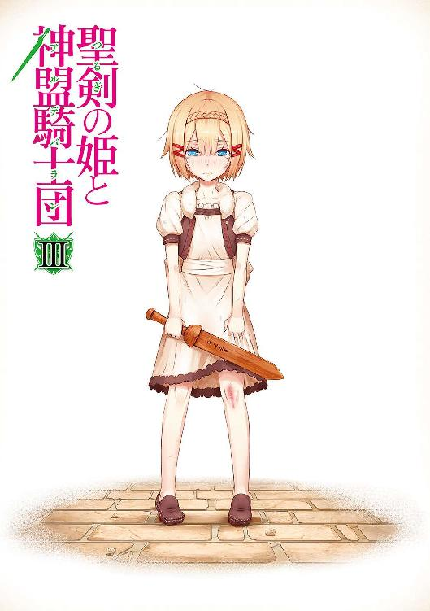

| 聖剣の姫と神盟騎士団 III (角川スニーカー文庫) | |
| 杉原 智則 | |
| (2013) | |


聖剣の姫と神盟騎士団 Ⅲ
杉原智則

角川スニーカー文庫
本作品の全部または一部を無断で複製、転載、配信、送信したり、ホームページ上に転載することを禁止します。また、本作品の内容を無断で改変、改ざん等を行うことも禁止します。
本作品購入時にご承諾いただいた規約により、有償・無償にかかわらず本作品を第三者に譲渡することはできません。
本作品を示すサムネイルなどのイメージ画像は、再ダウンロード時に予告なく変更される場合があります。
本作品は縦書きでレイアウトされています。
また、ご覧になるリーディングシステムにより、表示の差が認められることがあります。
序章
濃い霧が出ていた。
山地の一角に当たるこの辺りで霧が出ると、近隣の狩人ですら仕事を切りあげて、拠点にしている小屋や村まで駆け戻る。
まことしやかに囁かれる伝説があった。
「近くに、誰も見たことのない湖がある。湖には妖精たちが住んでいて、人間の干渉を嫌ったために霧の結界で外界から閉ざしたという話だ」
夜中、蠟燭一本の灯りを立てながら、よく村の古老などが幼子たちに聞かせる類の話だ。
「だがあるとき、畏れ知らずの人間たちは、湖の近くにある森の木々を伐採してしまった。すると、湖を覆っていた霧が村にまで漂うようになったそうだ。そしてその霧が晴れたとき、必ず村のなかから人間がひとり、あるいは二人と消えていたという──。そう、霧のなかに潜む妖精たちが、人間たちを次から次へと湖のなかへと引きずり込んでいって、そしてついには村のなかには誰ひとりいなくなってしまったのさ。二百年も前のことだ。それ以来、近隣の里はその湖はとうの昔に涸れたということにして、誰も近づくことがなくなったのだ──」
山地をねぐらとする狩人たちは迷信ぶかい。老いも若きも、たとえ獲物を追い詰めている最中であっても、霧がかかりはじめるとその向こうへは絶対に足を踏み入れない。
だが、その日に限って、ただひとり、霧のなかを進んでいく愚かな人影があった。
王女リラエアが帰還した──。
突然の知らせに、ベリンダの国は大騒ぎになった。
外界から霧で閉ざされたその王国は、当然ただの人間たちが住まう国ではない。が、だからといって伝説で語られるとおり、人を喰らう妖精たちの国というわけでもなかった。
リラエアはしばし待たされた。数年ぶりに国へと帰還してきたこの王女は、苛立ちの様子も見せず、心を静かに落ち着かせていた。
謁見が許された。
重々しい扉が眼前で開くとともに、王女の記憶と寸分たがわぬ光景が視野いっぱいにあらわれた。目の前に延びていく七色に輝く道、やはり色あいを時折変えながら発光する柱の群れ、左右に居並ぶ裾の長い衣服を着た男女。
ベリンダを発ってから七、八年近くにはなるだろうか。なにより、（変わらない）とリラエアが感じたのは、玉座に腰掛けるひとりの女性だった。若く、美しく、そして自分を見つめる目は冷たい。
「女王」
とリラエアが呼びかけるより早く、
「門番の兵たちをあとで叱ってやらねばなりませんね」
女王は機先を制するようにいった。いっさいの感情をうかがわせない声音で、
「この者は咎人である。禁を破ってこの国を追われた者が、なぜこうもたやすくわが城を出入りする。これは兵の不手際ゆえ、あえておまえの罪を追及すまい。これ以上その身に穢れを負いたくなければ、即刻この城から出ていくがよろしい」
そういって、席を立とうとする。廷臣たちが声を低くしてざわめいた。
リラエアはすばやくその場に膝をついた。
「女王ネイアー陛下のお許しも得ず、城に足を踏み入れたことはお詫び申しあげます。わたしとて自分の犯した罪の重さは承知しております。二度とこの国、この城に戻ることはかなわず、女王のお顔もふたたび目にすることはあるまいと覚悟しておりました。されど、どうしても──どうしても陛下にお頼みしたきことがありまして、こうして恥を忍んで戻ってきた次第であります」
「ほう」と女王はいかにもおかしそうに口を手で覆った。「自らの罪の重さを承知した上でなおわが城を訪ねて、あまつさえ頼みたいことがあるという。その厚顔無恥な態度、なるほど『小さき者』の血を引いているだけはある。わたしたちニンフにはとうてい理解できぬその精神構造に、多少の興味がないこともない。いうだけいってみなさい、咎人よ。無聊を慰めるいっときの座興にはなるかもしれません」
「なれば、単刀直入に申しあげます」リラエアは平伏したまま、女王の気が変わらぬうちにとばかりに早口でいった。「反魂珠を、わたしにお預けいただけませんか」
女王は押し黙った。笑うか、むしろ大声を出して罵るか、いずれも試みようとして失敗したような顔つきだった。ややあってから、
「咎人よ、確かに座興になるかもしれぬとはいったが、それは戯言を通り越してわれらに対する侮辱になりかねませんよ」
「戯言でも侮辱でもありません、陛下。死者の世界から魂を呼び戻すという、ベリンダの国宝。その反魂珠をいっとき、わたしにお預けいただきたいのです」
リラエアもあえて淡々とした口調でいった。二人がやり取りするあいだ、広間に集った老若男女は驚愕を貼りつけた面をいく度となく見あわせている。女王が『侮辱』と決めつけたように、それはあまりに彼らの想像を超えた、常識外れの頼みごとだったからだが、女王の家臣たちのなかでもっとも年老いた男が、ただひとり、
（まるで、あのときのようだ）
周囲には聞こえないていどの小声で囁いていた。
（女王ネイアー陛下がまだお若きころ......まるであのときの光景がそっくりそのまま再現されているようではないか）
「なにゆえ？」女王の美貌は先ほどよりむしろ感情の色をなくしたようだった。「わがベリンダの国宝と知っておきながら咎人が反魂珠を欲する理由はなにか？ これもついでだ、申してみなさい」
リラエアは面を伏せたまま、宝を欲する事情を語った。それは、彼女個人の事情というよりも、このベリンダと地理的な距離において決して遠くない位置にある人間たちの国や集落を巻き込んだ大がかりなものだった。途中、
「黒魔術だと？」
思わず声をあげてしまったのは、女王の家臣団だ。彼らの顔にことごとく覗いた驚きの色は、先ほどまでのそれとは種類が異なる。苦々しい記憶をともなう古傷をうっかり指で触れられたような顔をしていた。
「まちがいありません。南方のカーラーン国はかつて禁断の呪法として封じられたはずの黒魔術を用いて周辺諸国を切り崩し、北へ、北へとその忌まわしき歩みを運びつづけております。この勢いのままなら、さして時も隔てぬ将来、このベリンダにまでカーラーンの魔手は伸びるでありましょう」
ざわめきが絶え、宮中が静けさに包まれた。静けさは、ベリンダの、この国に住まう水の妖精ニンフ族の歴史を内包していた。通常の人間であれば二、三人ぶんほどの長い記憶が、カビも生やさず、生々しい血のしたたりを帯びたまま各々の歴史として胸によぎっていた。
（黒魔術──あの忌まわしき、巨人とその召使いどもが操っていた呪法か）
（神々がつくりたもうたこの世を、魔神の宮につくり替えるものだ）
（『小さき者』め、〈門〉を巡る大戦争で十分懲りたものと思っていたが......）
「その、黒魔術の力で魂を奪われた者がおります。カーラーンの台頭、すなわち黒魔法の拡散を喰い止めるにはどうしても必要な方。ですから、反魂珠をお貸しいただきたいのです」
「その方とは、グラジス・エストールのことですか」
「はっ──」
かの英雄、聖剣団団長グラジス・エストールの名は、このベリンダにも決して無関係ではなかった。
「そうですか、あの男が。あの男とともにおまえがこのベリンダを発っていかほどの時間が過ぎ去ったか。もはや『小さき者』としての世界を生きるおまえとわたしとではその概念も異なっているのでしょう。おまえは確かそのとき以来、人間としての名を得たはず。なんといいましたか」
「スィー・ランと......いまはそう名乗っております」
「では、スィー・ラン。おまえは一度ニンフとしての名を捨てて『小さき者』のその名を得た。いま一度、その名を捨て去る覚悟はありますか」
「い、いかなる意味でございましょう」
リラエアは──いや、聖剣団部隊長スィー・ランは、その大きな瞳をぱちぱちと瞬きさせた。
その後、女王とランとのあいだで交わされた言葉を、家臣たちはこれまで以上の驚きと衝撃をもって耳にした。スィー・ラン自身も当初啞然となって女王を見つめるばかりだったが、やがて顔を赤くして、最後には青白くなってうつむいた。
「わかりました」
とうなだれたままランが声を発したのは、彼女がこの広間に姿を見せてからいかばかりの時間が経過したのちか。女王が口にしたとおり、この国と人間の世界とでは時間の感覚が異なっている。ランは一日も二日も寝食を取らぬまま議論を交わしたような思いがしていた。
「では、ラグナの谷へ遣いを出そう」
数多くの波紋を宮中に投げかけておきながら、まるで結論ありきの議論が予定どおりに終わっただけであるかのような態度で、女王は冷淡にいった。
「無論、ただ『小さき者』をこの国へ招待するわけにはいきません。使者の役目としては......そう、グラジスには娘がありましたね。彼女もこの地には縁のある者。彼女がよいでしょう」
スィー・ランははっとしたように面をあげ、それからもう一度息を吞んで口を閉ざした。
こちらから遣いを出すまでもない、と女王が判断したのは翌日のことである。
霧深い山地を越えて、一艘の船がベリンダに近づいてきていた。向こう岸から湖上を進んできたという意味ではない。その船は、険しい山道のなかを、まるで海の上をいくがごとくに航行してきたのだ。
一章 妖精からの招待状
１
陽暮れかかったラグナの谷に鐘の音が鳴りひびいた。唯一、人の行き来が許されている南門の鐘楼が奏でるそれは、「敵来襲」を意味している。
谷の人々がはっとしたように足を止めた。いったん不安げな顔を見あわせたのち、男は女たちの、女は子供たちの手を引いて、いっせいに軒下へと急ぐ。
ひとり、そうした人の動きに逆らって南門への道を駆けていくのは、聖剣団見習いの少年ダーク。
ここのところカーラーンに大がかりな動きはなかったはずだ。かつての上官であったハスター・エンデコの話によれば、ラグナ郷攻略を任されていたのはドレームという武官。ダークが八度目の攻略戦に参加したときも確かこの男が軍勢の総指揮官だった。そのドレームだが、先ほどの戦いでラッセルによって負傷させられたため、後続の部隊もろとも陣を引いている。その後、フィーネやダーク当人、またラグナの谷にいるわずかばかりの軍人たちが偵察行動をおこなったが、新たな軍事部隊がカーラーンの領土から発ったという情報は得られなかった。
聞くところによれば、カーラーンは東のジャウォール国との戦争状態にあり、その戦いが泥沼化している模様だという。谷に割く余分な兵力さえも惜しくなっているのではあるまいかということだ。と、
「ダーク！」
彼の顔を見かけた門の衛兵が声をかけてきた。谷へ通じる南側の隘路には数名からなる小隊が詰めている。その詰め所からの早馬によって鐘を鳴らしたらしいが、
「なんだ」報告を耳にして、ダークは鼻で笑った。「またあいつか。懲りないねえ」
そうしているあいだにも、谷の南門にはフィーネ・エストールも馳せ参じていた。鐘が鳴ってから数分と経っていないのに武装をととのえているのはさすがだ。
「ダーク、敵は」
「ひとりだとよ」
「ひとり？」フィーネはすっと目を細めた。「となると」
「おお、あいつだ。とっとと片づけてやってくれ」
「承知」
とフィーネは小気味いいほどすかさず顎を引いた。
先ほどの報告にあったとおり、やってきたのはおびただしい軍馬の群れにあらず、ただひとりきり。
その男──イアン・ウィーバーは谷へ通じる丘の頂上に居座って、フィーネたちがあらわれるのをいまや遅しと待ち構えていた。
一方のダークはそれと向かいあう格好になったもうひとつの丘の頂上にいる。聖剣団宿舎から巨大ゴーレム・ゴンゴルを『引いて』きて、その肩の上で胡坐をかいていた。イアンの待ち受ける場所へと向かったのはフィーネひとりだ。
「これでもう三度目だぜ、イアン」ダークは大声で呼びかけた。「いい加減、懲りてもうお家に帰りなよ。昨日命が無事だったからって、今日もそうだとは限らないぜ」
「黙れ、卑劣な魔法使い」
イアンはその目に轟々と黒い炎を宿している。なにやらごてごてとした大仰な甲冑を身にまとっていた。
「おまえら二人を討ち取らぬ限り、おめおめと国になど帰れるものか。勝負だ、聖剣団！」
と腰から長剣を抜き払う。
ダークが口にしたとおり、彼が谷にあらわれて戦いを挑んでくるのはもう三度目だ。目的はラグナの谷の陥落──というより、個人的な恨みつらみを晴らそうとしているといったほうが正しい。以前、彼の所属する部隊はダークの作戦に見事なまでに引っかかって大敗させられたばかりか、彼の尊敬する上官が国王エルドランの魔法によって『心を女に』変えられてしまったという。
ダークとフィーネに対する憎悪はもう言語に絶するものがあって、その後、少数の仲間を率いて谷にあらわれたものの、フィーネに一蹴され、さらに後日、ラッセルとの戦いがあった直後にもう一度あらわれたが、やはりフィーネと数合斬り結んだ末に追い返されている。
「まあいいや。今度もとっととくたばっちまいな」
「ふん、以前までのおれと同じとは思うなよ。北西、帝国時代のマァゴス街道を隔てた先にある未開林を知っているか。そう、巨人の遺跡があるというあの土地だ。冒険者たちの挑戦をことごとく退けてきたその遺跡を、おれは単身踏破したぞ。剣の腕にさらなる磨きがかかったのはもちろんのこと、かつて巨人族が妖精たちの王より奪ったという武具をも手に入れることができた。さあ、いくぞ聖剣団！」
雄たけびをあげるなり、フィーネめがけて躍りかかる。それに対し、「来なさい」と冷ややかに応じつつフィーネも腰の聖剣ゼスを引き抜いた。
あとは剣の撃ちあい、ステップの踏みあい、フェイントの掛けあい、そしてまた剣の撃ちあいだ。
ダークは特にすることがなさそうなので、ゴンゴルの肩の上で頰杖をついている。サボっているのではなく、一騎打ちに手出しをされるのをフィーネ自身が嫌うのと、まあ一対一ならあのお嬢さんが負けるはずもないだろうと楽観視しているからだ。
最初こそ互角に渡りあっているように見えながら、次第にフィーネがそのすばやい動きで相手を押しはじめた。めまぐるしく位置を変えながら、どの位置からでも強烈な一撃を見舞っては、同じ速度で引き返す。イアンはいつしか防御に大きな比重をおかざるを得なくなってきた。
いつもどおりの展開だ。
「やあっ」
フィーネが気合いの声を発してイアンにひときわ深く踏み込んだ。イアン・ウィーバーは真っ向から剣を受けた。踵が後ろへと滑る。フィーネがさらなる一撃を見舞おうとしたとき、
「ぬぬっ？」
ダークがおかしな声をあげた。イアンの身体が──いやその全身をよろった甲冑が一瞬のうちに砕け散った。フィーネの一撃によるものではない。甲冑はあきらかに自発的に四方へと散ったのだ。肩や腕、脚の部分はそのままバラバラに地面に落ちていく──かと思いきや、空中の一点でそれぞれ静止すると、四方八方からフィーネへ群がりかかったのである。
フィーネはその状況を見て取るや、後方へと跳んで左右から急降下してきた物体をかわした。いずれもイアンの腕を装甲していた篭手だ。ただし手首にあたる部分から長さ三十センチほどの刃を生やしている。肩当てや脚、腰の部分も同様だ。それぞれの部分が命を得たかのように空を飛んで、刃を光らせてフィーネを狙っている。
魔法具だ。先ほどイアンが口にした、「巨人族の遺跡から得た武具」とはこれのことだろう。この若者、ダークやフィーネへ復讐を果たすために各地の迷宮を巡っては、そこを住処とする怪物たちや、遺跡や古城の守り手であるゴーレムらと戦って修練を積むばかりか、迷宮に隠された魔法具を集めているらしい。
今度はフィーネが防戦一方に追い詰められた。無理もない。一対一の決闘のはずだったのに、突然敵の数が何倍にも膨れあがったようなものだ。「あの野郎」とダークがさすがにゴンゴルの上で重い腰をあげた。と、見てもいないのにその気配を察したか、
「加勢は無用です、ダーク」
フィーネの言葉が耳を射た。
「なにを！」
叫んだのはダークではなく、イアン。彼にしてみれば、この魔法具は、フィーネのみならず、ゴルボ族やゴーレムを操るダークをも同時に敵にまわすことを想定して装備してきたものなのだろう。
だというのに、その威力を目の当たりにしながらもフィーネは「ひとりでやる」という。
ならば目にもの見せてくれる、とばかりにイアンは命なき『仲間』たちとともに駆け込んだ。フィーネの小柄な肢体めがけて殺意の影が殺到する。
次の瞬間、フィーネは舞った。
軽くちょこんと前方に跳躍して背中に横薙ぎに襲いかかっていた篭手をよけて、つづいて背中を弓なりに反らすことで前方から斬りかかっていた脚部をやり過ごし、そのまま後方へ宙返り。右前方から飛びかかっていたもう片方の篭手がカチンと音を立てたのは、宙返りした拍子に装甲したフィーネの足で弾き返されたからだ。
風に逆らわぬ羽毛のごとき軽やかさ。
そして地面に降り立つや──一転。フィーネは、穴を穿つ勢いで大地を蹴り飛ばした。ぎりぎりまで身を屈めることで、円周上に刃を生やした腰の部分をよけ、あっという間に敵の懐まで迫った。
イアンは自分のほうこそ特攻をしかけようとしたのに、いつしか相手にあっさり懐まで詰められていたことに動揺を隠せない。
その瞬間に勝敗は決した。
振りかざした剣はイアンのその頭上で真っ二つに折れた。つづく刃を、イアンは舌打ち交じりに後退しつつ回避。
「戻れっ」
彼がひと声かけると、ばらばらに散っていた装甲が糸に引かれるかのようにイアンのもとへと再集結した。イアンの面前にいたフィーネはそれらを避けるために横っとびに跳躍せねばならず、それがイアンの逃走時間を稼いだ。
フィーネもあえて深追いはせず、腰にゼスを戻す。
罠がないとも限らないし、カーラーンの軍勢に比べれば当然こちらは数に劣る。ひとりにかまけていたのでは、ほかの部隊がその留守を狙ってくることも考えられた。
「やったな。いつにも増した剣の冴えだ」
いつしか、ひょこひょことダークが近づいてきている。まるでフィーネに一から剣を仕込んだのはわしじゃ、といわんばかりの態度だったが、
「いえ、彼も腕をあげています。彼の成長に追いつかれないよう、わたしも精進せねば」
フィーネはそっと頰を拭った。わずかに頰が切れて血が滴っている。
と、目の前をなにかがひらりと舞い落ちた。
ダークが反射的に拾いあげてみると、数枚の紙切れだ。束ねた上でイアンが懐かどこかに隠し持っていたのが、逃げた拍子に散らばっていったのだろう。
「ん、これは」
ちらりと見てダークがかすかな唸り声を発したとき、
「ダーク。あれを！」
フィーネが語気も鋭く、南の方角を指差した。
海面をうねる大蛇のごとくいくつも盛りあがった丘陵地の向こう側に砂煙が立っている。
すわ、カーラーンの大軍か、とダークが血相を変えた。フィーネの手もふたたび腰の位置にある。
が、そちらの方角に目を凝らし、耳をそばだてていたフィーネが、
「ああ」
とひとつ息を洩らした。
そちらを見やったダークが思わずぎょっとしたほどに、フィーネは先ほどの『剣士』の顔から一変していた。かすかに潤んだような瞳でダークを見つめ、口もとをほころばせている。こぼれた白い歯が奇妙にまばゆい。
「ヒエンです」と腰の位置から手を離しながらフィーネはいった。「あれは、ヒエンの陸上船──モーガウィル号です」
２
その船をひと目見たとき、ダークは本能的な恐れに駆られて思わず震えあがった。
それも当然、彼はカーラーン兵として八度もラグナ郷への攻略戦に参加している。戦場となった場所のことごとくでこの『陸をいく船』を目撃しているのだ。
甲板から三本立った柱には帆が白く翻っていた。風になびくのは帆のみにあらず、旗にあしらわれた巨大な頭蓋骨──それも片方の目から眼球が垂れさがり、うっすらと髪の毛の名残を残した生々しいもの──も、けたたましく笑うかのように大きくはためいている。
その海賊旗が意味するところは、
「この船のいくところ、それすなわちインコルマ一家の通り道。陸であれ海であれ、邪魔立てする者はたとえ女子供、またその頭に冠を頂いたどこそこの王であろうと、道端から飛び出した犬も同然。一片の情けもかけぬ」
ただしこの船、海賊の女帝ヒエン・インコルマのものだと知らなければ、まるで王侯貴族が実用性を無視してつくらせた芸術品のようにも見える。それほど無骨な印象とはほど遠い。船体のシルエットは細く、華奢で、むしろ女性的とすらいえた。無駄な装飾品のようにも見える細長い帯が、南方の天女伝説にある羽衣のように艦橋や甲板をふわりと包み込んでおり、その帯も船体も、やや薄桃色を孕んだ銀色に輝いていて、それがただの木によってつくられたものでないことを物語っている。
なにより──『陸上船』と呼ばれるように、この船は起伏した地面を海上のごとく移動し、土を水しぶきのようにはねあげながら前進してきた。よく見ると、この船のいくところ、それが固い土であれ岩であれ、水そのもののように波打って船を前方へと運んでは、船の通った直後にまた普通の地面に戻っていくのである。
当然、魔法の船であることはいうまでもない。それもなまじの魔力ではなかった。
ダークが震えあがっているのをよそに、船は土砂をまき散らしながら彼らの見つめる先で停止した。
ほどなくして甲板上にひとりの女性が姿を見せた。
「そこにいるのは、団長どのの小生意気な娘、フィーネ・エストールか？」
「そういうあなたは、〈あまねく海の女帝〉ヒエン・インコルマ？ 今日も甲板に山と財宝を乗せて帰ってきたのですか？」
「ははっ、久しぶりだな！」
女性は甲板からひらりと飛び降りてきた。
長身の、陽にこんがりと焼けた肌をしたこの女性こそ、いうまでもなく聖剣団部隊長のひとり、ヒエン・インコルマ。フィーネが口にしたとおり、〈あまねく海の女帝〉の二つ名でも知られる元海賊の頭だ。
飛び降りると、全身に巻きつけた太い鉄鎖がじゃらりと物騒な音を立てた。両肩から垂れさがった先端部には、それぞれ錨を模したと思われる形状の鉄塊がぶらさがっている。いかにももとが海賊の長らしい恐ろしげな得物だが、それだけでなく、彼女の左の腰には刃の湾曲した剣が、そして右の腰には小型の十字弓らしきものがあった。
「谷に変わりはないか？ 団長は？」
「どちらも、ヒエンが旅立ったときと同じままに」
「よくも悪くもならずってことか。すまねえな、まさかほかの連中まで谷を飛び出していくとは思わなかったんだ。部隊長が誰もいなくなった谷をカーラーンが攻めた、って聞いたときはさすがに肝を冷やしたぜ。しかしフィーネたったひとりで二度、三度も奴らを退けるとは、あたしの知らないうちにいったいどんな力を手に入れたんだ？」
「わたしひとりの力などではありませんよ。こちらにいる──おや、ダーク。どうしたのです、そんなところに隠れて」
「お、おれに構うな」
ダークは丘に点々と生えた木々の陰に隠れている。先ほども述べたが、彼は戦場で何度となくヒエンを目撃し、一度などは彼女自身の投げつける鉄鎖が頰をかすめたこともある。ここでヒエンと顔をあわせたが最後、
「ほう、貴様は一度ならずあたしの前に立ちはだかったカーラーンの勇士。たったひとりであらわれるとはこれまたいい度胸だ。さあ、ここで決着をつけるか！」
などと鉄鎖を振りまわしてきかねない。
「強敵と決着をつけるのはやぶさかでないにしても、き、今日は日取りが悪い」
「なにをブツブツおっしゃってるのです？ さあ、照れずに」
フィーネはあっさりさっぱりダークの恐怖心を無視して、強引に彼の腕を取ってヒエンの前へと引っぱり出した。細い腕でよくもまあ、というくらいの怪力だ。
「ヒエン、ご紹介します。こちらが、新たに聖剣団所属となった魔法使いダーク。カーラーンの部隊を退けたのは、彼の活躍によるところが大きいのです」
「ひいっ、やめて見ないで、殺さないで、貞操を奪わないで」
「そうか、ダークとやら、よろしくな」
ヒエンは気さくに声をかけ、肩を叩いた。それだけでダークなどは跳びあがって、失禁してしまいそうになる。ヒエンは太い眉をひそめて、
「期待の新人の割に、情緒が不安定な奴だな。こいつ、いつもこんななのか？」
「ええ──」フィーネは、涙と鼻水を洩らした小悪党の顔をじっと見つめ、「大体、いつもこんなものです」
「そうか、ならいいが」
ヒエンは剝き出しになった肩をすくめた。
その態度からわかるとおり、こちらはダークの顔など覚えてもいない様子だ。ダーク本人はぜいぜいと胸を撫でおろしつつ、
（これも普段の善行のたまものか）
などとこの『奇跡』に感謝しているが、ヒエンにしてみれば、蹴散らしてきた雑魚兵士のひとりや二人、覚えていなくて至極当然だろう。
そのころには、モーガウィル号の到着を聞きつけた谷の住民たちも近くに顔を見せていた。また、船の甲板上にはヒエンの部下らしき荒くれ男たちもあらわれ、手を振りあったり、知りあいの人物に呼びかけたりしている。
「ヒエン、ここで立ち話をしているより、宿舎のほうにいきませんか？ ジョアズさんたちもさぞ懐かしがってくれるでしょう──」
「いや、悪いが、フィーネ」
ここで旧交をあたためていたヒエンの顔がはっとしたようにわれに返った。
「実は、ここで立ち話をしている時間も惜しいくらいだ」
「また、いずこかに旅立たれるのですか」
フィーネは一瞬寂しげな顔になったが、こちらもすぐに真顔に戻った。
「父上、いえ団長をもとに戻すためとあれば仕方ありません。どうか谷のことはわれわれに任せて、ヒエンは探索をおつづけ......」
「旅立つには旅立つが、しかしあたしたちだけじゃない、おまえもだ、フィーネ」
「え？」
フィーネは呆気に取られた。近くにいたダークもきょとんとなる。
「わたしが、これからどこへいくというのです？」
「モーガウィル号でラグナへ戻ってきたのも、おまえを迎えに来るためだ。さっきいったように急ぎの用件だ。手早く話すから、よく聞いてくれ──」
ヒエン・インコルマは谷を発った当初、特にあてどもなくラグナ周辺をモーガウィル号でさまよっていた。
しかし半月ほどかけても成果はなかった。もともと気が短いヒエンのこと、
「こうなりゃ、やっぱりこの船で直接カーラーンに乗り込んで、団長の魂を奪還してくるか」
と、半ばやけっぱちな気持ちでいたところ、ふと自身の駆っているこの魔法の船について思いを馳せた。
モーガウィル号と名づけられたこの船、実は、海賊一家であったインコルマ家がもとから所有していたものではない。
ヒエンが正式に聖剣団に加わった四年前に、ほかならぬ団長グラジスからの贈り物として得たものだ。ではそのグラジスがいかにしてこの船を手に入れたかというと、これが人間ならざる者の手から与えられたものらしい。
すなわち妖精族である。
（ほへえ）
と、この話を聞いていたダークが内心唸ったのも当然だ。カーラーンに所属していた彼のこと、黒魔術で召喚され、操られていた魔物やら怪物やらは飽きるほど目にしてきた。しかしさすがに妖精族を目にしたことはない。いまも実在するとはいわれていたが、竜と巨人族が争った神話の時代以降、ほとんど人前に姿をあらわすことはなくなったため、すでに滅んだと主張する識者たちも数多くいるほどだ。
（そういや、フィーネの甲冑も妖精に打ち出してもらったものだとはいっていたが、『地の妖精ドワーフ族の手になるもの』なんてのは魔法の品の宣伝文句によく使われる類のものだ。あのときは本気だとも思わなかったが、なるほど、ゼスにしろ甲冑にしろ、そしてこの船にしろ、確かに人間以外のものがつくった、といわれたほうがしっくりくるような品ばかりだ）
「このモーガウィル号には、一度通った場所を記憶する装置がある。船の記憶に沿って自動的に航行させることもできるのさ」
そこでヒエンは、いわばこのモーガウィル号の『故郷』と思われる場所に航路を設定した。
「......といっても、グラジスが妖精から受け取ったのは船そのものにあらず、この船の材料となった樹木の枝葉だったらしいがね。ともあれ、その樹木の記憶にしたがって船を移動させたのさ」
「船の材料となった樹木の故郷」ふとフィーネが考え深げな顔をして口を挟んだ。「......となると、湖の王国ベリンダ」
「知っているか。おっと、そりゃそうだ。おまえも団長とともにその国へいったことがあるんだったな」
（なにい）
ひとり、いちいちそれらの言葉に驚くダークをよそに、ヒエンの話は展開していく。
モーガウィル号は土や岩を水のように蹴立てて進んだ。
人間以上に魔法を巧みに操るとされ、そしてそもそも種族としては人間より神や竜に近いとされるのが妖精族だ。失われた魂を呼び戻す目的にかなう魔法具のひとつや二つ、あるかもしれない──そういう希望を抱いての『航海』だったが、
「それがまさにドンピシャリ」ヒエンは大きな手を目の前で打ちあわせた。「まさしくベリンダにはそのための魔法具が──妖精ニンフたちは『神器』と呼んでいたが──国宝としてまつられてあったのさ。その名も反魂珠。もともとは巨人たちとの戦いの際に使用されていたものだったらしい」
「まことですか」
フィーネが息を吞む。目をかすかにみはって、頰を紅潮させていた。
「ああ」ヒエンも心なしか興奮気味に頷いたが、「しかしベリンダにはすでに、それを求めて訪れた先客がいたんだ」
「どなたです？ まさかカーラーンの手の者ということは......」
「いや。だが意外といえば意外、当然といえば当然といえるような奴さ。ああ、悪い、こうやって時間を浪費してもしょうがないな。ずばりいおう、ベリンダへ先に訪れていたのは、スィー・ランだ」
「ランが」
ほう、というようにフィーネは一度頷き、それから、
「ランが？」
声に込められた感情を変化させて繰りかえした。その驚きぶりは、先ほど反魂珠の存在を知らされたときと負けず劣らずだ。「ああ」とヒエンは顎を引いて、
「どういう風の吹きまわしだかはわからない。ほかの奴ら同様、あいつは自分のことを必要以上に語りはしないからな。どうあれ、あいつはすでにベリンダに来ていた。そして目的はあたしと同じさ、もちろん反魂珠を求めてのこと。そしてあたしが辿り着いたときには話がついていた。ベリンダのネイアー女王は、反魂珠をいっときであれば他者に預けてもよい、と約束してくれたのさ」
（まことに！）
と、顔だけでフィーネは内心の思いを表現した。横目でちらっとうかがったダークは、しかし喜びを声には出さず、ぐっとこらえたような彼女の思いが手に取るようにわかった。
（なにかあるな）
とダークがにらんだとおりの思いを共有しているのだろう。
そしてヒエン・インコルマ自身、表情に不審の色をのぞかせながら核心を口にした。
「これを、ネイアー女王はグラジス団長の娘、すなわちフィーネ・エストール自身に手渡したいとおっしゃりやがるのさ」
「わたしに？」
フィーネは自分の顔を指差した。
「そう。あたしはもともとが海賊の出身だ。おまけに奴らの忌み嫌う人間。信用ならないのもわかるが──もっとも、どうしても目的をかなえたいときは相手の信用なんかあたしらにゃ関係ない──しかし、それならランに預けりゃいいものを、なぜかわざわざフィーネをご指名してきたんだ」
「ラン本人はなにかいっておられましたか？」
「さあてね」ヒエンは女性にしては幅のある肩をすくめた。「偉そうに使者なんぞよこしてきやがって、あたしとは直接顔をあわせもしなかった。もともと人間の世界に馴染んでいたとはいえなかったからな、久しぶりに母親に会って里心でも起こしたかね。妖精の血が目覚めやがったのさ」
「母親。......里心」
フィーネはぽつりと囁いて目を伏せた。一方のヒエンは赤い頭髪を搔きむしりつつ、
「まあ、妖精の考えなんかあたしたちにはわかるはずもないからつらつら悩んでたって仕方ねえ。──ってなわけで、フィーネ。あたしはこの船を持ってることをいいことに、ランに使いっ走りの真似事をやらされたってわけさ。おまえを迎えにいって、ベリンダまでつれてこいってね。けっ、団長のことがなけりゃ、ランのところに直接乗り込んでいって、あいつのすまし顔に鎖か矢の一本でも撃ち込んでいたところさ。ともかく急いだほうがいい。いますぐに発とう」
フィーネはちらりと後方を見やった。谷の人間たちが笑顔で手を振っている。モーガウィル号が戻ってきたことで、部隊長のひとりヒエンが谷の危機に駆けつけてくれたと信じているのだろう。
「ベリンダまでいかほどかかりますか？」
「場所はログエルよりさらに北東。馬でいけば半月以上はかかるだろうが、この船でなら七日──、いや、一度来たことでより効率のいい航路を設定できるだろうから、五日といったところかな」
往復すると最低でも十日。
フィーネは軽く眉を寄せた。ダークも多少のつきあいがあるからわかるが、彼女が思案しているときの癖だ。無論、この性根がまっすぐにして思考の単純な娘のことだから、これまたダークには心のうちが読めていた。
「おい、考える余地なんかないだろう」ヒエンが苛立ったようにいった。「確かに妖精はなに考えているんだかわからねえが、まさか妖精がその長い寿命を持て余して、人間を罠にかけて暇つぶしってこともねえだろうさ。気まぐれでもなんでも団長をもとに戻せるかもしれねえんだ。ここは少しでも急いで......」
「ヒエン」
と、フィーネは眉間の皺を消してヒエンのほうを見つめた。
「モーガウィル号と、船を動かせる最低限の人数だけ、わたしがお預かりするわけにはいきませんか」
「どういう意味だ」
「わたしたちが谷を留守にしているあいだ、ヒエンとその部下の方々に、谷をお守りいただきたいのです」
「なに？」
ヒエンはあきらかに不満げな様子で顔をしかめた。
「わたしたちが十日も谷を無防備にしていたのでは、カーラーンの進撃があったときにどうなるか。お願いします、ヒエン」
「うんざりだ」〈あまねく海の女帝〉は日焼けした顔を左右に振った。「おまえまであたしに命令しようってのか。おまけにモーガウィル号だけ預かるだと？ 船はあたしの命だぞ。どんな理由があろうと、そればかりはできねえ」
肩にかかった鉄鎖をジャラジャラ鳴らしている。取りつく島もありそうにない。と、
「ヒエン。命令ではなく、これは、役割というものです」
「あ？」
ぎろっとヒエンは目つきを鋭くしてフィーネを見やった。同じ女性とはいえ、体格の面ではまさに大人と子供ほどの差がある両者だが、フィーネはひるみもせず、かといってにらみ返すでもなく、
「父上もおっしゃっていたでしょう。誰もがただひとりで戦っているわけではない、ヒエン、あなたが今日の戦場を力いっぱい戦うことができたのも、ほかの仲間たちが自分にあてがわれた役割、任務をまっとうしてくれたおかげなのだと」
「まあな」
ヒエンもまた感情を激化させると思いきや、居心地が悪そうにそっぽを向く。フィーネはここでにっこりと微笑んだ。
「父......いえ、団長の魂を奪い返すのがわたしたちに与えられた任務であるなら、ヒエン・インコルマには肉体のほうを守る役割を担っていただきたいのです。いくら魂を奪い返したところで、団長の肉体が危機にさらされては本末転倒。それにヒエン、なにを考えているかわからないという妖精の国へふたたび赴くよりは、ここにてカーラーンの大軍勢を迎え撃つほうが〈女帝〉の仕事としてはよほどふさわしかろうと思いますが」
「──」
「退屈でつまらぬ仕事はどうかわれわれにお任せして、ヒエンには火矢が飛び交い、矛が盾の上で交差する戦場において、活き活きとご活躍していただきたいのです」
「ほう？」
ヒエンは髪の色と同じく、原始の炎を宿したように鋭い目を吊りあげた。傍目にしていたダークがひやりとするほどだったが、
「ちょっと見ないあいだに、少し、おまえ変わったな」
「そうでしょうか？ 自分ではわからないものですが──、よい方向にですか？」
「そうやって聞くところは、子供のままだがね」
ヒエンはにやりと笑った。
「いまのままなら、もう数年もしないうちにいい酒が飲めるかもしれないな。まあいい、船の野郎どもに話をつけてくる」
聖剣団部隊長はそういうと、すぐさま船の甲板に舞い戻った。即断即決が彼女の信条らしい。五分としないうちにまたも船をおりてきて、
「さっきもいったが、妖精族ってのはその多くが人間を嫌っている。半分人間の血が入っているランだってそうだったからな、気をつけろ」
どうやらこのわずかなあいだに話が決したらしい。ダークが驚いているのをよそに、フィーネはあくまでのんびりしたもので、
「ランは騒がしい場が嫌いであって、決してわたしたちを嫌っていたような素振りはなかったはずですが」
「おまえにはそう見えてたのか？ 人間、目がちがえばずいぶん見えている光景もちがうもんだな」ヒエンはやや大げさに顔をしかめた。「あいつにゃいつも喧嘩を売られていたような気がしていたが、どうやらあたしの勘ちがいだったようだな。『ヒエン、わたしの前で下品な言葉遣いをしないでちょうだい』『ヒエン、あなたが近づくと潮の香りでお茶の香りが台無しになるのよ』『ヒエン、あんまり団長を困らせてばかりいると、そのうち戦場では敵よりも背中に気をつけたほうがよくなるわよ』──」
くすくすとフィーネは笑った。ヒエンももう一度笑い、自分の胸くらいの高さしかない少女の頭をぽんとひとつ叩いた。
「ランの奴に話をつけて、お宝を手にしたらすぐ帰ってこい。祝宴の準備をして待っているからな」
「ええ、ヒエンもどうぞお気をつけて」
ダークがひと言も口を挟めないでいるうちに、どうやら話は決まったらしい。そしてフィーネが『わたしたち』『われわれ』という言葉を再三発していた以上、ダークの運命もまたここで決定づけられたことになる。
３
船をおりたのは、ヒエンとその部下三十名余り。残った十数名が操船を担当することとなった。彼らも上司に似て果断な性格で、
「くそう、ひと晩くらいは陸で酒に溺れられると思っていたのに」
「愛しのローズちゃん、元気かなあ。寂しがっているあまり、ほかの客になびいたりしてねえかなあ」
などとブツクサいいながら、フィーネたちを乗せるとすぐさま船を再出発させた。
フィーネたちという以上、ダークもその傍らにいる。
いまさら繰りかえすまでもない。ダークには聖剣ゼスの呪いがある。フィーネと距離を取りすぎるわけにはいかないから、当然、彼もまたモーガウィル号に乗船せざるを得ないのである。
その決定を覆す権利や力はいまのダークにはない。あるはずもない。彼は内心複雑な思いを抱えつつ、使い魔として使役しているゴルボ族を呼び出すと、彼らもまた同乗させることにした。
「まったく昨日までカーラーン軍にいたかと思えば今日はラグナの谷、かと思えば、明日は妖精の国ときやがったか」
船上でダークはつぶやいた。どれだけ本人が平凡な幸せを願おうと、運命の神は非凡なるダークの器を決して見逃さず、その激しい運命の流転にて弄ぼうと見えざる触手を伸ばしてくる。ダークは慨嘆しきりだ。
とはいえ、決して心底から嫌がっているわけではない。むしろ今回の旅路には、正直、気持ちがそそられるものも感じていた。なにしろ妖精と直接会えるかもしれないというのである。
「いまではもうほとんど人前に姿を見せなくなったとはいえ、大昔の英雄譚には妖精絡みのものも多い。いちばん有名なのは翼の勇者ヴァーナだな。森の妖精族エルフに育てられ、地の妖精族ドワーフの剣と盾で武装した、『この世で最後の巨人族の侵攻』を喰い止めた英雄だ。妖精の加護を受けた彼は、地水火風の精霊とも親しみ、数多くの魔法を使いこなしたという」
ダークは甲板の上でうそぶいた。風は強く、髪やマントが勢いよくなびいている。風景は文字どおり流れるように飛び去っていった。
「そこなんだがね」
甲板で見張りを担当していた海賊兵が首をひねった。見張りといっても、船は街道から外れた山道を進んでいる。人の気配は絶えていたし、なにより、馬の全力疾走よりも速く地面を走るこの船に襲撃をかけようなどという酔狂な者がいようとも思えない。そこで退屈しのぎにダークと雑談を交わしているのだった。
「こんな船に乗っておいていまさらと思われるかもしれないが、どうもおれには、いまいち『妖精』と『精霊』の区別がつかんのだよ。まったく同じものというわけではないのか？」
「まったく同じではないどころか、まったくの別物だよ」ダークは風に吹き散らされる髪を手で押さえながら笑った。「まあ、一般人はその辺混同していることも多い。わかりやすくいうと、妖精ってのは生きた種族さ。人間族、巨人族と同じで、肉体があり、寿命があり、そして男女がつがって繁殖する。一方の精霊にはわれわれでいうところの肉体はない」
「ほう？」
「精霊はこの世におけるありとあらゆる現象に宿る。なかには、万物すべてに──あんたが掲げているその槍にも、おれの着ているこの服にも、はたまた現在船が弾き飛ばしている石ころひとつひとつにいたるまで──一個の精霊が宿っているという説もあるくらいだ。精霊とは人間でいうところの人格そのものであり、つまり命があるなしにかかわらず、世界に存在するすべてのものに意思が宿っているということでもある。それを人間が知覚でき得るものかどうかとなると、また話が別だが」
「頭が痛くなってきた。酒を飲んできていいか？」
「まあ聞けって」ダークは自分の知識をひけらかすのが楽しくてならない。「精霊の魔法を使う、ってことはつまり、普段われわれが見過ごしているようなそうした『人格』に自分の意識を近づけて、コミュニケーションを図るということさ。たとえばいまおれたちの顔を嬲っているこの『風』。この『風』に直接語りかけて、〝もしもし風よ風さんよ、願わくはおれの顔だけ避けていってくれるとありがたいんだがね〟って具合に『交渉』して、結果、現象として引き起こされるものが魔法だ」
「自然そのものに命令できるということか」
「正解に近づいてきたよ。精霊魔法に長じれば、稲妻を呼んだり、炎を立ちのぼらせたり、風を呼び招いたりということも可能になる。ただし風のない場所に風を呼ぶ、ということはつまり、世界を変革させるも同様だ。万物の秩序を乱すということさ。そして秩序を乱すには相応の力が必要になる。大昔の例でいうなら、うちつづく大雨によって水没の危機に瀕した都市ダゴン。このダゴンにおいては、百人の神官たちが心をひとつにあわせて祈りを捧げた結果、ようやくのことで風を巻き起こして雲を払ったという。つまりは雲を払うほどの風を起こすにはそれだけ多くの力が必要になったという意味だ。ただ厄介なことに、精霊に関しては『精霊学』なんて学問があるほどに複雑かつややこしい。極論でいえば、術者ひとりごとにとらえ方がちがうといっても過言じゃない。古代の賢者イェオロが興した『イェオロ派』によれば、精霊は擬人化させることでもっともコミュニケーションが取りやすくなるというし、それと対立したマウドーラ師の教えによれば、擬人化させては精霊の力を矮小化させることにつながって、それではより大きな変革は望めないともいう。ピエタラ寺院における精霊魔法となると、とにかくもう個人の肉体的精神的な鍛錬によって、より人間を精霊に、つまり『世界に』近づけることこそが王道だと説いている。だからピエタラ僧ってのはあんな変わり者ばかりだし......」
「ああ、もういい。大変勉強になった」
ついに見張りの兵は音をあげた。
ダークは不満そうに唇を尖らせる。いったん興が乗ったこのおしゃべりの熱をどこかで発散させねば気が済まない。幸い、甲板上にはさほど遠くない距離にフィーネ・エストールもいた。
やはり風になびく髪を手で押さえつつ、遠方に目を凝らしている。ダークは声をかけようと近寄りかけて、ふと足を止めた。
フィーネのその眼差しには常に油断がない。平穏なときに心身の七割を休めていても、残り三割は必ず周囲の警戒に当てているというほどだ。が、いまのフィーネ・エストールにはそれが感じられない。もの思いにふける普通の女の子に見えた。
（昔なじみの仲間に会ったんで、安心していやがるのか）
なんとはなしに面白くない気持ちがしたのは、つまりそれは自分がフィーネに安心感を抱かせるほどに信頼されていない証のようなものだと思ったからだ。
「どうしました？」
気づけばフィーネがこちらを見ている。ダークはあわてて咳払いした。
「い、いや、少し聞きたいことがあって」
「なんでしょう」
と小首を傾げるフィーネはもうまったくいつもの彼女だ。
「え、ええと、フィーネ隊長は、これから向かうベリンダって国にいったことがあるんだろう？」
「ええ。もう七年も前になりますか。父上とともに訪れました」
「この、モーガウィル号の材料を求めて？」
「神木アイグレーの枝葉のことですか」フィーネは舷側の手すりを手でさすった。「少なくともベリンダへいくまでのあいだ、アイグレーの話題が出た覚えはありません。なにぶん、あのころの父は口数が少なく、わたしにもあまり多くを語ってはくださいませんでした」
七年前というと、ダークと同じ聖剣団下働きの身分にあるヤミーから聞いた話によれば、グラジスが数年仕えたログエルから出奔したあとのことだ。そのほかならぬログエルとの戦いで息子を失ったグラジスは妻とも離縁し、娘のフィーネひとりをともなって世界各地を放浪していたという。ベリンダもその旅路の過程にあったのだろう。
「アイグレーってのは？」
「わたしも詳しくはわかりませんが、森と水、双方の精霊力を宿した特殊な樹木なのだそうです。ベリンダを守る神木としてあがめられていて、父はむしろベリンダについてから、アイグレーに関心を抱いたようなご様子でした。ニンフ族の女王ネイアーとの謁見が許された父は、その席でアイグレーの枝葉をわけていただけないかと口にしたのです」
「そりゃまた大胆な」
「ええ」そのときの様子を思い出したのか、フィーネは視線を手すりに落としたままくすりと笑った。「ニンフの方々も驚いておられました。ですが、妖精というのは人間へ〈試練〉を与えるのが好きな種族なのです。過去の伝承や物語にもよくありますね。力を貸してほしいといった人間たちに対し──」
「『ならばわれらの出すこの〈試練〉を見事くぐり抜けてみよ。われらよりよほど命短きその身で、なお命を縮める覚悟があるというならば』」
ダークがあとを継ぐと、フィーネはこくりと顎を引いた。
確かにこういった展開は世界各地に残る妖精伝説によくある。妖精たちは一般的に人間を忌み嫌うとされている。だからこそその住処を人間たちから遠ざけているのだが、同時に、自分たちより寿命が短く、それだけに彼らからすると異常とも思える欲望を抱いて短い生涯を駆け抜ける人間というものに興味をも抱いているというのだ。
「ネイアー女王は父に三つの〈試練〉をくだされました。そしてその〈試練〉に挑む直前、王国の慣習にしたがって、女王と父とは〈血の盟約〉を交わしたのです」
それも伝説などに登場する機会が多い。妖精族が特に大事な約束事を前に交わす証文のようなもので、この盟約を守らぬ者は、生涯消えぬ罪を負うとされる。
「これにより、父が〈試練〉に無事生き残ることができればアイグレーの枝葉を手にすることが約束されたのです」
「で、その〈試練〉ってのは？」
ダークがわくわくしながら聞いた。妖精から〈試練〉を与えられるなど、ますますもってグラジスは生ける伝説そのものだ。そしてそういった浮き世離れしているほどの英雄こそ、ダークが人生の目標と掲げる理想像なのである。
「ひとつは、国の猛者十人と戦いつづけること」
「おう、来た。それでそれで？」
「父は十人に勝利しました」
「うん？」すかされたダークは、勢い込んだぶん前のめりに倒れそうになった。「いや、その、ほら、あるじゃない？ 相手はこうこうこういう奴で、こういう武器を使って、さすがのグラジスも相次ぐ連戦によって、一度や二度、命の危機に陥ったが、逆転の必殺剣でかろうじて勝利したとかなんとか」
「あまり覚えていないのです」一応は思い出そうとしたのか、視線を上向けてみたが、フィーネはすぐさまかぶりを振った。「それくらい、あっさり勝ちつづけたせいかもしれません」
「ま、まあいいや。それで二つ目は？」
「湖底で飼われている大海蛇を傷つけずに捕らえること」
「それっぽいそれっぽい。で、で？」
「父は、大海蛇を手なずけました」
「うん」
ダークはこのお嬢さんに決して吟遊詩人の才能を求めているわけではないのだが、それにしたって話のディテールをもうちょっと盛り込んでもよさそうな気がする。
「んで、最後は？」
「最後は......」
とここまで話したとき、甲板上にエプロン姿の元海賊があがってきて、二人を呼んだ。食事の時間になったので、いったん昔話はここまでとなった。
陽は沈み、代わって青白い月が顔を見せた。
どんなに起伏した大地の上を進もうと、船の内部はまったく揺れることなく、まるで凪いだ海面を進むがごとくに平穏そのものだったから、ダークは個人用にあてがわれた室内でゆっくりと横になることができた。
とはいえ、両手両脚を存分にのばせて休めるほどに広くはない。やや膝を曲げ、身を横向きにしながら、ダークは懐から数枚の紙束を取り出していた。
イアン・ウィーバーが落としていったものだ。改めて見やるに、それは建物の地図のようだ。構造に見覚えがある。
（こりゃ、ゲルウィンの塔の地図だな）
何枚か見比べながら、ダークは確信した。以前、カーラーンの軍隊が塔へ挑んだ際に、イアンの仲間がマッピングしたものだろう。ほかならぬダーク自身が、無策で塔に挑みかかろうとする彼らに地図を描くことの重要性を教えたのだった。
それをイアンが懐に持っていたのはなぜか。ダークが思うに、このときの記憶を長くとどめておくことで、ダークやフィーネへの復讐心を持続させようという狙いではあるまいか。やや寒気を覚えるほどの執念だ。
ダークはぺらぺらと地図をめくっていった。マッピング好きな彼にしてみれば、カーラーン兵のそれはまだまだ描き方が甘い。おまけにこうやって俯瞰で眺めてみると、部屋と通路のあいだに不自然な隙間が目立つ。
（マッパーが距離の取り方をまちがっているんじゃなきゃ、この隙間には隠し部屋があるっぽいな。あとでゲルウィンの塔にいくことがあったら、こっそり探検してみようか）
さすがに迷宮攻略の第一人者を自称するダーク、考えただけでわくわくが止まらない。
......などとダークがひとり、小市民的な『趣味』にひたっていた一方。
やはり個室をあてがわれて眠りについていたフィーネ・エストールは、泣いていた。
二章 湖の王国ベリンダ
１
「泣くな、フィーネ」
そう語りかけてくる若者は、黒い影そのものだった。
いや、背後に火炎を負っているため、ともすれば輪郭ごと影に吞まれて、顔かたちがまるで見えなくなっていたのだ。
「泣くな」
若者はもう一度繰りかえした。手が振りあがったので、フィーネは思わずびくりと肩を波打たせる。が、伸びてきた手はそっと優しく頰を拭ってくれた。それからやや乱暴な仕草でフィーネの髪を搔き乱しながら、
「泣くな」
（泣かない）
フィーネ・エストールは歯を喰いしばった。
いつしか場面が変わっている。
フィーネの周囲から赤々と燃え立つ炎、そして若者の影が消え失せ、一転して辺りはひっそりとした薄暗がりに包まれていた。
女性の後ろ姿が見える。長い髪が風に泳がされてさらさらと舞っていた。
（わたしは、泣かない）
フィーネ・エストールは心に期していた。
後ろ姿ばかり見せて、いっこうにこちらを振り向こうともしない女性への、それは当てつけのようなものだった。
（泣いてなどやるものか）
フィーネは小さい手を握りしめて、そして傍らに立っていたものいわぬ大きな影とともに歩きはじめていた。
船は険しい山道に差しかかった。ラグナの谷を出て、きっちり五日後の午後のこと。
舳先に立っていたダークは、眼前が白くぼやけているのに気づいた。とともに船の速度が落ちていく。いくらも経たないうちに、船上を霧が包んだ。
「これは──」
「ベリンダを守っている霧の結界です」隣に立ったフィーネが説明する。「ベリンダに近づこうとする人間はこの霧で視界を遮られ、方向感覚をも奪われる。もう数百年前も昔からベリンダはこうしておのが領土を守っているため、近隣に住む人間たちとてベリンダの存在を知らないほどなのです」
やがて船が完全に停止した。
地面に錨が打たれた。フィーネ、ダークらは船乗りに促されて船の外へと出る。霧はいよいよ深まって、視界はほぼすべて乳白色に染まっている。
「よく来られた」
「ひっ!?」
目と鼻の先から知らない声が聞こえてきたので、ダークは悲鳴をあげて跳びあがった。
「そこにいらっしゃるのはニンフ族の方ですか」
一方のフィーネは驚きも取り乱しもしない。霧のなか、いくつかの人影がぼうと浮きあがっていた。
「いかにも。聖剣団団長がご息女フィーネ・エストールをわが国へご招待せよとの命を受けている。あとはその船も、乗組員の方もお通しすることはならん。そなたひとりで参られるがいい」
言葉遣いこそ丁寧だが、その声には不遜な響きが混じっていた。
「わたしひとりで？」
「左様。人間などをわが国に多数招き入れるわけにはいかぬ。そなたにしてもこのベリンダにおいては特例なのだ。ありがたく思うがいい」
などといいのける。元海賊兵たちはそれぞれ歯を剝いて、
「こいつら、前もこんな感じだったんだよ」
「船の導きにしたがって湖の前まで来たのに、こいつらが通せんぼをしやがったのさ。うちの頭さえなかに通そうとしなかった。だというのに、急に向こうから使者がやってきて、言伝だけ渡してきやがって」
ニンフたちの世界でなにがあったかは知らないが、スィー・ランからの言伝が本当なら、この『陸をいく船』がベリンダを訪ねたのは、彼女にとって文字どおり渡りに船だったのだろう。もっとも手早く移動できる手段を有したヒエンは、ベリンダに足を踏み入れることもできないまま、ただフィーネへの伝言を託されラグナの谷へつき返されたのだ。
ヒエンが苛立っていたのもそれが原因だろう。
「あなた方は、ここにてお待ちください。目的のものをお預かりできたら、すぐに帰ってきます」
フィーネは不満の色を露わにした元海賊たちを柔らかい口調で説得した。
「もうよいか。ならば参るぞ」
霧のなかで人影は鼻を鳴らした。と、
「お待ちください」
「なんだ？」
「わたしひとりで、とおっしゃいましたが、いまひとりを加えていただけませんか。ここにいる、魔法使いダーク。彼もまた聖剣団のひとりです」
とフィーネが申し出たのは、なにも彼が頼りがいのある仲間だと思っているわけではなくて、彼女には珍しく聖剣ゼスのことを忘れなかったためだろう。
案内役らしきニンフ族の男はもう一度鼻を鳴らした。いまや侮蔑の感情を隠そうともしていない。
「ならん。そなたひとりをお通しせよと仰せつかっている。これ以上無駄な問答は無用だ。ベリンダへ入りたいのなら、大人しく──」
「そうですか。ならば皆さん、失礼するといたしましょう」
ダークがぎょっとしたことに、フィーネはそういうなり、くるりと踵を返してしまった。
「ま、待て。どういうおつもりか」
「それはわたしどもの言葉。わたしの記憶が誤りでなければ、最初にわたしをご指名し、ベリンダへ招かれたのはそちらのほう。だというのに、招いた側が礼を失してただひとりの同伴も許さぬとおっしゃる。わたしは王族でも貴族でもありませんが、そのように軽く扱われるいわれもございません。どうか、このたびのことはお互いなかったことに」
などといってすたすたと歩き出そうとする。ダークが啞然となっていると、
「お、お待ちあれ」
霧のなかから当惑したような声が発せられた。しばし間があったのち、
「......ただいま、女王ネイアー陛下よりお言葉をたまわった。特例をひとつ増やされるとのこと。そちらの魔法使いどのもご同行を」
という。『ただいま』もなにも、女王とやらがこの場にいるとは思えないのだが、フィーネはすぐに向きなおって、
「ご配慮をいただき礼を述べさせていただきます。さあ、ダーク、参りましょう」
などと素直にこの申し出を受けた。ダークはというと目を白黒させたままこれに従わざるを得ない。内心では、
（......この小娘、意外に喰えなくなってきやがったぞ）
などと思っている。
ダークとフィーネは二人して、霧のなかを進みつづけた。前をいく影についていく。そのころにはすぐ隣を歩いているはずのフィーネの姿すら影となって、表情も見えなくなっていたほどだから、もし先導役のうっすらとした影まで見失ってしまうと、この乳白色の世界にたったひとり置き去りにされて、あとは進むも戻るもならず、このまま朽ち果てていってしまうのではないかという恐怖がこみあげてきた。
「こちらへ」
長らくぶりに先導役が声を発した。
ダークが内心安堵したのは、ここに来てようやく霧が薄くなりつつあったからだ。
それでももうもうとした霧が視界の大半を遮るなか、眼前に広がっていたのは巨大な湖だった。
水は青く澄みわたっている。しかしダークが思わず喉を鳴らすほどに、霧の只中にあったときと変わらず不気味な雰囲気があった。湖上にはさざなみひとつなく、生き物の影も形もない。まるで時が止まったか、あるいは巨大な絵画を見せられているような錯覚に陥った。
「人間の身ではこの上は渡れぬ。船を用意したのでそちらへ」
という先導役はすでに湖の上にあった。やや霧が薄らいだなか、はじめて見えたその後ろ姿は人間のそれと大差ないように見える。が、そんなことよりなにより、彼らが湖の上に平然と立っているのにダークは驚かされた。足もとには小さく波紋が広がっているのみで、そのまま沈んでいく様子はない。
ニンフ族は生まれながらにして水の精霊を操るのに長けているという。ベリンダを故郷とするスィー・ランが〈水霊王女〉と呼ばれていたことからもわかるとおりだ。
彼らのいうとおり、一艘の小船が岸に浮かんでいた。ロープでもやわれているわけでもないのに、ぴたりとその場に固着している。先に乗り込んだフィーネが、
「足もとにお気をつけて」
と手を差しのべてくる。立場が男女逆のような、と思いつつもダークは逆らわない。
舳先の反りかえった小船には一本だけ帆柱があり、二人が乗り込むと、自然に純白の帆が翻って、あるかなしかの風を受けて湖面の上を滑りはじめた。櫂も舵柄もなかったが、船はあたかも自分の意思で動いているかのように先導役のあとを追っている。いうまでもなく魔法の産物だろう。
周囲は静けさに満ちている。先をいくニンフらしき男たちも足音を立てず、また船も物音ひとつ発することなく、鳥や獣の声が湖を取りかこむ森を騒がせることもない。ダークはもう一度ごくりと多量の唾を飲んだ。数百年ものあいだ人間の接近を忌避してきたこの世界。やはり生身で足を踏み入れるべき場所ではなかったのではないかと思わせる雰囲気がある。と──、
「ダーク、あれがベリンダの城です」
フィーネが前方を指差した。
見ると、確かにうっすらとした霧の向こう、巨大な建造物があった。
丸みを帯びた天井の建物が横に三つ連なっており、そのあいだに数々の塔がそそりたっている。城壁らしきものが建物の中ごろの高さで巡らせてあった。が、湖のなかに忽然とあらわれたことからわかるとおり、この城は地面にあるのではなく、湖面に直接浮かんでいるように見えた。
青白く、内側から発光するかのように輝く、この世のどの鉱物とも思われぬもので築きあげられた城は、思わずダークが一心に見入ってしまったほどに美しかったが、ただしその姿が不鮮明だ。霧のせいばかりでない。なにやら影が薄く、空気中にたゆたっている。
「湖面のほうをごらんなさい、ダーク」
フィーネが指し示す指を下方へと向けた。ダークの視線が素直にそれを追うと、またもその目が驚きに丸くなった。
湖面には宮殿の姿が上下逆さまになって映し出されていたのだが、
「まるで逆じゃないか」
ダークが思わず声を発したとおり、水の表面に映る影のほうがむしろくっきりとして見える。上下を逆さまにすればちょうど本来の景色のように見えただろう。
「そのとおりです」フィーネは細い顎を引いた。「影に見えるほうが、この城の実体。逆に湖から突き出たほうがこの城の影なのです。水の妖精ニンフか、それに等しいほどに水の精霊を味方につけられる魔力の持ち主でなければ、この湖を潜り抜けることはできません。地上にあるのは実体ではなく影でしかないのだから、生身では入れないのも道理」
「じゃ、じゃあ、おれたちはどうするんだ？」
「ご心配なく」フィーネはいうなり、両方の目を閉じた。「あちらからお招きいただいた以上、こちらにもニンフの加護があります。ダーク、目と口を閉じて。慣れないうちは苦しい思いをするでしょうが、それも一瞬です」
「目と口を閉じる？ 慣れない、苦しい？ なんだそりゃ──」
あとになって思うことだが、どうにもこのフィーネ・エストールというお嬢さんは言葉足らずでいけない。次の瞬間、ダークは突然身体が沈み込むのを感じた。小船の舳先が湖面を割っている。すなわち前のめりになって、そのまま湖のなかへ潜り込もうとしているのだ。
「な、なんでっ」
突然のことに、そりゃダークも悲鳴をあげる。あげたものだから、ダークを一瞬にして包みあげた多量の水が、嬉々として口のなかへ浸入してきた。あっという間に呼吸経路を封じられたダークは、その代わりというように限界近くまで目を大きくみはった。
城の発する輝きが、水中をも青白く照らしている。
そのなかに、いくつかの人影が躍って見えた。薄い衣を魚のひれのように波打たせて泳いでいる若い女性たち、それに、ひょろ長い蛇に似た生き物に跨って、こちらと併走するように進んでいく少年たち。どちらもやはり青白く見える顔がこちらにからかいの表情を投げかけた。
そしてそれを最後の光景に、ダークは一瞬気を失った。
「ダーク。ダーク！」
肩を揺さぶられる力に、ダークは意識を浅瀬まで浮上させた。
「なんだよう」むにゃむにゃとダークは軽く抗う。「アルスにはおまえが餌をやってくれ。おれはもうちょっと寝る......」
「アルスがどなたか存じませんが、目を覚ましてください、ダーク。着きましたよ」
「着いた？」
ダークは眠気を振り払って目をこじ開けた。
気がつくとそこは天井の下で、石造りらしき通路がのびている。
「ベリンダ城の謁見場につながる場所です。気を失ったあなたを、ニンフ族の方が運んでくださったのですよ」
非難するような口ぶりに、思わずダークは反感を抱いた。
「ば、ばっか野郎。湖のなかにいきなり引きずり込まれりゃ、普通の人間は気を失うものなんだよ。いや、こうやって命があるだけでも奇跡みたいなもんだろうが」
「われわれにはすでにニンフ族の加護があると申しあげたはず。しばし目と口さえ閉じておけば、一瞬のうちに城へつながる洞窟へと入って、そこでは水の精霊力が働いて、われわれも普通に呼吸ができたのですよ」
「そ、それを早くいえ」
となると、ここはすでに船の上で見た、『湖面に映っていた宮殿』のなかということか。青い、沈鬱な色をたたえた内壁はやはり地上のどの鉱物のものとも断言できなかった。
ここではっとなったダークが自分の身体や頭に手をやると、水一滴ついていない。どうやら妖精の国での出来事を常識で推しはかってはならないようだ。
「ご同行の魔法使いどのは目を覚まされたか」
揶揄するような声が聞こえて、顔をあげると、そこにひとりの若者が突っ立っていた。声からして、ダークたちを先導してきたニンフ族だろう。
剝き出しになった顔や手足は心持ち青白い。黒目の部分がやや大きく、耳の先端が尖っているのを除けば、あとは普通の人間と大差なかった。身につけている装備は先端が二又にわかれた長い槍と、かすかに発光する小ざねの胴鎧。右のほうの肩にのみかかった薄手のマントが、風もないのにゆらゆらとなびいている。
「では、われらのあとについてきていただこう。女王陛下がお待ちである」
若者はあくまでこちらを見くだす態度を変えようとしない。よくよく見ると、目と目の間隔がやや離れがちだが、その顔立ちは美形とすらいって差し支えなく、ダークは本能的な反感を抱いた。
「なんだあの野郎、一兵士の分際で失礼な」
「彼は一兵士などではありませんよ」小声でフィーネがいった。「あのマントの色からして、女王と直接拝謁できる権限を持った、位の高い戦士でしょう。そのような方がわれわれを直接お出迎えなさったのですから、やはりわたしを招いたのはただならぬ出来事のようです」
そういっているあいだにも、例の若者は通路の端にある扉の前まで歩いていた。普通、謁見場を守る兵士たちがいそうなものだが、そこにいるのは長い髪をした乙女ひとりきりだ。狩人の弓にも似た、優美な曲線を描くハープを肩にかけている。若者がひと声かけると、やはり黒目がちなそのニンフ族の女性はひとつ頷き、ハープの弦を白い指で弾いた。
ダークがぎょっとしたほどに大きな音が奏でられる。すると音そのものが鍵となったかのように、重々しい扉が音もなく左右に開かれた。若者に横柄な仕草で手招きされるままに、フィーネ、そしてダークが進んでいく。
扉の向こうから明るい光が放たれていて、一瞬ダークは目を細めた。
フィーネの後ろにつづいて一歩、また一歩と足を進めていく。
どちらからともなく立ち止まった。
「ほう」
広々とした空間の果てから、柔らかな声が投げかけられた。
「フィーネ・エストールですか。以前に会い、別れたのはほんの数日前のことだとばかり思っていましたが、『小さき者』の世界では驚くほどの年月が流れすぎたものらしい」
「お久しぶりにお目にかかります」
フィーネはいい、まだまぶしさに目が慣れないダークをよそにひとつお辞儀した。
「ベリンダの女王ネイアー陛下。フィーネ・エストール、お招きにあずかり、ここへとまかりこしましてございます」
２
謁見場は入り口から玉座までやや登り勾配の道になっており、左右に天井を支える柱が並んで、そのあいだに老若男女、大勢のニンフ族の姿が見える。その辺りは地上の国と大差ないが、ようやくのことで目が慣れてきたダークは、しかしその光景にまたも驚かされた。
光が波打っている。
中央の道から玉座にかけては天井がなく、では代わりに空が見あげられるのかというと、そこに広がっているのはまぎれもなく湖だ。彼らのすぐ頭上を水がたゆたっているようなもので、天から射しそめるゆたかな光が水面の屈折によってたっぷりと波打ち、柱の影やニンフたちの姿をも幻想的に揺らめかせている。あたかも水中に没した幻の都を透かし見ているかのような錯覚をおぼえた。
フィーネとダーク、二人の並ぶ先に白亜色の道がつづき、そしてその道を視線でなぞった先に玉座がある。腰掛けているのが、いうまでもなく先ほどフィーネが挨拶した女王ネイアーなのだろう。
女王という割にまだ若い。ニンフ族の肌は人間のそれと比べて脂が少なく、陶磁器みたいにつるりとして見えるから、実年齢よりはるかに若い印象を受けるものらしいのだが、この女王、顔かたちからしてまだ三十代の半ばも過ぎていないように見える。
腰まで波打つ髪は翡翠の光沢を放っていた。白いゆったりとした衣装を着こなし、玉座の肘掛けを利用して頰杖をついている。目立った装飾品は少ない。髪と同じ色にきらめく大きな瞳が、この広場に足を踏み入れてきた二人の人間をじっと見つめていた。やはり人間と比べると白目の部分が少ないためもあってか、ただの人間に凝視されているときとは異なる緊張感があった。こうして長いこと見つめられていると、そのまま翡翠色の森に自分が閉じ込められていくような思いがするほどだが、
「先ほどもいいましたが」女王ネイアーはどこか気だるげに口を開いた。「そなたら『小さき者』は少し目を離したあいだにずいぶん様変わりするもの。人間の時間の単位でいうといかほど経ちました？」
「七年ほどですか。わたしはあのときまだ人間の世界においてすら右も左もわからぬ若輩者だったゆえ、いわんやニンフの方々の国においていかなる礼儀知らずの行動をしたものだろうと思うと、恥ずかしさに消え入りたい思いがいたします。数々のご無礼があったものと思われますが、七年前の自分に代わってここにお詫び申しあげます」
（ほ、ほう）
隣のダークがわずかにひるんだのは、この場においてもフィーネがまるで物怖じせず、すらすらと妖精の王族相手に言葉を並べ立てたからだ。戦い以外のことにおいては世間知らずなお嬢さまのこと、きっと単刀直入に自分の用件だけ並べ立ててさぞお偉い方々の心証を悪くするだろうとばかり思っていたから、
（ここは聖剣団の知恵袋たるこのおれダークが、豊富な語彙を駆使して言葉による駆け引きをおこない、なんとしてもイニシアチブを握らねば）
などと勢い込んでいたのだ。が、実際のところ、ダークは小さく縮こまるばかりで挨拶の言葉さえまともに出てこない。自分ほどの男ならば権謀術数渦巻く宮廷においてさえも切れ者ぶりをアピールできると信じていたのだが、なにしろいわゆる王侯貴族と接する機会などこれがはじめてだし、おまけに相手は人間でないどころか、その存在が伝説とまでいわれた妖精族。ダークが知らず知らずのうちに萎縮してしまうのも無理からぬことではあった。
「恥か」とこのとき、ネイアー女王はゆたかにひびく声で笑った。「そなたら『小さき者』にそのような感情があったとは意外。そなたはそのなかでもあの傲岸不遜であったグラジス・エストールの娘御ではありませんか。なにをいまになって恥じ入ることがありましょう」
左右に居並ぶニンフたちのあいだからも笑いが起こった。ダークは反射的にむっとしたが、その笑いには、ただからかいや皮肉をこめたものばかりでなく、どこか敵意に似たものまで含まれていた。
「はて」と対するフィーネは表情を変えず、「なにも知らぬ子供同然だったわたしはともかく、父がなにかあなた方にご無礼を働きましたか」
「なにをとぼける！」
背後から鋭い声があがった。ダークが振り返ると、二人を案内してきた例の若者が、青白い顔を怒りに赤く染めている。
「われらをたばかり、神木アイグレーの枝葉を持ち逃げしたばかりか、リラエア王女までも地上へ連れさらったのではないか」
「たばかったとは心外」
フィーネは肩越しにちらりと相手を見据えただけで、その場を動こうともせずにつづける。
「父は、あなた方の慣習に従い、妖精からの〈試練〉を受けた。最初に十人と戦い、つづいて大海蛇を手なずけてみせた。その戦った十人のなかに、確かあなたのお姿もあったように記憶しております。その勝敗の行方さえ、七年のあいだで忘れ去ったといわれますか？ あなた方にとって七年とはさほど長すぎる年月でもなかったと思いますが」
いったん若者は言葉を飲み込んだ。顔色はますます赤くなっている。事情はよくわからねど、ダークは、
（いい気味だ）
と思った。が、
「確かにあの男はおれをはじめ、ベリンダの武人を打ち倒した。大海蛇をも乗りこなした。そこまではいいだろう。だが、最後の〈試練〉において、奴はわれらが国の禁忌を犯したのだ！」
武人の放ったひと声が、場の空気を一変させた。
まだどこか遠巻きにこちらを試すような雰囲気にあったのが、一足飛びに感情の一線を越えて、疑いようもない敵意に満ち満ちたのだ。
「そうだ」
と年老いたニンフ族が声をあげた。ダークがぎょっとする間もなく、つづいて、
「奴は最後の〈試練〉を勝ち残ることができなかった」
若者と同じく武装した男が槍を振りあげた。
「うら若き王女を騙して、アイグレーのご審判から逃れ出たのよ」
女性のニンフが金切り声をあげる。
「それが、『たばかり』でなくてなんであろう」
「おまけに奴めはアイグレーのご神木をこともあろうにドワーフの手に委ねたと聞く」
「まったく『小さき者』は度しがたい。奴らは短い寿命をおのが欲望のために費やすことしか知らんのだ！」
湖底の広間が怒号に満たされた。
（お、お、おおお？）
ダークはきょろきょろと左右を見わたし、この敵意の猛襲、そして殺到にうろたえた。
妖精は決して人間に好意を持っていない、とは伝説上でもいわれることだ。彼らが再三繰りかえしている『小さき者』というのがどうやら人間に対する蔑称だとは想像できるが、しかしその由来がなんであるのか──ただ単に身体の大きさでいえば、むしろ彼らのほうがやや小柄である──はわからないし、そもそもいまこの場を包みあげた敵意はそればかりでなく、どうやら七年前にここを訪れたグラジス・エストールの行為に原因があるらしい。
（ま、まさか）
七年ぶりに、わざわざフィーネをご指名して呼び寄せたのは、そのときの復讐をするためではないのか。
「まずい、フィーネ。逃げようっ──」
ダークはフィーネの手を引いて駆け出そうとした。が、フィーネの足は地面に吸いついたようになって動かない。
「落ち着いて」
「これが落ち着いていられるか！」
形相も凄まじく、なおフィーネの腕を引っぱろうとしたダークだったが、
「静まりなさい！」
頭上から雷のような声が降ってきて、思わずダークはその場に引っくりかえりそうになった。
威力はニンフ族たちにも等しく──いやそれ以上に──伝わったらしい。先ほどまでの怒号は噓のように静まり返り、ひときわ感情的に顔を赤くしていた例の若武者も、はっとしたように口をつぐんで、その場にすばやく膝をついた。
玉座から女王ネイアーが立ちあがっている。
「口を慎みなさい。われわれがお招きした客人であります。寄ってたかっての罵詈雑言などは『小さき者』の道義にももとるもの」
と美しいご面相で美しいことをおっしゃったが、
（て、手前が最初に『恥知らず』って口火を切ったんじゃねえか）
ダークは内心で突っ込みを入れざるを得ない。
「......それに」とネイアーは、眼下のフィーネ、そして家臣たちのほうを眺めながら、「禁忌を犯したのは戦士グラジスではない。皆々もそのあたりは承知でしょう。真に禁を破り、〈試練〉に挑む人間に力を貸してしまったのは、リラエア。そう、わたしの娘のほうです」
「し、しかし！」
いったんは大人しくなったあの若武者だが、いまのひと言はなぜか堪えかねたらしく、膝立ちのままぱっと面をあげて叫んでいた。
「王女リラエアは、女王の血を継ぎし真に高潔なお方。その証拠にこの場にいる誰よりもベリンダの水に親しみ、精霊たちを慈しんでこられた。それが......あ、あのような行動に出られたのは、グラジス・エストールめの甘言に惑わされたためでしょう。罪を負うべきは王女にあらず、畏れ多くもニンフ族の王女をたばかったかの者の......」
「お黙りなさい」女王はむしろ静かにいい放ち、若武者に翡翠色の一瞥を投げ与えた。「戦士ギプロー、それに皆の気持ちもわからないではないが、あれは正式に〈血の盟約〉にのっとったもの。そこにいかなる予想外の因子が紛れ込もうとも、盟約のなかで禁じられてさえいなければ、結末こそがすべて。グラジス・エストールはその意味においては見事われらの〈試練〉を乗り越え、ベリンダにおける戦士の位とアイグレーの枝葉を手にしたのです。これ以上あの〈試練〉の結末に疑問を投げかけるのは、ほかならぬこのネイアーが交わした〈血の盟約〉にも疑いを抱いているのと同じこと。戦士ギプロー、それでもまだ口を開きつづけますか？」
戦士ギプローと呼ばれた若者はかしこまった表情でかぶりを振った。ほかのニンフたちもいっせいに口をつぐみ、謁見場には以前のような静けさが舞い戻っていた。
「ダーク、手をお放しください」
フィーネが小声でいった。まだダークが彼女の腕を摑んだままだったのだ。「お、おう」とダークはあわてて手を放した。
フィーネは心持ち薄桃色に染まった顔を改めて女王のほうへと向けた。
なにか口を開こうとしかけたが、瞬間、はっとしたように目を見開く。
場内すべての者も同様だった。
「おお」
とかすかな声がそれぞれの口から呪文のように洩れ出る。
玉座の脇を飾っていたカーテンがさっと開いて、そこからしずしずと歩みを運んできた女性がいる。ダークには見覚えがあった。というよりも、ヒエンのときと同じく、本能的な恐怖に駆られて思わず身を隠しそうになった。
戦場で一度ならず顔をあわせ、その精霊を操った魔法によって散々苦しめられた相手──〈水霊王女〉スィー・ランその人だ。
すると、女王はダークには意外な言葉を発した。
「わざわざ時間をかけて紹介せずともよろしいでしょう。フィーネも承知しているとおり、ここにいるのがリラエア王女。一度は母と娘の縁さえ切った相手です」
（なにっ？）
そんなことは船上では聞かされていない。まさかこのベリンダにおける王女こそが聖剣団の部隊長スィー・ランだったとは。
一瞬驚きに打たれたダークだったが、このときふと首を傾げたくなった。
（待てよ。〈水霊王女〉があの女王の娘だとするなら、どうにも妙なことになるぞ？）
ダークの胸に渦巻いた疑念をよそに、女王は淡々とつづけた。
「禁を破り、一度は縁を切ったはずのこの娘が、それこそ『恥』を忍んでわが国へ帰ってきた。聞けば、かのグラジスを救うためにわが国に伝わる反魂珠を必要としているらしい。厚かましい願いであったが、それでも娘は娘。たとえ心でその縁を断ち切ろうとも、血のつながりばかりは断ち切れません。ベリンダに君臨する王として、いささか面目の立たぬことながら、しかしこれ以降、リラエアが心を改めて、王族としての生き方をまっとうするならば、とその罪を条件つきで許した次第」
リラエアともスィー・ランとも呼ばれるその女性は、玉座の脇に立ち尽くしていた。左右に並んだその美貌は、なるほどこうして見ると似通っている。と、
「条件」
なにかに気づいたようにフィーネが口を挟んだ。
「条件とは」
「簡単なこと」ニンフ族の女王ネイアーは静かな面持ちで話した。「リラエアはこの後いっさい人間界との接触を断ち、わが玉座の後継者として修業と教育を受けてもらいます。そして決められた日時に、わたしの定めた相手と婚姻し、いずれはこの玉座を継いでもらうのです」
女王は無表情だった。
一方のリラエア──スィー・ランもまた。
妖精族の女王として生きていくということはすなわち、もう二度と聖剣団に戻れず、つまりはフィーネやその他の仲間たち、なにより彼女が敬愛しているであろう団長グラジス・エストールにもふたたび会えないということを意味していた。
３
「わからねえな」
ダークは、テーブルの上でガラスの容器に盛られた食事をスプーンで搔きまわしながらつぶやいた。
謁見ののち、ダークとフィーネは宮殿の一翼にある塔の小部屋に案内されていた。反魂珠を用意するのにまだいくばくか時間がかかるとのことで、一夜をこのベリンダで明かすことになったのだ。
では、今夜は外界からの客を迎えるためにさぞ盛大な宴が催されるのだろう、とダークはひそかに期待した。
妖精界の珍味が食卓の上に所狭しと並ぶなか、酒が振る舞われ、薄い衣を羽織ったニンフ族の美女たちが優雅な舞を踊る──そんな光景を脳裏に思い浮かべてうっとりとしていたダークだが、しかし実際はこの小部屋に閉じ込められて、「ほらよ」とばかりに簡素な食事と飲み物が供されたにすぎない。
拍子抜けもいいところだ。おまけにこの食事、白いペースト状のものが皿に盛られているだけの代物で、実体がなんなのかもわかりはしない。恐る恐る口にしたところ、肉とも果実とも判別がつかなかった。
「以前に来たときもこんなものでした」フィーネは大人しくスプーンを口に運びつづけている。「ニンフ族にはどうやら仲間たちと食事を楽しんだり、食事の席で客をもてなしたりという風習がないようなのです。その点、地の妖精族といわれるドワーフ族は人間と同じかそれ以上に食事の席で大騒ぎするのが大好きな方々だったので、妖精族が一概に同じとはいいきれないのですが」
一応もっともらしいことをいってはいるが、それこそ『食事がなにより大好き』な彼女のこと、文句もいわずに食べつづけているようで、その実、眉間には深い皺が刻まれている。
「それに、妖精族はその大半が人間との接触を嫌っています。『小さき者』と彼らが人間を呼称する際によく口にしているでしょう。あれは、われわれ人間が神話と呼ぶほど遡るほどの時代に起こった戦いに起因しているのです」
その昔──まだ人間が地上に芽吹いた新たな『種』でしかなかった時代、巨人族と竜たちのあいだに激しい戦いが巻き起こった、という神話は当然ダークも知っている。神の遣いであり、地上の支配代行を任された竜たちに、巨人族が反旗を翻したのがきっかけとされている。
そのころ世界各地に点在していた妖精族も、真っ二つにわかれた。たとえば同じニンフ族だからと、すべてのニンフが同じ陣営についたわけではない。それぞれの一家、一派、国が、各々の利益と主張のために、竜の側、巨人の側とわかれて同種族同士で殺しあった。
巨人側についた妖精たちは、神から与えられた力を駆使することはできなくなったが、その代わりに神とは別種の力であり、相反するものともされる『黒魔術』を得たのだとされる。
「しかし黒魔術はもとを辿れば、人間の手によって編み出された新しい魔法であり、人間とはすなわち巨人族と種を同じくするものではないかといった認識を抱く妖精たちも数多い。だから、『小さき者』なのです。巨人族に比べて背丈はだいぶ劣るが、その邪悪な本質は同じものである──、というわけです」
フィーネは空になった容器の底をじっと見つめつつ、「それに」とつけ加えた。
「ここベリンダにおいては、その神話の時代のみならず、つい最近──といっても妖精の感覚での『最近』なので、われわれの感覚ではどれほど前になるのかはわかりませんが──、この神話時代の延長戦ともいうべき戦いがおこなわれたといいます。相手は、神話時代に巨人についたとされるドワーフ族の一派。ですから、先ほどわたしもドワーフの名を口にしましたが、ここベリンダの方々の前ではその名は禁句です。それほど戦いの記憶も生々しい場所ですから、いまだ人間に対する警戒心も強いのでしょう」
「そこだよ」ダークはスプーンをフィーネに突きつけた。「おれがわからねえっていったのは」
「食事のことではなかったのですか？」フィーネが目を丸くした。「てっきり、味も素っ気もないこの食事にダークは憤ってらっしゃるのだろうと思っていました。味はともかくこの量の少なさはどうしたものか、と。小鳥一羽も太らせることもできないようなこの食事にさぞ不平不満もあるでしょうが、しかし妖精の方々の心づくしのおもてなしにはちがいなく、あまり贅沢をいうものではありません、と釘を刺しておくつもりだったのですが」
（そりゃ手前だ。食事にいちばん憤っているのは）
とダークは思ったが、口にしても収穫のある会話にはなりそうもなかったので、
「おれは前に聞いたことがあるぞ。聖剣団部隊長、〈水霊王女〉スィー・ランは水の妖精と人間とのあいだに生まれた娘だ、ってな」
「ええ」
「確かか？」
「確かです。ラン本人もそうおっしゃっていました」
「それで、スィー・ラン......本名リラエアは、この湖の国をおさめる女王の娘？」
「ダーク本人も目にしたとおりです」
「わからねえな」ダークは繰りかえした。「ここのニンフは大層人間を嫌ってらっしゃるみたいなのに、玉座に座っている女王ご本人は、人生の伴侶として人間を選んだってことか？」
先ほどの謁見のときダークが引っかかっていたのがこれだ。
「それに、当のランの父親はどうした？ さっきはおれたちのほかに人間の姿なんて見かけなかったぜ」
「それは......」フィーネは珍しく目を泳がせた。「......わたしにもわかりません。国や一族を離れて放浪するような、好奇心が旺盛、いってしまえば変わり者の妖精ならば、人間を伴侶に選ぶこともあったようですが──これも『かつて』の話です──、一国の女王が人間とのあいだに子をもうけたというのは確かにごくごく珍しいことです。ラン自身、お父上のことはわれわれに話してはくれませんでした。ただ」
「ただ？」
「謁見の場で姿を見かけなかった、とダークはいいましたが、そもそも、人間と妖精とでは過ごす時間の感覚も、寿命もまた異なります。あるいは、すでに」
ダークもいわんとしていることに気づいた。ランの母は一見、若々しい女性だったが、実年齢がいかほどかはわからない。ダークの年齢を数倍しても足りない、ということすらあり得るのだから、ランの父親が人間であるなら、すでにこの世にはいないということも考えられる。
「先ほどからお話ばかりで食事が進んでませんよ、ダーク。食欲がないのですか？」
「どうにも口にあわないんだ。食べるか？」
ダークはまだ半分以上残った皿をフィーネのほうに押しやった。少女は頰を染めて、
「ほかの方の食べ残しをいただくのは」
「マナー違反だってか？ なに、出された食事を残すほうがよっぽど非礼に当たるってもんさ。あ、でも土地によっては、わざと食事を残しておくのがマナーだと聞いたことも......」
「なるほど、それもそうですね。では聖剣団の、ひいては人間族の名誉のため、仕方なく頂くことにいたします」
（早え。早えよ、お嬢さん）
ダークの台詞、その後半部は──都合のよいことに──フィーネの耳には届かなかったらしい。エストール家のご息女はあっという間にダークのぶんも平らげた。
（わからねえっていったのは、それだけじゃない）
ダークは内心の思いをひとまずは隠したまま室内を見わたした。
狭い小部屋で、調度品の類は少ないが、壁や天井には細やかな彩色が施されており、決して殺風景ではない。さらに一方の壁際には広い窓があって、ここから湖底の風景を眺めることもできた。城の壁が発する光に照らされてか、時折鱗の色をひいて魚たちが通り過ぎていく。ダークはそれを眺めつつ、
「しかしまあ、とりあえずはよかったじゃねえか」
何気なさをよそおって口にしてみた。
「反魂珠とやらのことさ。死者の魂を呼び戻すほどのものなんだろ？ グラジスの魂は冥界にいったわけじゃないが、それほどの力のある魔法具なら、距離を越えて魂を呼び戻すことができる可能性が高い。これであんたの父上ももとに戻って、父上が戻るということはほかの部隊長たちも谷に戻ってきて、万事もとどおり、ってわけだ」
「──ええ」
フィーネはひとつ頷いたきり、うつむいた。
ダークが疑念を抱いていたもうひとつの原因だ。せっかく敬愛する父親がようやくのことでもとに戻れそうだというのに、フィーネはまったくといっていいほど喜びを露わにしていない。
「そうすりゃカーラーンもけちょんけちょんだな。まあおれのおかげでいまだって似たようなもん......」
「これでよいのでしょうか？」
ぽつりとフィーネは口にした。嫌な予感がダークの胸中に広がった。いや、いまにはじまったことではない。「わからねえ」とは口にしてみたものの、本当のところ、フィーネがなにを気にしているのか、ダークにはとっくの昔にわかっていた。が、
「よいもなにも、団長の魂を戻すことこそ、いまの聖剣団の悲願じゃなかったのか？ 彼さえ戻れば、聖剣団はもとどおりになるし、そうなりゃ谷の未来も安泰だ」
あえて能天気な振りをしていってみる。フィーネはそっと首を振った。長い髪がそよいだ。
「ランのことです。女王ネイアー陛下は、娘の罪を許すための条件としてランにこの国に留まるようおっしゃっていましたが、実際は、わたしたちに反魂珠を預ける条件としてランに突きつけたものにちがいありません」
「まあ、そうだろうな」
「ランは一度はこの国を追放された身。本人も、もう二度とこの国に戻ることはないものと覚悟していたはずです。だというのに、恥を忍んでベリンダへ戻ってきたのは、反魂珠の存在を思い出し、自分の心を、気持ちを殺してでもこれを谷に届けねばならないと決断したためでしょう。すなわち、自分自身の人生を犠牲にしてでも」
「ちょっと待った。もうひとつ、聞いていいか」
話の流れが嫌な方向にばかり流れていく気がして、ダークは唐突に遮った。
「その、〈水霊王女〉が犯した、国を追われるほどの罪ってのはなんなんだ？ 確か、禁を破ったとかなんとかいっていたな。聞いたところ、グラジスも無関係じゃなさそうだったけど」
わずかばかりフィーネは口ごもったが、
「ダークならば」
と話す気になったようだ。その無垢なる信頼がある意味でいちばん怖いのだが、
「前にも申したとおり、父は妖精から与えられた二つの〈試練〉を見事くぐり抜けました。しかし最後となる三つ目の〈試練〉は、いままでとは種類の異なるものでした」
それは、グラジス当人が欲したアイグレーの神木そのものの幹に直接手を触れ、その意識を神木とつなぎあわせた上でなお自我を保っていられるか、というものである。
「父は、『なにほどのこともない』と笑っておられましたが、その前夜、われらの部屋を訪ねた者がありました」
それがほかならぬスィー・ラン──当時はリラエア王女──だった。
「王女がいうには、『これはとうてい不可能な〈試練〉です。母をはじめ、ニンフたちははじめからあなたに神木をわけあたえるつもりなどありません』とのこと」
「ああ、妖精の〈試練〉ってのはそういうものだと伝承でも詠われているな。あれは長い時を生きる妖精が、人間という興味深い素材を用いた、退屈しのぎの戯れみたいなものだ、って。だから自分たちにとって大事なものを賭けた場合、最初から突破が不可能なような〈試練〉を与えることが多いんだとさ」
アイグレーとは、それこそ神話の時代、巨人族やそれに連なる者どもの邪悪な黒魔術に対抗するために生み出された〈神器〉のひとつであるという。妖精であるニンフたちですら、神木の幹に直接手を触れられるのは神職にある者ばかりで、さらにいえば、長い修行を経た彼らですら、幹に手を触れた途端に、心を樹木に吸い取られてしまうのだという。というよりもむしろ、神官たちの場合はそうやって心と記憶を樹木に注ぐこと自体が目的なのだ。
つまるところ、いかなる者であれ、アイグレーの幹に手を触れて心が無事でいられる者など誰ひとりとしていないということになる。
「わたしの母、ネイアー女王以外には」とリラエアは訴えたという。「ですから、どうぞお命を大事になさって、この国から出ていかれたほうがよろしい。〈血の盟約〉は〈試練〉に挑んでいる最中でなければ、中途での破棄も可能です。これは母の戯れのようなものなので、すでに二つの〈試練〉をくぐり抜けたあなたには、相応の贈り物も名誉も与えられましょう」
なぜそのときリラエアはそうまでしてグラジスを気遣ったのだろう。
（半分、自分の身体に流れている人間の血のためか、それとも──）
が、グラジスは微笑を浮かべたまま、
「お心遣い、痛み入る。しかしおれはどうにも『不可能』だとか『無理』だとかいわれると余計に気持ちが昂って仕方がない性分なのです。愚かな人間のすることだと思って、どうぞ、見守ってはいただけまいか」
と、〈試練〉の続行を決断した。
「そして、最後の〈試練〉当日」フィーネが心なしか、その白い顔にいままでにない感情をよぎらせた気がした。「わたしはなにも心配していなかった。父ならばどのような苦難であれ強敵であれ、必ずや退けるものと信じて疑わなかった。しかし──」
神の遣いとそれに反旗を翻した者の戦いの最中、つまりは神話の時代に生み出された〈神器〉の力は絶大だった。グラジスですら、手を触れた刹那にその心を奪われそうになったのだ。そしてそれをすんでのところで救ったのが、女王の娘であるリラエアだった。グラジスの心が完全に途絶えてしまう直前、彼女はこの神木に走り寄るなり自らも手を触れたのだ。女王の血を継いだ彼女には神木の力を操ることのできる素質があった。歯を喰いしばり、全身汗みずくになりながらも、グラジスの心を現世へと引き戻したのである。
だが当然のこと、〈試練〉に第三者が介入するのは禁じられており、さらには女王が許可を与えていない者が神木に手を触れるのはこの国において最大の禁忌とされている。
場は騒然となった。怒りのあまり、一時ネイアーは娘を兵の手で捕らえさせようとしたほどだ。
が、〈試練〉の前に交わした〈血の盟約〉がある。過程はどうあれ、結果としてグラジスは三つの〈試練〉を生き抜いた。これを無視したのでは女王とて罪人のそしりは免れない。結局、盟約どおりにグラジスはアイグレーの枝葉をわけてもらうこととなり、そして罪を負った王女リラエアはベリンダから追放されることとなった。
そして自然のなりゆきとして、行き場を失ったリラエアはエストール父娘と旅をともにするようになり、やがて名をスィー・ランと改めて、聖剣団の部隊長となったのである。
「わたしとてもちろん、なんとしてでも父を救いたい」
フィーネはテーブルの上で拳を握りしめた。その手から振るわれる刃が数多くの敵兵を屠ってきたのだとは信じがたいほどに小さい拳が、震えている。
「ですが、その父を救うために一度ならず、二度までもランは自分の人生を犠牲にしようとしている。かつては国を追われることとなり、今度はそれとは逆にこの国に縛りつけられようとしている。このままでよいのか。よいはずはありません」
「おい、フィーネ」
やはり嫌な予感が的中して、ダークはなんとか言葉を弄してこのお嬢さんを説得しようと試みた。それは、彼女の気持ちもわからないではないが、いまなにより優先すべきはグラジスだ。が、
「なにより、あの女王！」
「えっ？」
「実の娘の気持ちも知らず、知ろうともせず、よくもああまで追い詰められるもの。それも二度までも！ 国ひとつを負う責務の重さはわたしなどにはわかりようもありませんが、しかし血をわけた娘の気持ちひとつ推しはかれぬ女王に、いったい民のなにを背負うことができるでしょう！」
「ま、待て。フィーネ、落ち着け」
少女の激昂ぶりにダークは目を白黒させた。このようなフィーネの姿など見たことがない。たとえ憎むべきカーラーンの軍勢を前にしたとて、いまみたいに感情を激化させることなどなかったはずだ。
「明日もある。難しいことはあとにして、とりあえず今日のところは休むとしよう」
フィーネが余計なことを考えないうちに、という思いもあって、ダークはフィーネをさっさと寝室へ追いやった。食事をしていたこの場所とひと間つづきになった寝室がそれぞれにあてがわれている。
フィーネはまだなにかいい足りなそうだったが、この部屋にいてもほかにすることなどなかったので、大人しく従ってくれた。
ダーク自身も寝室に入る。一応はニンフ以外の来客があったときのための部屋だというが、相変わらず飾り気もない、小さめのベッドひとつあるきりの部屋だ。
（ひと晩寝て起きれば、もう反魂珠が手に入るんだ。グラジス・エストールの復活を前にすりゃ、あの娘っこもおかしなことは考えないだろう）
ごろりと寝転がりながらダークは考える。
（さて、グラジスがもとどおりになれば、谷を離れたラッセルやらベアラーやらも帰ってくるだろうな。ゲルウィンだってうじうじと引きこもっていた塔から真っ先に出てくるだろう。聖剣団の復活ってわけだ）
（そうなれば、もうあいつもおれの力を借りる必要はないはずだから、喜んでゼスの魔法を解いてくれるだろう。さて、それからおれは......）
（おれは？）
ふと、おかしな疑問が浮上してきた。
が、慣れない土地でダークもいささか疲れていたので、その疑問が意味するものもわからないまま、彼は眠りに落ちた。
明けて翌日。
ダークとフィーネは連れだって、昨日も訪れた謁見の広間へと足を運んだ。
挨拶を交わしたとき、フィーネの顔は晴れ晴れとしていた。朝食は出なかったが、そのことに文句をいうでもない。さすがに彼女も父親との再会が近いとあって、心が浮き立っているのだろう。
ダークはほっと胸を撫でおろしつつ、ニンフ兵の案内にしたがって広間へ入った。
そしてその場において、フィーネは膝をつくなり、
「女王陛下に申しあげたきことがあります」
と口火を切った。
「反魂珠をこの手にする前に、かつて父にもそうしたように、わたしにもどうかニンフ族の〈試練〉を与えていただきたい。それをくぐり抜けた暁には、われらの仲間であるスィー・ランの身柄を自由にしてほしいのです」
ダークは最初、隣にいる少女がなにをいっているのかわかりかねた。
そしてそれが意味するものを理解したとき、ダークはいま一度、フィーネ・エストールが底知れぬあほだという事実を思い知らされたのだった。
三章 はぐれ者たち
１
（そ、そう来やがったか）
とはダークの内心の思いだったが、あるいは玉座に腰掛けたネイアーも同じ感想を抱いたかもしれない。
謁見場に詰めかけたニンフたちが声を低くしてざわめいている。
「また『小さき者』がおかしなことを」
「王女さまを自由にして差しあげたいとは何事か。『小さき者』の世界などを放浪されるより、ここベリンダにいらっしゃったほうがはるかに心健やかに過ごされるのは当たり前のことだろうに」
驚きや嘲りの声が宮中の空気をかすめ過ぎていくなかで、どこか期待のようなものが含まれているのにダークは気づいた。フィーネと彼自身の会話にもあったが、人間相手の〈試練〉とは、妖精たちには娯楽に近いものがあるのだろう。と、
「ファニオン」女王は、玉座により近い場所で控えていた老ニンフに問いかけた。「ガクレオの城跡に差し向けた捜索隊、その行方はいまだつかめませんか」
唐突ともいえる言葉だったが、ファニオンと呼ばれた老ニンフは「は、ははっ」と女王の前で改めて一礼しつつ、
「近隣を隈なく探させましたが、これといった成果もなく。城跡に踏み込んだまま帰還できなくなっている可能性がもっとも高いと思われます」
そうか、とひと声つぶやいてから、ネイアーはフィーネのほうをまっすぐに見おろした。
「われらベリンダの国は、先代女王の治世において、悪しき道に堕ちたドワーフ族との戦争を経験しています。彼らはガクレオ一家を名乗る、巨人族に加担した血族の末裔。語るも悲惨な戦いであったが、神木アイグレーの加護によって勝利をおさめ、彼らの城はそのアイグレーの枝によって封印されたはずでした」
ダークには突然に聞こえたこの話も、ニンフたちには予感めいたものがひらめいたか、ざわめきはますます大きくなりつつある。
「時代が移ってわたしがこのベリンダを統治するようになっても、封印に問題はありませんでした。力が弱まっているという兆候も報告も皆無であったはずなのに、しかしなぜかとある一箇所において、突然その封印が破られたのです。城を囲っていた力がなくなったからといって、当然、すでにわれら妖精族にとっても相当の時間が経過している。なかにいたドワーフたちがひとりとして生きているはずもありませんが、もしアイグレーがなにがしかの干渉を受けたのだとしたら由々しき事態。すぐさまわたしは捜索隊を編制してこの城跡に向かわせたのですが──いま耳にしたとおり、この捜索隊はいまだ帰ってこない。わたしはさらなる大規模な捜索隊を向かわせるべく、戦士の位にある者たちを呼び集めているところでした」
（おいおい、まさか）
ダークはまたも嫌な予感を胸中に抱いた。そしてこの悪党、多少ならず世のなかを渡り歩いていたので、こうした予感が高い確率で的中してしまうのもわかっていた。
「まさか、女王陛下」
戦士ギプローも同じことを考えたらしい。彼が鋭い声を発するのを女王は無視して、
「〈試練〉に挑むというのなら、これ以上そなたの勇気、力、知恵を試すにふさわしい場はない。ガクレオの城跡に挑む勇気はありますか。すでに城内のドワーフ族は誰ひとりとして生きてはいまいという確信はあるものの、それでも過去、邪悪な魔術を駆って善良なる妖精族を苦しめてきた恐るべき一族の末裔。それこそ魂をも操っていた彼らのこと、死したあとも怨念と化して城内に渦巻いているかも知れず、またドワーフの城なれば、侵入者にそなえて設置していた奇怪な罠の数々もいまだ機能していて、無知な盗賊たちの心臓をえぐり抜こうと手招きしているかも知れず──それでも、このガクレオ城の門扉をくぐって、封印の解けた謎を明かし、われらが放った先遣隊の行方を突き止めることができますか」
「はっ」
フィーネ・エストールはもう見ていて清々しいくらい、なんのためらいも迷いもないまま、小気味いい声で応じた。その目は輝き、頰にはうっすら血の気がのぼっている。
ダークは背後で頭を抱えた。フィーネが「いく」というからには、自然、彼もいかねばならなくなる。ダークがなにか抗議の声を発するより早く、ギプローのほうがすばやく歩を進めて、
「女王陛下、われらベリンダの戦士にこそ名誉ある任を！ われわれは戦士としての称号を受け、日々鍛錬をつづけておりますが、若者たちはこれまで実戦の機会に恵まれておりません。こここそ鍛え抜いた力と技の見せどころであるというのに、なぜ『小さき者』などにその任を奪われねばならぬのですか？」
（おう、よくぞいった、若者よ）
さっきまで反感を抱いていた若武者に、ダークは心のなかで、やんややんやと喝采を送った。
（頑張れ、それいけ、女王を説き伏せろ）
が、ダークの応援も空しく、
「戦いの機会を栄誉ととらえ、血気にはやるそなたこそ、まさしく『小さき者』のようですね。おさがりなさい、ギプロー。戦士とていま以上に尊敬の念を集めたいなら、軽々しく実戦を経験したいなどと口にせぬことです」
女王に皮肉な笑みを交えて一蹴され、ギプローはしょぼんと引きさがってしまった。
「い、意気地なしめ」
ダークは小声で毒づいた。
その後、改めて女王からこの〈試練〉の内容が明かされた。
次の夜明けとともに、ガクレオの城跡へ赴き、アイグレーの封印とやらが解けた箇所から内部へ侵入。
そこで封印がなぜ解けたのか、原因を究明し、また、先に城へ潜り込んだはずのニンフによる捜索隊の痕跡を発見、可能ならば生き残りを連れ帰ってくる。そしてもうひとつ、
「先も申したとおり、ガクレオ一家は黒魔術を操っていた一族の末裔です。実際、ベリンダとの戦いのときも彼らはその魔術を使っていた。娘のリラエアから聞いたところ、そなたたちが敵対している人間の王国でもふたたび黒魔術が使用されているとか。なにがしか因縁を感じます。もしガクレオの城で、黒魔術に関連するようなもの──物体であれ、書物であれ、手記であれ──を見つけたなら、それも確保するように」
と女王はつけ加えた。
「〈血の盟約〉の準備をおこないます。部屋にさがって、いまは身体を休めておきなさい」
そういわれて、ふたたびフィーネとダークは昨夜寝泊りした部屋へと戻された。
「さて」とフィーネは二人きりになるなり、聖剣ゼスの柄に手をかけた。「いわれたとおり、身体を休めておきましょう。これも女王が口にされたとおり、ドワーフの古城にはどのような危険があるかわかりません。しっかり英気を養っておかねば」
とかいいつつ、剣を振りあげたり、打ちおろしたりと、彼女自身はすっかり戦闘態勢だ。もう明日が待ちきれないでいる。その精神は単純にして明快。頭で考えているときより、死地を与えられたほうがよほど彼女は活き活きとするのだ。
「フィーネくん」
いくぶんげんなりとしてダークは重い口を開いた。
「なんでしょう？」
「これからはなにか行動を起こすときはひと言相談があると助かる。なにしろきみとおれとは一蓮托生。勝手にひとりで決断されると非常に困る人物がここにいるのだよ」
「当然わかっています」
当然わかっていない。
「ですが、いつもダークには苦労のかけどおしでしたからね。今回はわたしも自分の頭であれこれと考えてみたかったのです。なんとか反魂珠とラン、両方を得る方法はないものだろうかと。それこそダークがおひとりで考え、作戦を決定する前に、今度はわたしが結論を導き出そうと。ふふふ、どうです？ わが聖剣団の頭脳ダークに勝るとも劣らない作戦だったでしょう」
薄く微笑んだのは、ひょっとして照れ笑いだろうか。
（こ、こ、このアマ）
ダークはもし許されるならば、この少女の身体を抱えあげてお尻をぺんぺんしたいところだった。フィーネ・エストールは自分の悩みを『当然』ダークも共有しているものと見て、そのダークが頭を悩ませるより早く、といわばダークに気を遣ったつもりになって、この結論をひとりで導き出したらしい。
（おれは、まちがっていた）
心底からそう思う。
（おれは英雄になるため、あれこれと頭を悩ませながら敵を撃退する作戦を考えたり、ゴンゴルで魔法の訓練をしたりしてきた。だが、まちがいだ。おれがいの一番にしなければならなかったこととは、『教育』だ。このフィーネ・エストールに、きちんとした論理で考えることができるような『教育』を叩き込むことこそ、このおれが聖剣団において担わなければならない役目だったのだ）
でなければ、英雄になるどころではない。彼女の突飛な思考に振りまわされた挙句に、一日に数十、数百回は理不尽な死を覚悟せねばならなくなろう。
（おれの最大の敵はフィーネ・エストール。そういうことか）
ダークが慨嘆したときだ。
「実に、馬鹿なことをしたものね」
「まったくだ」
「フィーネ、あなたに考える頭というものはあるの？」
「いってやってくれ。もっと激しく、もっと厳しく......って？」
この場にいないはずの人物の声だったので、ぎょっとしてダークはそちらのほうを見やった。
いつしか、室内に、先ほど謁見場で見かけた人物──ベリンダ王女にして、聖剣団部隊長スィー・ランの姿があった。
いまのいままで接触を断つ──どころか、ひと声もかけてこなかった彼女が、唐突に、そして無造作にあらわれた。妖精族の血筋を思わせる、どこか神秘的な光をたたえた瞳は、いままさしく敵を見るような憎悪を秘めてフィーネを見据えている。
「それはどういう意味です、ラン？」
「わたしがあなたをベリンダに呼び寄せたのは、あなたに無謀な〈試練〉を受けさせて、その無益な死を見届けるためなどではないわ」
傾国の美女とたたえられてもおかしくない美貌の主が、実に辛らつなことを口にする。対するフィーネも負けずに、
「わたしもわざわざ妖精の国に足を運んだのは、命を預けあった仲間がみすみすそうでなくなるのを見届けるためではありません」
と返す。スィー・ランはなおも憎々しげに少女を見やって、
「わたしのことなどはどうでもいい。ここで命を絶たれるわけでなし、むしろ一国の女王として君臨することになるのよ。あなたが──というより、聖剣団自体、なにより優先すべきは団長グラジス・エストールのことでしょう。あの方の娘ともあろうあなたが、なぜこんな単純なことがわからないの？」
「娘であればこそです」
「なんですって？」
「グラジス・エストールを誰よりも長く、誰よりも近くで見てきたわたしなればこそ。もしここで反魂珠を手にする代償としてあなたをベリンダに縛りつけ、それで魂が戻ったとして、きっと父は......いえ、団長はわたしを叱り飛ばすはずです。『おまえは自分にできる最善の道を選んだか、全力をつくしたか』と。あなたのことなどは、どうでもよろしい。わたしは出来の悪い娘でしたからよく父上に叱られました。これ以上、叱られる種を増やしたくないだけのこと。いわば自分のためですからどうかお構いなく」
感情的にいい返すかと思いきや、フィーネはけろっとした顔でいう。
スィー・ランはまじまじと少女の顔を眺めて、
「しばらく見ないあいだに、生意気なことをいうようになったわね。そちらのほうが、よほど団長に叱られそうだけれど」
「そうですか？」
フィーネははっとしたように自分の頰に両手をあてがった。
「あとで直しておきます。......しかしいまは、わたしのしたいようにさせてください、ラン。このまま反魂珠だけをラグナの谷に持ち帰るなど、わたしには到底できません」
「いいえ、いいえ」ランもまた頑なに首を左右に振った。「そうしてもらわなければ困るの。まだ〈血の盟約〉を交わす前のいまなら、せめて反魂珠だけは谷に持ち帰れる。母上はなぜかあなたに反魂珠を託すとおっしゃっているから、もしあなたが命を落とすようなことになったら、それさえかなわなくなるのよ」
「あ、あのう」
とここで、ひとり蚊帳の外におかれていたダークが手をあげたが、
「わたしはそう簡単に死にはしません」
「根拠のない自信だけで大人を説得できると思って？ そういうところはまだまだあなたも子供ね、フィーネ。いまのうちに言葉を撤回しなさい。わたしのほうからも母上を説得してあげるから」
「いやです」
「フィーネ」
「あのう、お二方。ちょっとお話を......」
「説得といいましたが、そもそもランになにができますか？」
「どういう意味？」
「母上さまにいわれるがままに交換条件を吞んで、母上さまのお望みどおりになろうとしているあなたが、いったい口答えのひとつもできるかどうか怪しいものです」
「フィーネ！」
「ふん」
冷たく顔を背けたフィーネは、なにやらムキになっている。とここで、
「あのう！」
ダークが声を張りあげて二人のやり取りを阻害した。
「なんです、ダーク」
「なによ、おまえ」
一瞬にしてお互いの火花のいきどころが自分に来たので、「うおっ」とダークは一瞬息を吞みつつ、
「いえ、あの、わたくしめも〈試練〉に赴かざるを得ない立場なれば、一応知っておく権利くらいはあるかなと思いまして、はい」
「おまえまでもが無謀な〈試練〉に挑むというの？ というより、誰だ、おまえ」
「いえ、無謀もなにも、わたくしはこの〈試練〉がどれほど危険なものか存じあげませんし、そもそもわからないことだらけです。ガクレオ一家のことも初耳なれば、ドワーフとは会ったこともございません。ですから心構えのひとつもしようがないというのが本音のところでして。だからこそ、このお嬢さんも自分が無謀なのかそうでないのかの区別がつかない。あれこれと教授していただきたいのです」
「そのような手間をかけるまでもないわ。妖精が与える〈試練〉など、人間の無事を慮ったものでないことなど、フィーネが誰よりも承知しているはずでしょう──、いやだから誰なんだ、おまえは」
「先ほど、女王は先代女王の治世に、ドワーフとの戦争を経験しているとおっしゃっていました」
頭をひねりひねり、ダークは言葉をつづける。
「彼らは邪悪な黒魔術を操っていたとも。しかし黒魔術は知ってのとおり禁呪。禁呪であり、神の手で封印されていたからこそ、グラジス団長がその魔術にかかったとき、救う手立てがなかった。百戦錬磨である聖剣団部隊長の誰であっても。だというのに、ベリンダは黒魔術を使うドワーフとの戦いを経験している。いくら妖精の寿命が長いといったって、まさか一千年も一万年も、ということはないでしょう。黒魔術が歴史上唯一復活の兆しを見せたのは、およそ五百年前の〈門〉を巡る大戦争のときでしょうが、それだって、過去に生きた黒魔術師の怨念がその時代によみがえったのであって、魔法そのものが解放されたわけじゃない。であるなら、そのガクレオ一家、カーラーンより先んじて黒魔術を復活させていたということになる」
「あっ」
とフィーネがいい、
「ほう」
とスィー・ランが目を細めた。
「リラエア王女、いやスィー・ラン。あなたがベリンダへ帰ってきたのも、反魂珠の存在を知っていたのに加えて、過去ベリンダが経験したというその戦いの話を思い出したからではないですか？ 黒魔術復活の手がかりをつかめれば、カーラーンに対抗する手段もわかるし、たとえ魔法具の力が期待どおりのものでなくとも、黒魔術の研究さえできれば団長をもとに戻せる手段を手に入れられるはずだと」
ダークがそこまでいうと、ランはあきらかに相手を見なおしたような顔つきで首を縦に振った。
「改めて聞くわ。あなたは誰？」
「名乗るほどの者でもございませんが、聖剣団の新参者にして団員見習いフィーネ・エストールの部下、その名はダークと発します」
ダークは気取って一礼した。
スィー・ランはやや静寂を持て余したのち、
「わかったわ」といった。「封印が一部解けたということはここへ来てからわかったことなのだけど......その事件が起こっていなくとも、あの城はいずれわたしひとりでも調べるつもりでいたのよ。あのガクレオの城には確かに因縁がある。神話の時代からの因縁、そして現在、カーラーンとの戦いにもつながるかもしれない因縁が」
２
カーラーンのエルドラン六世は、東のジャウォールとの戦いに苦心させられていた。
ジャウォール王家は〈門〉を巡る、いわば魔神の宮との戦いで名をあげた血族である。ほかの国よりもよほど魔物どもとの戦いに手馴れており、また、魔物に対して有効な魔術をも心得ていた。
北に北にと侵略の魔手を伸ばしてきたカーラーンであったが、東へ至る道にいたってはジャウォールに急停止させられ、また、いまさら重ねて説明するまでもなく、北への道も聖剣団によって制止させられているのが現状である。
エルドラン王は部下の無能さを散々罵った挙句、とある決断をした。膠着状態にあった対ジャウォールの前線をいったんさげて、ひとまず守りの陣形を形づくった上で、そこから大勢の軍人たちをカーラーンへ呼び戻した。
軍を大胆に再編制してジャウォールとの決着をつけるつもりか、あるいはジャウォールの部隊を釘づけにするだけに留めて別の進軍路を模索するのか──。
すべては若き国王エルドラン六世の胸三寸にかかっていた。
カーラーン首都カラ・コルム。
街路の左右にそそりたつ石造りの建物からは灯りが絶え、街は静けさに満ちている。
少し前までなら、真夜中でもこの辺りは多少の賑わいがあった。家々の影を落とした街路の上、酔っぱらい数名が肩を組んで歌を歌っていたり、あるいは喧嘩騒ぎを起こしたり、娼婦たちが色っぽく声をかけて客引きをしたり──。
しかしいまは路上にほとんど人の影がない。まれに、彫像かと見まちがえるほど直立不動の姿勢を取った衛兵を見かけるが、市民たちの姿がないのはまさにこの衛兵たちの存在ゆえだ。
エルドラン王はその激しい他国への侵略路線とは裏腹に、自分の足もとにおいては静けさと秩序を好んだ。本人が酒を飲まないこともあってか、酔っぱらいをことさらに嫌い、酒を振る舞う店の開店時刻から閉店時刻までをも事細かに決めた。その酒が原因で騒ぎを起こした者などは、街路の端々に立つ衛兵に拘束され、カラ・コルムの北にそそりたつ黒曜石の塔に押し込められてしまう。ちなみにこの塔の真下には細い川が流れているが、時折その川が真っ赤に染まることがあるという。
そんな静けさのある一方で、ウィーバー家の屋敷においてはいままさに盛大なパーティーが催されていた。
ウィーバー家の末弟イアンも出席している。
正直、出る気分ではなかったが、そのときはジャウォール戦線から呼び戻された二人の兄が揃ってカラ・コルムに帰ってきているというので、顔を出さないわけにはいかなくなった。
イアンは如才なく人々の挨拶に対応した。着飾った人々も、最低限の礼儀を保って彼に接していた。
その均衡が崩れたのは、次兄のライオール・ウィーバーが声をかけてきた直後だ。
「おまえ、どの隊にも所属していないらしいな」
「いまは、そうです」
「ウィーバー家の男が、いつまでもふらふらしておくわけにもいくまい。ちょうどいい、おれのところの小隊長枠に空きができた。こき使ってやるから、覚悟しておけよ」
ライオールは昔から頭ごなしの兄だった。歳が七つ離れているということもあってか、いつまでもイアンを子供扱いしたがった。このときもその手でイアンの肩を抱いてきた。
「結構です」
イアンはその腕を振り払った。
「どういう意味だ？ 前に所属していた隊は壊滅状態に陥ったと聞いたぞ。誰に忠義立てする必要もないはずだ」
「忠義の問題ではありません。いうなればわたし自身の問題です。前の隊が壊滅したから、では次は兄上の隊に、というほどにわたしの身は軽くありません。わたしはわたしでやり遂げねばならぬことがあるのです」
ライオールは驚きの表情を隠せなかった。しばらく顔を見なかったあいだに、弟はその態度も様子も変わっている。そんな兄の表情をひと目見て、イアンは心ひそかに満足した。
異名を、〈腕長〉のライオールという。
人より腕が長い、というのではなく、他人では扱えないほど長柄の槍を得意とするところからきている。その武名はエルドラン王にも高く評価され、長らくジャウォール攻略戦線の一翼を担ってきた。イアンも昔は、自分を子供扱いする彼の態度を疎ましく思いながらも、憧れの目で見ていたこともある。とても自分ではかなわないと思ってきた。が、
（いまならば引けを取らない）
という自負がイアンには芽生えている。
それくらい、彼はこの三ヶ月ほどのあいだで、以前からは信じられないくらいの修羅場をかいくぐってきた。踏破した迷宮は数知れず、ということは剣で打ち倒してきた怪物、亡者、守護者たちの数も指で数えるのが追いつけないほど。そしてその修行を終え、新たな魔法具で武装するたびに、ひとりの好敵手と撃ちあってきた。いまだその相手にはおよばぬが、しかし確実に実力が近づいていっているという確信がある。
（兄に子供扱いされていたのも無理はない）
と、いつしか彼は余裕を持ってそう思えるまでになっていた。
（実際に、三ヶ月前までの自分を思えば、なにも知らぬ小僧のようだった。だからこそあの卑劣な魔法使いの罠にかかったのだし、凄まじい剣の遣い手をたかが小娘と侮って、返り討ちにあいもした。いまはちがう。いまのおれはあのときとは別人なのだ）
だからこそライオールにも正面切ってものをいえるようになった。と、
「その、おまえがどうしてもやらねばならぬこととは、ひとりの小娘に負けつづけることか」
ライオールが酷薄な表情でいった。わざと声を大きくしたのだろう、周囲の視線がぱっとイアンに集中した。イアンの顔が恥辱に赤らむより早く、
「おれとていろいろ聞いているさ。隊を壊滅させた相手への復讐を誓って、何度となくひとりの敵に立ち向かっていると」ライオールは獣のような笑みを覗かせた。「それだけなら聞こえもいいが、実際、その相手とは聖剣団でも見習いの小娘というじゃないか。おまえはその小娘に何度も敗れ、おまけに止めも刺されないから、おめおめと生き恥をさらしつづけている」
「そ、それは」
「おまえ、自分でわかっていないのか。カラ・コルムではいい笑い者だぞ。ウィーバー家の面汚しめが」
いままであえてそのことを口に出さなかった、という兄なりの配慮があればこそ、その配慮を手で払われたライオールの怒りは、残忍な方法で捌け口を求めた。
いまや宴に参加したすべての人々の目がイアンに集中している。
先ほどまで最低限の礼節を保っていた人々の態度も一変し、紳士淑女の口もとにはあきらかな嘲りと侮蔑の笑みが浮かんでいる。イアンはますます頭に血がのぼった。
「お、お言葉なれど」震える口で言葉をつむぐ。「小娘小娘というが、あの者はフィーネ・エストール。ドレーム将軍の軍をも切り崩した〈烈風〉のフィーネとしてカラ・コルムにも名を知られておりましょう」
「はん、あの山賊まがいの男など、魔物化した腕さえなければただの猪武者だ。その軍勢を斃したからとて」
「口ではなんとでもいえる。〈腕長〉のライオールどのとて、ジャウォールの城など三日で落とせると豪語しておきながら、実際は膠着状態に陥って、こうして本国に呼び戻されているではありませんか！」
イアンがいい放つと、ライオールの鋭い目つきにぽっと白い炎が灯った。
「戦争のなんたるかも知らない青二才が、おれを愚弄しようというのか。いい度胸だ」
二人は胸をつきあわせんばかりに接近し、ライオールのほうがイアンの胸を突き飛ばした。イアンも数歩よろめいただけで無様に転倒するような真似はせず、かえって目を吊りあげてなお接近しようとする。婦人たちの悲鳴が広間に渦巻いた。と、
「そこまでにしておくんだ、二人とも」
長身の男がよく通る声でいった。傍らにひとりの女性をつれている。その女性──少女といって差しつかえない年齢だった──を見て、はっとイアンは息を吞んだ。
男はウィーバー家の長兄で、名をジーバース。イアンとは十ほども年齢がちがう。放浪の狼じみた風貌の次兄ライオールと異なって、慎みと知性のなんたるかを知り抜いたような顔立ちと態度をしている。実際、彼は学者としての肩書きも持っていたが、エルドラン六世が即位して、ウィーバー家のような武門も高く取り立てられるようになると、一転して武人の姿と顔を取り戻して戦場に数々馳せ参じるようになった。
「これだからわれわれ武門は、なりあがりの野蛮人、と昔かたぎの老人どもに嫌みをいわれるのさ。ライオール、イアンのことはしばし彼自身に任せよう。わたしもおまえも、若かりしときはそのありあまる若さを浪費することにこそ血道をあげていた。イアンひとりにその権限がないということはあるまい」
ライオールもこの長兄には弱い。「わかったよ」といいおいて、イアンをじろっと眺めたあと広間の隅に退いた。そしてジーバースは末弟に向かって、
「ここで大勢の人と話し込むより、おまえにはもっと二人きりで時間を過ごしたいと思う方もいるだろう。好きにしておいで」
と微笑みかけた。
傍らにいた女性もまた薔薇のような笑みを見せた。顔立ちには少女らしさが残るが、念入りにカールさせた金色の髪がひときわ目を惹く。イアンの幼馴染で、また婚約者でもあるポーラだ。
イアンとポーラは、広間の片隅にあるベンチに並んで腰掛けた。
「さっきは驚いたわ。ライオール兄さまにあんな口の利き方をするなんて。イアンって、いつから命知らずの勇士さまになったの？」
「思ったことをそのまま口にしただけのことさ」
「誓ってもいいけど、前までのイアンなら、その『思ったこと』はその場では胸に溜め込んで、あとになってわたしにだけこっそり耳打ちしていたはずだわ」
「ライオールの兄上はなにもわかっちゃいないんだ、兄上の前に立つとおれはいつまでも五、六歳かそこらの子供のような気がする、おれだってもう自分の頭で考えて、自分の口で物事をいってもいい歳なのに、なあポーラ、きみならわかってくれるだろう──」
イアンがおどけて昔の真似事をしてみせると、ポーラはくすりと笑った。
「はいはい、イアン。もちろん、わたしだけはあなたのことをわかっているわ。これまでも、いまも、そして明日からもね」
「ああ」ひとしきり笑ったあと、しかしイアンはすぐ真顔に戻って、「だがもう、昔には戻れない。おれはウィーバー家以外の世界を知ってしまった」
親戚も多数顔を出している広間を見わたしながら、こんな宴など催している場合だろうか、とイアンはちらりと考えた。
この大きな屋敷とて、もとからウィーバー家の持ち物だったわけではない。カラ・コルムにおいて老貴族と結託して荒稼ぎしていた豪商のものだったが、エルドランが即位してすぐに長兄ジーバース、そして次兄ライオールが立てつづけに戦場で功績を挙げたため、エルドランが商人から半ば力ずくで奪い取ってウィーバー家に与えたものだ。
武人が評価される時代になってきたということだ。財も蓄えられるようになり、以前までのカーラーンならごく一部の貴族しか味わえなかった贅沢な暮らしもできるようになった。イアンも兄たちの出世を喜んだ。自分もいずれ兄のように手柄を立てて、ポーラと結婚して一家を守り立てていくのだと勢い込んでいた。
だが、初陣において彼は尊敬すべき指揮官と仲間たちを失い、また憎き仇を討つこともできぬまま足止めを喰らっているのが現状だ。兄に「笑い者だ」といわれるまでもなく、イアン自身がこの現状を誰よりも嘲笑い、憎悪し、そして焦燥している。
「ねえイアン、ライオール兄さまの申し出を受けるつもりはないの？ ライオールさまが嫌なら、ジーバース兄さまはどうかしら。あの方なら、イアンを決して悪いようにはしないと思うのだけど」
「いまはどちらの配下にもなるつもりはない」
「イアンったら、意地を張って」
「意地じゃない。......いや、意地なのかもしれないが、しかしポーラ、男にとっての戦いとはなんだろう。もちろん家のため、国のために命をつくすことも武人として大切な役割だ。だがそれだけがすべてだろうか。おれは自分の胸に期した目的がある。それを果たすためなら、一時的に笑い者にされようと、国に忠義を誓わぬはぐれ者だといわれようとも構わない。なあポーラ、おれは頭がどうかしてしまったわけじゃないんだ。きみだけは信じてくれないか。目的を果たせば、おれはウィーバー家の誇りある男として剣を取るつもりだ。も、もちろん、そのときは、きみといっしょに家庭を持って」
「素敵な未来だわ、イアン」
ポーラは以前と変わらぬ笑みをくれた。そう、彼女だけは成長のない、停滞した時間のなかにいる。それがイアンにとってなによりの慰めであり、未来への自信にもつながった。
その後、二人は別々の客人らと話し込んだ。慇懃な態度を保ちつつも、その裏ではイアンを軽んじ、見くだしている人々との会話も、もう彼には苦にはならなかった。
（おや。ポーラはどこへいったかな）
しばらく経って。そろそろ宴も盛りを過ぎて、帰りの挨拶を交わす人々があらわれはじめている。辺りにポーラの姿はなかった。
露台へと出る。酒に火照った顔に夜風が心地いい。芝生のある庭園を見おろすことができた。と──、
（おお!?）
イアンは思わずその場にへたり込みそうになった。
庭園のなか、先ほどイアンとの未来を「素敵」と囁いてくれた愛らしい唇が、もうほかの男のものになっている。
おまけに相手の男性は長兄のジーバースだった。しっかりと腰の辺りで組みあった両者の腕を見ながら、イアンは長兄についた仇名を思い出していた。
〈女殺し〉。
既婚者でありながら、戦場ですら気に入った女性がいればその場で口説くという、困った習性を揶揄されたものだ。
イアンは露台の天井を支える柱にすがりついた。よほどのこと、広間の壁にかかった武器を手に取って、庭園に飛び降りていこうかと思った。だが、その気概が湧かない。では無気力になったかというとちがう。むしろふつふつと熱い血が煮えたぎり、四肢に力がみなぎってくるように感じられた。
（女など。──家など）
彼は広間を飛び出していった。
自室に戻ると、すぐさま着替えた。着替えながら、両親への手紙を書いた。両方のことを素晴らしく器用にこなしたあと、腰に剣を吊るした。もうひとつ、なにやら薄汚い小袋を腰にさげる。支度はそれでしまいだった。
屋敷を出た。馬に跨って街路へと出る。「夜の散歩だ」と守衛、また厩番には告げてあった。
だが、もうこの屋敷へ戻ってくるつもりはなかった。今日、明日の問題ではなく──未来永劫。
両親への手紙には、
「ウィーバーの姓を捨て去ることをお許しください。お二人のあいだに生まれた息子は、ジーバースどのとライオールどののお二方のみ。しばしのあいだウィーバー家でお世話になった愚かな男のことなどはどうぞ忘れ果てて、心安らかに」
とある。
（もうおれには剣しかない。この道しか残されていない）
これも直情的な若者ゆえか、彼はある種の陶酔をも込めて、自分が捨て去ったものの重みの代わりというふうに、剣の柄に手を当てた。
家を出る、といったん決めると、心にかかっていた重圧が噓のように軽くなった。正直、ここまで『家』のことが負担になっていたのかと驚くほどだったが、同時に、軽くなった心に吹き荒れる隙間風の強さをも意識しないわけにはいかなかった。
（おれはいまより強くなる。まちがいなく強くなる。そしていずれ復讐を果たして......）
それで、どうなるのかという囁きが隙間風に乗って聞こえてくるようだった。
３
それよりやや時を遡った陽暮れどき。
ハスター・エンデコは馬を飛ばして実家に戻っていた。
首都カラ・コルムの郊外にある小さな村のなか。
以前は、使用人と私兵を住まわせるほどの屋敷を首都内に構えていたが、現在は地主のものとそう変わらぬほどの家に、わずかばかり身のまわりの世話をする人間が残っているに過ぎない。
「姉上、お帰りなさい」
木造の素朴な家、風通しのよい部屋のなかで、キーファ・エンデコは姉に挨拶した。読んでいる本から目を離し、ベッドから起きあがろうとするのを、
「いい、いい」ハスターは手でやんわりと押しとどめた。「無茶をするな。今日は朝から咳が止まらなかったと聞いている」
「そんなことないよ。昨日なんて、剣の修練を一時間もやったんだから。このぶんだとすぐに姉上に追いつけるって剣の先生がおっしゃっていたもの」
キーファは唇を尖らせた。ハスターがちらりとエンデコ家に長く仕えている老執事に目配せすると、棚の整理をしている振りをしながら、執事は目で微笑みかけてくる。
（噓ですよ）
といっているのだ。ハスターも同じく目で笑い返しながら、ベッドの傍らに腰掛けた。
「そうか、わたしに追いつくほどに。それは楽しみだな」
「そうだよ」キーファは薄い胸を張った。「そのうちに、姉上を押しのけて出世するからね。ぼくが姉上より強ければ、もう姉上は戦場に出る必要はないんだ。いまのうちに、剣や鞭ばっかりじゃなくて、ダンスやお洒落の勉強をしておいたほうがいいよ」
「ああ──」
笑いかけてやりながら、不意に涙がこみあげそうになってきて、ハスターはつと視線を逸らした。
キーファは今年で十六歳になる。だというのに、見た目はせいぜい十二、三歳ていど。生まれつき身体が弱く、ちょっとした環境の変化ですぐに熱を出して寝込んでしまう。一日の大半を屋内で過ごし、そのほとんどの時間を本を読むことに費やしていた。
（この子を、まだ戦場に出すわけにはいかない）
当然、武家の男子だ。いずれは戦に赴くことになろう。だが、いまはまだ早すぎる。それに、いざ彼が初陣を飾る際には、エンデコ家の長男として胸を張って出陣してほしいと思う。だからこそその前に、
（必ずや、エンデコ家の汚名を雪がねばならない）
ハスターは熱いものを瞼の裏に意識した。
彼女は、ラグナ郷攻略を任じられた将軍ドレーム配下の隊長職にあったが、いまはその役職を解かれている。ハスターが失策をしでかしたためだ。あの日以来、彼女は何度となくドレーム将軍のもとを訪ねては、
「将軍、わたしの犯した失敗は、わたしの命で償わせていただきます。必ずや、どの男にも劣らぬ働きを見せてご覧に入れますれば、どうか──どうか、わたしに死地をお与えくださりませ！」
そういって膝をついて懇願したのだが、ことごとくはねつけられた。ラグナの谷陥落まであと一歩のところまで迫っていながら、かえって部隊の半壊を招いたハスターに対する怒りは根深い。とともに、
（将軍も焦っておられたようだ）
とハスターは見ていた。国王エルドラン六世は、対ジャウォールの前線を退かせてでも部隊の再編をおこなおうとしている。特に、
（アグロヴァ・オレット将軍までもがカラ・コルムに呼び戻されるようだ）
との噂はドレームに衝撃を与えるには十分だったはずだ。おそらくラグナ郷攻略軍の指揮官がすげかえられるのではないか。それより先になんとしてでも目立った戦果を挙げておきたいドレームだったが、こちらも王エルドランに再進撃を懇願しては、冷たく追い払われているといった状態らしい。
そして、
（アグロヴァ・オレット）
の名は、ドレームとはちがった理由でハスターに戦慄を抱かせた。
エンデコ家には因縁がある。いかにハスターが死地を求めているとはいっても、彼の下で働くことになろうものなら、それは死にも勝る恥辱だというほどに。
（いずれにせよ、早い決着が求められる）
その夜、ハスターはすぐに旅支度をした。
母親と執事にはすでに話してある。
「しばし家を留守にする。家にゆかりのある者や、軍の関係者からわたしの去就を巡って使者がやってくるかもしれぬが、身体の調子が優れぬゆえ、として、わたしの留守を隠せ」
「承知いたしましたが......ハスターさまはどちらへ？」
執事の差し出すマントを肩にかけながら、
「済ましておかねばならないことがある」
そういいおいて、まるでいつもの散策であるかのように馬を引いて、村を出た。
吊るしたランタンの灯りを頼りに、夜道を飛ばす。
昼日中ならばのどかな田園風景だが、夜ともなると人の気配も絶え、虫の声ばかりがする黒一色の世界になりかわる。
しかしハスターは恐れもしない。「はい、はいっ」と声をかけて馬をひた走らせる。
（アグロヴァめ。たとえ貴様がラグナ郷攻略の指揮官になったとて、手柄ひとつ渡してなどやるものか）
馬の脇腹を蹴りつつ、切れ長の目にまたも涙をじんわりと浮かべてしまう。
（父上の無念は必ずや晴らす。そのためにも、アグロヴァに先んじて、ラグナの谷をこの手で落とさねば）
いくたびも軍を退けられたために、エルドラン王もラグナ郷攻略には慎重を期しているようだが、実際にラグナの谷へ潜り込んだ経験のあるハスターには、谷にある戦力が乏しいことはわかっている。
（注意すべきはフィーネ・エストール。実際にわたしと渡りあえるのはあの小娘だけだろう。そしてもうひとり──）
脳裏にとある少年の間抜け面が浮かぶとともに、ハスターの目がぎらりと抜き身の刃にも似た光を放った。
（あの三流魔法使いめ。よくもわたしをダシにしてくれたな）
本来ならグラジス・エストールという最大の手柄を得て、エンデコ家再興の足がかりとなるはずだった先の戦いにおいて、ハスターは部下に裏切られて、情報を操作させられた挙句に敗戦を招いた。つまりは手柄どころか最大の恥辱を得るにいたったのだ。
そのすべての元凶はかつての部下にして、魔法使いの少年ダークにある。
（絶対に貴様の首を刎ねてやる。そして今度こそグラジス・エストールの身柄を押さえて、貴様の首もろともこのカーラーンに連れ帰ってやるからな）
夜が明けて、朝になり、陽がのぼって、ふたたび暮れかけた。
周囲に生け垣を巡らせたきりの簡素な村に辿り着いた。馬を立ち木につないで、居酒屋の看板が出ている店で簡単な食事を摂る。パンはカビ臭く、肉はぱさついていたが気にもならない。食事のあいだも恨み言は頭から消えなかった。
外へと出る。ハスターの唇からはぶつぶつと声が洩れていた。
「ダークめ、フィーネ・エストールめ、必ずや」
「必ずや」
「そう、必ずや討ち取ってやる」
「おうとも、フィーネとダークの首はおれのものだ」
「いいや、わたしのものだ」
「なにっ？」
「なんだと？」
いつの間にやらぶつぶつと洩らしていた言葉に応じる者があらわれ、あまつさえ彼女の標的と同じ名をつぶやいていた。
ハスターの面前に若者の姿がある。誰あろう、ハスターと同じ日に首都を発ったイアン・ウィーバーだった。二人、同時に相手の存在に気づいて反射的に後ろへと跳びのいた。
「貴殿、確か、ウィーバー家の」
「そういう貴女はエンデコ家の」
ともに武門であり、またどちらもそれなりの歴史がある。互いの顔は知っていたが、ほとんど面識はない。というのも、以前のカーラーンにおいて武家は肩身の狭い存在であったが、いまは戦争が絶えず、手柄を立てた者こそが大きくのしあがる国柄になっている。そういう意味では、両家は極端な運命を辿った。ウィーバー家はいまや古くからの血筋を誇る貴族と同等、いやそれ以上の扱いを受けているが、エンデコ家はむしろ見る影もなく没落していた。
ハスターは苦い思いをしながら、
「聞いてはいた。ウィーバー家の末弟どのが、しつこくラグナ郷に攻め入っては、無残に追い返されているとな」
「なんだと？」
見ないあいだにいくぶん男ぶりがあがったようなイアンだが、歳はハスターより三つは若い。すぐにその顔に血の気をのぼらせた。ハスターはふふんと嘲笑う。
「いい加減、もうやめておけ。せっかくの家名に傷がつく。家に戻って、立派な兄上どののご教授のもと、戦場にて手柄をあげるがよかろう。幸い、いまのカーラーンには戦うべき場所がほかにいくらもある」
ハスターは復讐を邪魔されたくなどなかった。谷に潜入するのであれ、ダークらをおびき寄せるのであれ、考えなしの男が頻繁に谷へ攻め入っていたのではやりづらくなる。
が、イアン・ウィーバーもまた引きさがるわけにはいかなかった。
「おれの戦うべき場所はラグナの谷、討ち取るべき相手はフィーネ、そしてダーク。誰にも変えようがあるものか。それにおれは、もはやすでにウィーバーの家名は捨てた」
「ほう？」
「貴女こそ、引きさがるがいい。これは男の戦いだ。女風情が邪魔しようとするな。そう、女など。女など、ああ女など、女など」
これは多分に個人的な恨みが含まれていたのだが、ハスターは当然知りようがない。しかしハスターも女だてらに武者をやってきたのだから当然そのことに関してはあれこれと揶揄されたこともある。こちらはこちらで個人的な感情に油を注いだ。
「なにが男の戦いだ。討ち取るべき相手の名前に女のものがある以上、もはや男も女もあるものか。わたしの獲物は決して渡さぬ。どうしても欲しいというなら」
「おう、そういうならば」
ハスターの左右の袖口からするりと鞭が伸び出てきた。いずれもハスターの腕や身体に巻きついていたものだが、よく見ると、左側の袖からあらわれたのは鞭にあらず、生きた蛇だ。
対するイアンも臆せず腰の剣帯から武器を引き抜く。
ウィーバー家を捨てた末弟が正面から剣を振るえば、エンデコ家の息女が側面に移動しつつ鞭を振るう。
通りすがりの村人たちが「わあっ」と悲鳴をあげて逃げ散った。
二度、三度とイアンが斬りかかるが、絶えずステップを踏みつづけるハスターには届かない。
「どうした、そんなのろい剣ではあのフィーネにかすりもしまい」
いい放つなり、今度はハスターが反撃に転じた。左の蛇と右の鞭とが空中でしなる。軌道の読みづらいその攻撃を、かろうじてイアンはかわした。
「貴様こそ、そんな奇妙な武器ではこけおどしにもならん。ダークの策にはまって自滅するのがオチだ。帰って大人しく花嫁修業にでも励んでいろ！」
互いの武器が唸りをあげる──。
やがて完全に陽が沈んで、空に星がちりばめられはじめた頃合。
二人が激戦を繰りひろげていた道に、すでに当事者の姿はない。村はいつもののんびりとした姿を取り戻していた。
ではその二人、いまはどこにいるかというと、先ほどハスターが食事を摂った店のなかだ。粗末な木のテーブルを挟んで向かいあっていた。それぞれの前には、酒がなみなみ注がれた杯がある。
「貴様は気に喰わない小僧だが、同じ小僧でもダークよりはまだ気骨と見所のある奴だ」
とハスターがひと息に杯を干せば、
「おまえは女で、ただそれだけでも虫唾が走るが、フィーネよりはまだマシだ」
とイアンも負けじと酒を喉に流し込む。
二人、互いの武器を振るいあって戦ったが、決着がなかなかつかないうちに、とっとと陽のほうが暮れてしまった。なにせ寒村のこと、村の大通りでも灯りの数は少なく、とてもじゃないが戦える環境ではなくなって、そうなると双方とも一気に白けてしまった。
まあ、冷静に考えれば、「ここでわれわれが戦っても意味などない」という結論に達して、同じテーブルを挟むにいたったのである。
「これから目指す土地は同じのようだな」
「当然。そして狙うべき獲物も」
ハスターとイアン、まだ互いを見つめる目に敵意を残しつつ、しかしほぼ同時ににやりと唇をほころばせた。
「ここは勝負の手法を変えて競いあったほうがお互いの得のようだな」
「面白い。おれとおまえ、どちらが先にダーク、そしてフィーネの首を取るかということだな」
「そうだ」ハスターは音を立てて杯をテーブルに叩きつけた。「それまで足を引っぱりあってはお互い目的を遂げるどころではない。肝心の獲物を目の前にするまでは──」
「一時休戦といこうか」
イアンも勢いよく杯をおく。
それから二人、理由もなく、
「ふっふっふ」
「はっはっは」
と笑いあった。
四章 ガクレオの城
１
まずは神話だ。
人間たちのなかにはこの大昔の出来事を、宗教家か、あるいは何者かが国を治めるにあたって都合のよい物語がほしいということででっちあげた絵空事だと決めつける者も多いが、かつて起こった巨人族と竜との戦いは、まちがいなく現実の出来事だったという。
「妖精族は人間のように噓が巧みではないのよ」スィー・ランは侮蔑とも自嘲ともつかない表情でいった。「だから物語じみた歴史を創造することも、過去を消し去ることもない。ありのままの事実をありのままに伝え聞かせていくだけ」
前にも述べたことだが、この戦いの折、妖精族たちもそれぞれの陣営にわかれた。ベリンダは竜の側についたが、同じニンフ族でも巨人の側についた一派もある。
地上の覇権を争うこの戦いは長きにわたった。そのときすでに竜は種の衰退期にあって、数を著しく減らしていたが、個体の強さは地上における生物のなかでは群を抜いており、戦いも当初は竜の側が圧倒的優位にあった。だというのにこの戦いが存外長引いたのは、
「黒魔術よ」
ランはその単語を口にするのも忌まわしそうに、やや顔をしかめた。
「巨人の側についた妖精族は神から与えられた魔力を使えなくなった。つまり、当時は神にまだそれくらいの影響力があったということね。だから彼らは人間のように鋼やその他の鉱物を用いた武器と甲冑で戦う以外はなかったはずなのに──、その巨人たちの陣営に悪知恵をもたらしたのもまた人間だった」
黒魔術を編み出したのは人間だ。人間たちはそのときはまだ地上にあらわれた新しくもはかなき種でしかなく、数も少なかったので、巨人と竜、どちらの陣営につくこともなかったのだが、いかなる経緯があってか、一部の人間たちがこの黒魔術を巨人たちの陣営にもたらした。
「魔法とは本来、この世界にある見えざる力を借りる、もしくは身に宿して発動させるもの。しかし黒魔術はそれまでの概念にはない『力』。この世ならざる『魔神の宮』の力を引き出すこの魔法は、竜たちとその陣営を大いに苦しめたのよ」
（魔神の宮──魔界ともいう。『この世界に隣接しているというが、馬をもってしても翼をもってしても辿り着けない世界であり、しかし天界ほど距離があるわけでもない』という世界のことだな）
ダークはひとりでふんふんと頷いていた。ここら辺りまでは話としてわかる。しかしこれからの話は、一介の新米魔法使いが現実のものとして認識するにはいささか浮き世離れしすぎていた。
黒魔術に対抗する必要に駆られた竜は、陣営についた妖精たちのなかから主だった者を結集させた。森のエルフ族、湖や川に住まうニンフ族、地底に都市や王宮を築いていたドワーフ族、同じく陽の当たらぬ場所を住処とするトロール族やノーム族──。
種族の垣根を越えて集った彼らは、お互いの得意とする魔力をも結集させて、のちに『神器』と呼ばれる兵器や防御用の品々をつくりあげた。
そのうちのひとつが、現在ベリンダに伝わる神木アイグレー。
ベリンダの二代目女王といわれるアイグレーは自らの身体を媒介とし、ニンフ族とエルフ族、それぞれの魔力を宿して、生きた樹木と化した。それは見る間に巨大な枝葉を伸ばして、いかなる邪悪な魔法をも退ける守りの結界となったという。
長きにわたる戦いによってアイグレーも傷つき、消耗したため、徐々にその勢力範囲を狭めていって、最終的にはベリンダ一国のみを守る盾にまで縮小したが、しかしアイグレーの果たした役割にはもうひとつ大きなものがあった。
「それが、反魂珠を生み出したこと」
敵の妖精族から奪った、黒魔術の宿った強力な魔法具をあえてアイグレーの樹木に抱かせることによって、長い時間をかけてその属性を転換させ、力も性質もまったく正反対の魔法具を生み出すことに成功したという。
それが、魂を操ることのできる反魂珠だった。
（んんん？）
それを聞いた瞬間、ダークは脳に釣り針を引っかけられたような違和感を覚えたが、ランは構わず話をつづけていく。
「人間たちが神話と呼ぶこの戦いは竜たちの勝利に終わったけれど、しかし結果として、竜も巨人もおびただしい死を招いて、結局は種族そのもののさらなる衰退を招いた。代わりに地上にあふれ返りはじめたのが旺盛な繁殖力と征服欲を兼ねそなえた人間たち。彼らは瞬く間に地上のありとあらゆる箇所に都市や国を築いた。それに抵抗しようとした妖精族や竜、巨人がいなかったわけではないけれど──、結果は知ってのとおりよ。このあたりはあなた方の『神話』に詳しいのじゃないかしら」
それから人間たちによる世界の切りわけ、切り取りがはじまった。数えきれぬほどの勢力が興っては消えていった。時には世界の大部分を支配する帝国が生まれては、内部紛争によってはかなく滅亡し、またぽつりぽつりと夕暮れの空を飾る星のように勢力が生まれては、ふたたび夜明けを迎えて輝きを消していく、そんななか──。
「およそ二百年前。現在のネイアー女王がまだ若く、先代女王が統治していた時代に、このベリンダに事件が起こったのよ」
湖の王国ベリンダの近くに、とあるドワーフの一族が居を構えた。ガクレオ一家を名乗る彼らの祖先は、かつて巨人側について竜と敵対した一派であり、すなわちベリンダのかつての敵であった。
地の妖精ドワーフ族は、特にその手先の器用さで知られる妖精である。魔法を宿した品々を生み出すことを得意とし、神話時代の戦いにおいて『神器』の加工を主におこなったのもドワーフ族であったが、逆に巨人についた一派もまた、黒魔術を宿した武具を作製することに手馴れていた。
ガクレオ一家が中心となって神話時代に生み出したそのひとつが、黒宝珠と呼ばれる品である。
「このおぞましき物質を生み出すために、ガクレオ一家は人間一万人、ドワーフ一千人、その他の妖精族五百人の生贄を必要としたという。物質の主要成分は、いまはその存在が失われたとされるダコールの水晶石、すなわち巨人族が狩った竜の鱗だともいわれているわ。これらおびただしい生贄の怨霊を宿した黒宝珠は、生ける者の霊魂を吸い寄せるという代物で、敵対する者の魂を次々と奪うことで戦局を優位に進めるのみにあらず、奪った魂によって魔力をさらに強化させるという邪悪なものだった」
結果、それは巨人族の敗北とともに竜の炎によって焼かれたといわれていたが、欠片の一部はガクレオ一家に代々伝わっていた。彼らは地に潜りながら、ふたたび地上の支配権を奪い取ろうと画策していたが、時が経過するにつれて黒魔術は封印され、黒宝珠の力も次第次第に失われていった。
そんな折に、ベリンダの近くに城を構えたガクレオ一家の目論見はあきらかだった。
『神器』──そう、神木アイグレーだ。神話時代の魔力を宿したこの神木を奪い取って黒宝珠に力を注ぎ、ふたたび黒魔術を復活させようとしたのだ。
ここまで聞いたとき、ダークが先ほど抱いた疑念がひとつの形になりかけた。フィーネもなにかに気づいたのだろう、そっとダークのほうに目配せする。
そんな二人の様子を知ってか知らずか、ランはさらにつづけて、
「しかし水の妖精族ニンフと、地の妖精族ドワーフとは、よほどのことがない限り本来は交わることのない種族のはずだった。陽の光に弱く、また水にも弱いドワーフはベリンダに攻め入ることはできず、また逆にニンフたちも水を離れては多くの力を失うために、そもそも戦争になりにくいからよ。そのはずだったのだけど──」
地に潜っていたドワーフ族にいかなる技術の進歩があったか、彼らは水中に攻め入ることのできる大型の兵器をつくりだすと、これに乗り込んでベリンダへの侵攻を開始したのだ。
対するニンフ族も、新たな防衛策を講じる必要に駆られた。アイグレーの神木からわずかな枝葉を切り取ると、これを用いて、地上を走れる船を開発。ドワーフ族に応戦した。
戦いは激化の一途を辿った。ガクレオ一家は黒宝珠の力を増すため、近隣に点在していた人間たちの集落をも襲い、人々の魂を強引に奪っていったともいわれている──。
「ち、ちょっと待った」
そこでついに耐えきれなくなってダークが口を開いた。ランは邪魔臭そうに無視をする──かと思いきや、素直に口をつぐんだ。
「なるほど、それでさっきの話につながるんだな。本来、黒魔術は神とそれに連なる者の手によって封印されたはず。だというのに、二百年前、そのガクレオ一家は黒宝珠とやらの欠片を子孫に引き継いでいたため、黒魔術を操ることができた」
「ええ」
「そして......、その黒宝珠、生ける者の魂を奪うことができるという。まさかそれは」
「そう、そのまさかだと思うわ」ランは、長い睫に縁取られた瞳を伏し目がちにした。「......おそらくは、グラジス団長の魂を奪った魔法と性質を同じくするもの」
スィー・ランも、生まれ故郷に伝わるこの話を忘れていたわけではない。ただ、彼女は身体の半分に人間の血が流れており、妖精の国を離れてから長い──人間の感覚によって──月日が流れていた。現実のものとして語り継がれていたそれは、やがて人間としての時間を過ごすことに慣れたランにはおとぎ話も同然となり、黒宝珠のことも、ドワーフ族との戦いのことも、グラジス団長が魂を奪われたその現場に立ちあったときには、直接結びつけることができなかったという。
「わたしも、ただ一度、母に──いえ、女王に聞かされただけだった。これを思い出したのは、ラグナの谷を出てひと月ほど経ってから。この話がもし真実だったなら、ひょっとして団長のことのみならず、カーラーンが突然に黒魔術を復活させたことともなにか関わりがあるかもしれない。そう思えばこそ、わたしはいても立ってもいられなくなって、一度は切り捨てたはずの故郷へ戻る決意をしたのだわ」
「もうひとつ」ダークはランに向けて指を一本立てた。「さっき、アイグレーがその内部に抱いて属性を転換させたというのも、黒宝珠のことじゃないですか？ 魂を奪うその魔力を正反対に転換させたからこそ、反魂珠は人の魂をもとに戻せるんだ」
「ほう。おまえ、見た目に似合わず頭の働きは鈍くなさそうね」
ダークはあえて反論しなかった。しょせん妖精族の血を引いたお嬢さま、人間の男が宿した真の魅力がわからぬのもいたしかたない。ランは話をつづけて、
「戦いはベリンダが盛り返して、敵を城内に閉じ込めることに成功した。ただしアイグレーの枝からつくった船ももはや数を減らしていて、城の中枢部にまで攻め入ることはできなかったというわ。しかし黒宝珠や黒魔術の痕跡をここから外へ出すわけにはいかない。そこで先代女王さまはアイグレーに自身の最後の魔力を注いで、枝葉による結界を城に張り巡らせたのよ」
ガクレオ一家が地下に築いていた城は、丸ごとアイグレーの結界によって封印された。
それから二百年。女王が説明したように、なぜか突如としてその結界の一部が崩れた。そして即座に向かわせた捜索隊も戻ってこない。
「わたしがベリンダへ戻ってきたときはすでにその捜索隊が出されたあとだった」
ランが窓から湖中の風景を見つめながらいった。ゆらめいた光が、半妖精の美貌を淡く染めては、波打ちながら横切っていく。
「禁を破ったわたしには決して許されぬことだけど......、もし万にひとつでも許可が出たなら、わたしこそがこの城に赴きたかった。カーラーンの黒魔術と、このガクレオの城は決して無関係ではないはず。あのグラジス・エストールが不覚を取ったほどの魔法よ。神話時代にまで起源が遡る黒宝珠が現存しているとするなら、それも不思議な話ではなくなる」
「だから、わたしたちが赴こうというのです」
それまで口を閉ざしていたフィーネが立ちあがりながらいった。目を輝かせている。が、ランはそちらを見ようともせずにそっと嘆息して、
「なにが、だから、よ。あなたがこの話を耳にするのははじめてでしょう。あなたはそうした事情とは関係なしに、単に感情に駆られて〈試練〉に挑むといったまでのことだわ」
「そうでしたか？」
おや、というふうにフィーネは小首を傾げた。常人ならば見え透いた芝居だが、このお嬢さまのことだから本気ということもあり得る。
「......この話を聞いてもまだ〈試練〉に挑むつもり？ ガクレオ一家は人知れず黒魔術の粋を集めたというべき品を代々受け継いできたような一派だわ。城内の罠はまだ生きているかもしれず、いえ、捜索隊が帰らないことを考えるとその可能性のほうが高く、封印が解けた理由もわからない。どんな危険があるかもわからないのよ」
「それだからこその〈試練〉でしょう。わたしは見事これを乗り越え、黒魔術復活の謎をも解いてみせます。ともに、ネイアー女王の鼻をあかしてやろうではありませんか」
「──」
相変わらず目をきらきらとさせて詰め寄るフィーネを扱いかねてか、ランはなぜかここでじろっとダークのほうを見た。
（いや、おれに振られても困る）
ダークはそっぽを向く。いま聞いた話で、彼が震えあがりそうなほど怖い思いをしているのは事実だが、
（このていどの話で怖気づくお嬢さんじゃない）
と、半ばはあきらめていた。
（なにせ、恐怖を感じるにはあるていどの想像力が必要だからな）
「さっきもいったでしょう、わたしはいずれこのニンフ族の国の女王として君臨することになるのよ。大軍を相手に戦う必要もない、気のあわぬ人間と顔をつきあわせて口論する必要もない、皆がわたしにかしずいて、命の危険にさらされることもなく、わたしは意のままに生きることができる。だからあなたがやろうとしていることなど、まったくもって余計なお世話。たとえあなたが〈試練〉を生き抜いて、身柄を自由にされたところで、わたしはこの国に残ることを選ぶでしょう。そのような意味のないことなどはおやめなさい。無駄死にするだけのことだわ」
「わたしも、先ほど申しあげたはず。これはわたしがわたしのためにやることなれば、最終的に無駄であったかどうかを判断するのはあなたではありません。わたしです」
スィー・ランは下唇を嚙みしめた。そうした人間臭い態度を、妖精の面影を濃くとどめた顔立ちでやるといささか奇妙に見える。
「それに──、万が一の際にはモーガウィル号乗組員の方に言伝を頼んであります。次は、ヒエンがここへ訪れるでしょう。反魂珠は彼女に託してください。女王はぜひわたしに、ということでしたが、きっとそれも気まぐれのようなものでしょうから──さしたる理由など見当たりませんし──、そこはランのほうから説得してください」
「簡単にいうのね」
「わたしはグラジス・エストールの娘です」
気負うでもなく、誇るでもなく、もちろん卑下するわけでなく──、微笑みを添えながら囁かれたその言葉に、一瞬ランははっとしたように見えた。
「ランこそお気をつけて」
「な、なにを」
「またも禁を破って手助けなどなさらないように。必ずや自分たちの手で乗り越えてみせます。ランはご存じないでしょうが、わたしとダークは、いままでも数々の苦難を打ち破ってきたのですよ。ね、ダーク」
（いや、だからおれに振るなというのに）
ダークは聞こえない振りをして天井を見あげた。
はるばるラグナ郷から離れて妖精の国へやってきたところで、彼の受難はちっとも変わりそうになかった。
２
夜が明けた。
ダークとフィーネは城の中庭へと案内された。南側にそびえたつ城壁のすぐ内側にあたる庭の一角に、柱が立ち並ぶ円形状の広場があった。
謁見場と同様、見あげる位置、つまり本来空があるべき場所には湖面が朝陽を浴びて揺らめいている。ただしそこから水が雪崩れ込んでくる気配はない。魔法の仕業によって喰い止められているのか、あるいは城そのものが水中に没しているのに、ダークたちはなにか魔法の加護を受けて水中でも息をしていられるのか、いまになっても判然としない。
数百人ていどのニンフ族が広場の周囲に集まっていた。
人間に与えられる〈試練〉とは、やはり妖精たちにとって娯楽に近いものなのだ。ただしダークたちはここにてなにか競技をやらされるわけではない。ここにておこなうのは、〈血の盟約〉。互いの誓約を言質として預けあう、これをわかりやすく周囲に示すための儀式だ。妖精にとって、〈盟約〉を裏切るのは罪悪に等しく、したがって、グラジスはランの手助けを得たためにニンフ族から非難を浴びながらも、〈試練〉を生き抜けばアイグレーの枝葉を与えられる、という誓約のとおりに成果を得たわけだ。
円形の広間の中央に、女王ネイアーとフィーネとが向かいあった。
「気持ちは変わりませんね。いまならばまだ引き返せますが」
「いいえ」フィーネはまるで挑みかかるようにいった。「はじめましょう」
「では」
とネイアーも必要以上に言葉を重ねず、儀式をつかさどるニンフに進行を促した。
二人はそれぞれ鋭い切っ先の短剣を与えられた。先端に緑色の炎が燃えているその剣で、女王とフィーネは、己の指に小さな傷をつけた。互いの指から当然、血の一滴が滴り落ちる。──かと思いきや、赤い雫は煙のように広がって、薄くたなびいたそれらの血は、儀式をつかさどるニンフのもとへと吸い寄せられていく。
ニンフはその手に繊細な彫刻を施した木箱を持っていた。両手で掲げると、その木箱のなかへと血煙がするりと入っていった。
「互いの言霊を血とともに確かにお預かりした」ニンフが恭しく木箱を掲げたまま声を発する。「フィーネ・エストールはニンフ族によるいっさいの手助けを得ず、女王ネイアーとの誓約を守って生還すること。一方のネイアーはその誓約守られしときは、やはり誓約に従って、王女リラエアの身柄を自由とし、反魂珠をフィーネ・エストールの手に預けしこと」
ネイアーもフィーネも小さく頷いた。
「では、いかれるがいい」女王は薄く微笑んだ。「わたしはここで朗報を期待して待つとしましょう。『小さき者』よ、そなたが成功すればこちらも大規模な捜索隊を危険にさらさずに済む。英雄グラジス・エストールが娘の力、とくと拝見するといたしましょう」
「ええ」フィーネもやはり微笑んだ。「期待してお待ちください。無事反魂珠の力で父上が戻られた暁には、父娘二人して挨拶に赴くこともあるやもしれません。そのときをどうかお楽しみに」
ダークはこの〈試練〉にゴルボ族三人衆を同行させることにした。誓約にあった『ニンフ族によるいっさいの手助けを得ず』という言葉は、まちがいなくグラジス・エストールの一件があったためにつけ加えられた文言だろうが、逆にいえばニンフ族以外の力を借りるのは構わないということになる。
余談だが、ゴルボ族のような小鬼たちは、もともとは妖精たちと先祖を同じくするという説がある。例の神話における戦いの際、神を裏切って巨人側についたため、神の庇護を離れた彼らは外見が邪悪に捻じ曲がり、知能も退化したというのだ。
この論の信憑性は定かではないが、当の妖精たちも同じことを考えていたものか、船から降り立ったゴルボ族に、ニンフたちは『小さき者』以上に毛嫌いする様子を見せた。
フィーネを先頭に、ダーク、そしてそのゴルボ族が塔のなかへと入る。ガクレオの地下城とはこの先の水路でつながっているらしい。ドワーフとの戦いが終わったあと、封印された城を監視しやすいようにと道をつなげたのだ。
案内役は、このベリンダへの案内役でもあった戦士ギプロー。そして見届け役としてもうひとり、スィー・ランもニンフ兵のなかに交じってついてきていた。
切れ目もなく、のっぺりとした不可思議な材質の壁に左右を挟まれつつ進んでいく。一行はほぼ無言で水路へと辿り着いた。数段さがった先の水面に、ベリンダへ赴く際にも用いた小船が用意されてある。これから先、ダークたちはこの小船で移動した。ニンフのなかには水中を潜っていく者もあれば、水上を苦もなしに歩いて渡っていく者もある。
風景の変化もないまま二時間ほども進んだ。思いのほか、水路内は入り組んでいる。万が一のための備えとして、ベリンダ側からもガクレオの城側からも、互いの場所へ容易に近づけないようにしてあるのだろう。
その間、フィーネはさすがに緊張しているのか口を利こうとしなかった。ダークも最初こそ冥界の入り口へ徐々に近づいていくような恐怖に駆られて身震いを禁じ得なかったのだが、そのうち退屈して思わず居眠りしそうになった。
が、ほどなくしてフィーネに揺り起こされて、小船を降りることとなった。
辺りの様子が変わっている。あの切れ目のない壁はいつしか見えなくなり、代わりに重々しい岩壁が進む道の左右に連なっていた。山地のなかを掘りぬいた洞窟と思われる。さらには太い木の根っこらしきものが地面から隆起していて、岩をえぐり、地面を穿ちつつ、道の先へ先へとつづいていた。根っこを左右によけるか、上り下りしなくては進めないほどなのだが、最初に指で触れたとき、ダークは額に突き刺さるような奇妙な感覚を覚えた。
まるでほかの術者から〈手〉をのばされたような感覚に近い。別人の意識が額の辺りを搔き乱し、そのまま脳内にずぶりと侵入されるような恐れを抱いて、あわててダークは頭を打ち振った。
「ほう」先頭を歩いていたギプローが、ダークの様子に気づいて薄笑いを浮かべた。「おまえていどの魔法使いでも、アイグレーの力を感じることができるか。警告しておくが、あまり心を深入りさせないことだ。この封印用の枝葉は、城のなかにある幹ほどではないものの、当然強い魔力を秘めている。あまり深くに心を侵入させると現世に戻ってこれなくなるぞ──、グラジス・エストールが一時的にそうなったようにな」
一瞬、ランが顔色を変えたが、フィーネは黙ったまま進んでいる。当のダークは震えあがるような思いをしたのち、その後はなるべく魔力を意識しないようにしながら足を運んだ。やがて、
「ここだ」
ギプローが足を止めた。行動をともにしているあいだ、ずっと『小さき者』たちへの侮蔑めいた表情を隠そうともしなかった彼だが、いまはその顔にやや緊張の色が見え隠れしている。
複雑に木の根や枝が絡まりあい、目の前を門のように閉ざしている。が、よく見ると確かに枝の一部が不自然な形で左右に開いており、人間ひとりが入れるていどのスペースが提供されていた。
「二百年の時が経っているとはいえ」ギプローはまるでこれ以上は近づきたくないというふうに、一歩あとじさりしながら額を拭った。「アイグレーの枝に干渉して封印を退けるとは。いったい何者の仕業であるのか──」
「へえ。ビビってんのか？」
「貴様の下劣な言葉は理解不能だが、馬鹿にされたということだけはわかったぞ、魔法使い」
ギプローがにらんでくるのを、ダークはせせら笑った。ビビっているのは彼も同様だ。というより、アイグレーの木から強い魔力を感じた直後であるだけに、何者かがこの封印に直接〈手〉を送り込んで干渉した、という事実はおそらくギプロー以上に脅威と感じているほどだ。
「ダークもはやる気持ちを抑えられないようですし、さっそく参りましょうか」
一方のフィーネは当然のこと最初からやる気満々で、腰のゼスに手をかけつつ、いつでも臨戦態勢というご様子だ。
もはや退路はない。逃げ道がないとなると、ダークとてラグナの谷で修羅場を潜り抜けてきた男だ。嫌々、不承不承、しぶしぶ、仕方なく、不本意ながら、泣く泣く、覚悟が決まったような気がしなくもない、といった態度で、遅々とした足取りでフィーネについていった。
「よろしいのですか？」
スィー・ランに、ギプローが声をかけていた。
「先ほどあの魔法使いめにいった言葉、決して誇張されたものでないのは、王女もご承知のはず。これが今生の別れになるやもしれません」
ランはギプローの言葉にも応じず、ただ消えていくフィーネとおつきの魔法使い、それにゴルボ族の後ろ姿を無表情に見送っていた。
ギプローのいうとおりだとは思いつつも、フィーネがもうこれ以上聞く耳を持つとは思えない。
（わたしは、グラジス・エストールの娘です）
昨夜の言葉がはっきりと耳に残っている。
あのときと同様だ。
ランは数年前にも同じように言葉を尽くしてグラジスを説得しようとしたのだ。アイグレーの神木に触れるなど、人間には無理だ、不可能だと。なぜ出会ったばかりの人間の男にそこまで感情移入したのか、自分でもわからない。
ただ──、
（わたしは誰からも必要とされない王女だった）
いまになって、過去の自分がおかれていた環境や、自分の思いそのものをも冷静に見つめ返すことができる。
当然、女王ネイアーの娘であるランは──当時はリラエアという名として──周囲から「王女、王女」と敬われる立場であった。しかし彼女には人間の血が入っている。父親がどういう人物であったのか、どのような経緯があって自分が誕生するにいたったのか、母ネイアーを筆頭として、周囲のニンフたちもそのことには口をつぐんだ。想像するだに忌まわしい事件でもあったのかと思えば、
「あなたの父は」いつか、気まぐれのようにネイアーがつぶやいたことがある。「立派な方だった。人間に対して厳しいニンフ族のどの老臣たちとて、そのことばかりは否定しないでしょう。それだけを知っておけばよいのです、いまは──」
（どれほどご立派な男だったかは知らないが）
ランはいくどとなく母を、そして見知らぬ父を恨んだ。ただ普通のニンフとして生まれていれば、周囲から敬われながらも、同年代のニンフの子らと遊んでいながらも、ふとした瞬間に感じる他人を見つめるような眼差しも、自分自身のなかで浮きあがる奇妙な疎外感も、味わうことはなかったはずなのだ。
そんなときだ。グラジス・エストールがベリンダを訪ねてきたのは。霧の結界、湖の城門をものともせずに潜り抜け、謁見の広間に通された彼をひと目見たとき、ランの目には彼が光を背負っているように見えた。漂ってくるその風は、自由の匂いがした。晴天から稲妻が降り注ぐほど唐突なまでに、ランはその瞬間気づいたのだ。
（わたしに人間の血が入っているという事実は変えようがない。しかし、そうだ、つまりそれは、わたしは人間の世界でも暮らすことができるということでもあるんだ）
うさんくさそうにグラジスを取り巻くニンフたちのなかで、ただひとり、ランはその場でよろめきそうになっていた。
あたかも自分を閉じ込めていた、暗くて重い水の結界が音を立てて崩れ去っていき、全身にはじめて陽の光を浴びたというような、そんな解放感が彼女を包みあげていたのだった。
３
狭苦しい枝葉のなかを潜り抜けていくと、どうやら城壁にあたる部分に突き当たった。
壁にはこれも穴が空いていて、地面には城壁の欠片が散らばっていた。過去の戦いの痕跡か、それとも封印を解いた何者かが侵入する際に空けたか、もしくは捜索に訪れたニンフ族の仕業か？
もはや案内役はない。〈盟約〉に従って、この先へ進めるのはフィーネ、ダーク、そしていまも「ぶうぶう」とうるさく鼻から息を洩らしているゴルボ族のみ。
フィーネはためらいもせずに穴のなかへ身を忍ばせている。「待った」と声をかける間もない。あわててダーク、ゴルボ族がついていく。
岩が剝き出しになった地面の先、頑丈そうな扉がいく手を阻んでいた。フィーネの背丈とほぼ同じくらいの高さだが、これも岩の壁にがっしりはまっていて、手をかけられそうな箇所もなく、鍵穴らしきものも見当たらない。扉というより、侵入者を防ぐために一枚の鉄板がはめ込まれているだけといった感じもした。
「おかしいな。ほかに道はない」
ダークはあちこちにランタンを差し向けた。どこもほどなくして突き当たりになっている。
「ニンフの捜索隊が来たってことは、この向こうにいったはずなんだが......」
「なにか入り口を開ける仕掛けでもあるんでしょうか」
「わっ、待て──」
ダークが声を上ずらせたのは、フィーネが無警戒に扉へ近づき、その表面に手を触れたからだ。
すると扉はなにを感知したか、音もなく横へとスライドした。奥へとつづく通路が闇に吞まれていたが、天井に円形の灯りが点々と連なって灯りはじめた。
「気づけば、簡単な仕組みですね」
「ですね、じゃねえ。不用意に近づくな。これから先、なにかに触れるときはおれの許可を取ること！」
思えば、前のゲルウィンの塔でのときもそうだった。ダークの警戒心を無視して勝手に行動を起こす。それでなまじ上手くいったものだから、学習能力が働かないのだろう。
（グラジスって生きた英雄を目の前にしておきながら、なんだってこいつはもう、本当にもう！）
いや、あるいはグラジスが飛び抜けた能力の持ち主であったがゆえの不幸かもしれない。天才というのは得てして他人になにかを教育することが苦手だと聞いたことがある。自分と同じように他人もできると頭から信じているからだという。だからグラジスの傍らで成長をつづけたフィーネは、とにかく頑張れば常に勝利を手繰り寄せられるという能天気な──かなり控えめな言い方をするなら──頭にお花畑があるような思考をしてしまうのではないか。
（これは、やはりおれがきちんと教育してやらないと）
ダークは気持ちも新たにしながらも、通路の先へと足を踏み入れた。
道はまっすぐ直線状に延びている。見あげると天井の位置は思ったより低く、淡く光を発する球状の物体を等間隔にぶらさげていた。ランタンより小さく、また内部に炎が燃えているようにも見えない。いうまでもなく魔法の品なのだろうが、魔法とて無限のエネルギーではないはずだから、二百年の時が経過してなおこのような仕掛けが生きているのは不思議な思いがする。
（それほどドワーフの技術が優れていたのか、それとも侵入者がなにか仕掛けたのか）
辺りは静かで、生き物の気配はない。風はひんやりと冷たく、二百年ものあいだ封じられていた割に空気のよどみといったものが感じられない。
「二百年──そうか、二百年か」
実感こそないが、この城に住まうドワーフ族と、ベリンダ国のニンフ族とのあいだで激しい戦いがあったのは事実のようだ。そしてニンフ族に追い込まれたドワーフ族はこの城に篭城しようとしたが、アイグレーの神木によって封じられた。いかに寿命の長い妖精族とて、さすがに食糧や水が尽きたのでは滅びゆくしかあるまい。
ダークはごくりと唾を飲み込んだ。そう考えると、このひやりとした風が耳もとをくすぐるたび、ドワーフたちの恨みがましい声や、断末魔の叫びが聞こえてくるようで、全身が総毛立つ思いがする。
主人なきいま、城の仕掛けだけが生きて、点々と灯りを灯してダークたちを導いている。ダークはひとつ深呼吸して、フィーネのほうを振り向いた。
「なにがあるかわからない。気をつけろよ」
「気をつけて、ダーク！」
忠告したつもりが逆に大声で忠告されて、何事かといぶかしんだダークは、フィーネが屈み込んだ姿勢でいるのに気づいて、
「うおっ」
瞬間、本能の命ずるままに彼自身もしゃがみ込んだ。頭上すれすれの位置をなにかが高速で飛んでいく。二、三と連続したそれは、通路の向こう側で進路を変えると、今度は真正面から飛んできた。
そのころにはすばやく前進してきたフィーネが腰から剣を鞘走らせている。目にも留まらぬ速度で、これは文字どおり目に見えぬ刀身を打ち振った。
音を立てて床に転がったのは、円盤状の武器と思われる品だった。円周上に刃が生えている。あのイアンが用いた甲冑にも同じような仕掛けがあったが、こちらは平べったく、大きさは大人の掌でやや余るサイズ。
「誰だっ？」
頭を抱えたままダークが叫んだが、返事がない。フィーネもしばし身構えていたが、つづいての攻撃がないと悟るや、聖剣ゼスを腰に戻した。
「どうやら扉に仕掛けられた罠のようです」
ちらりとゴルボ族のほうを見やる。三匹とも、「なにが起こったんですのん？」というような顔でぼけっとしている。ダークの首を直撃する高さで飛んできた武器は、人間の子供くらいの背丈しかない彼らにはまったく意味がなかったのだ。
「ドワーフ族以外のものが城内に侵入したときのための罠なのでしょう。ここでドワーフ族と侵入者とが戦っているあいだに、この武器が飛んでくれば」
「ドワーフ以外の首が飛ぶ、ってことか」
ダークは何気ないふうをよそおいつつ、床に落ちた円盤を見おろして震えあがった。
「自動的に動いた仕掛けかな、それとも誰かがその罠を発動させたのか」
「どちらもあり得ますが、平時にこのような仕掛けが動くとも思えません。二百年封印されていたといいますし、住人たちがどうなったかはともかく、この城ばかりはまだ二百年前と同様、ニンフ族との『臨戦』態勢にあるつもりなのかもしれません」
改めてぞっとする思いでダークは周囲を見わたした。
この静謐に満たされた城が、声なき敵意を剝き出しにしているように思われたのである。
「よ、よしっ」ダークは懐から紙束を取り出した。「いつもの陣形でいこう。フィーネはおれの前を、ゴルボ族はおれの後ろをかためなさい。おれは城内のマッピングをするとしよう。こればかりはほかの誰にもできない重要な任務なれば、おれがやるしかない」
自分の仕事に専念する振りをしつつ、きっちり自分の前後を護衛させようという姑息な思いつきだったが、フィーネはいつものように、
「承知」
と素直なものだ。
ガクレオの古城跡を、五人──というべきか二人と三匹というべきか──は進んでいく。
ドワーフたちのこの城は、ニンフたちの城とはまた異なる趣があった。というよりもおよそ正反対だといってよかった。ベリンダ城は内部から発光する奇怪な物質で形づくられていて、その意味では幻想的であったが、いわゆる装飾の類はほとんど見受けられなかった。ニンフたち自身の外見に似て、どこかのっぺりとした印象を受けたものだが、一方、こちらのガクレオ城はというと、柱の彫刻から壁画から、天井や床の飾りつけにいたるまで、一種病的ともいえるほどに細かい細工がびっしりと施されている。それらの細工をいちいち目に留めながら歩いているとめまいさえ起こしそうなほどだ。
なるほど、『妖精』とひと言でいっても性質は様々らしい。
フィーネは無言で周囲を警戒しながら、ダークは、
「一、二、三......」
と自分の歩数を数えながら紙に線を引いていく。後ろをいくゴルボ族は「ぶうぶう」と鼻を鳴らしつつ、物珍しげに辺りをきょろきょろとしている。
彼らが歩みを進めるたび、天井の灯りがついていき、逆に、彼らがあとにした道からは灯りが点々と消えていく。おそらくなんらかの仕掛けによって、通路をいく人影を識別し、自動的に灯りが点灯するシステムになっているのだろうが、まるで目に見えない何者かに監視されているようにも思えて、少々薄気味悪い。
数分後、
「ああ、もう」
ダークが頭を搔きむしった。手にしていた紙はすでに彼の引いた線でいっぱいになっており、新たに取り出した紙をその左側に糊でくっつけようとしていた。
「どうしました？」
「ドワーフは建築好きな奴らだって聞いてたが、わかる気がするよ。無駄に入り組んでやがる。ほれ」とダークは、人間の建物でいうなら三階ていどの高さに巡らせてある回廊を指差した。「平面的な複雑さに留まらず、上がったり下がったり、立体的な複雑さを意図してつくられている。おまけにわざと壁の隙間の向こうに広間を見せて、じゃあここにいこうか、なんて見当をつけて歩き出すと、延々遠まわりさせる仕掛けになっていたり、突き当たりに誘導したりで、最初から迷わせる気が満々だ」
「わたしも同様のことを考えていました。どうやら、敵をおびき寄せて戦う算段もしていたようですね。しかし平時からこれではおそろしく不便でしょうから、おそらくドワーフ族にしかわからない隠し扉や通路があって、彼らはそこを行き来することで、比較的楽に移動することが可能だったのではないでしょうか」
「隠し扉に隠し通路か。いちいち調べてたんじゃ陽が暮れちまうぞ」
ブツブツ不平を洩らしながらも前進を止めるわけにはいかない。ダークは平面的に描いていた地図を、擬似的に立体っぽく描きなおす手間を費やして、なんとか現在位置だけは見失うまいと必死につとめた。
普段やる気のない男のくせして、こういうところは妙に律儀で、おまけにマメである。もはや趣味といっていいレベルだろう。
「大したものですね」
素直なフィーネは、時折ダークの手もとを覗き込んでは、複雑、かつ丹念に描き込まれた地図に目を丸くする。
「『百の迷宮物語』って知ってる？」
「その昔、百にもおよぶダンジョンを踏破したという冒険者ディザエが上梓した書物ですね。以前、父が読んでいたような覚えがあります」
「おれの愛読書だったんだよ。ディザエはその本に、自分の突破したダンジョンの地図も数多く添付してくれた。それを見ながら、あれこれ冒険したつもりになるのが好きでさあ」
ゲルウィンの塔でのときもそうだったが、ダークはこうした小市民的な楽しみをしゃべるときこそ活き活きとして見える。英雄になろうとか、歴史に名を残す人物になろうとか、大それた望みを抱きさえしなければ、彼も手にあったそれなりの職業について、それなりの幸せを得られるだろうに、これはある意味人間の業のようなものだろう。
まあなにはともあれ、いま自分の『趣味』に没頭するダークは、その困難さに頭を搔き、苦しみつつも、根っこの部分では楽しそうだし、大抵の場合、ダークが楽しいならばフィーネ・エストールも嬉しいのだ。
「父上がよくおっしゃっていました。書物とは一冊一冊が師のようなものだと。ということは、そのディザエこそがダークのいまの技術を培った、見えざる師匠ということですね」
「まあ、師匠でもあり、恩人でもあるといったところかな」
「恩人？」
「またいつか話すさ。ちょっと長い話でね」
おしゃべりをしながらも、二人と三匹は古城を確実に進んでいく。予想に反して、入り口付近で円盤が飛んできて以来、罠らしき罠はない。ただやたらと入り組んだ迷宮を、いっては戻り、戻っては進んでと、何十回となく繰りかえしては、ダークの手もとに広がる紙もまた大きくなって、新しくくっつけたその紙もまたほどなくして彼の引いた線でいっぱいになる。と、
「ひとつ聞いていいか？」
登り勾配の道を進みつつ、ダークが聞いた。「なんでしょう」とフィーネがいうのを、
「ネイアー女王に個人的恨みでもあるのか？」
「なんです、それは」
フィーネが面喰らったような顔をした。
「いや、フィーネにしちゃ、あの女王さまに対して妙に辛らつだったなと思ってさ」
「別に、そのようなことは」
フィーネは膨れっ面になってそっぽを向く。
「ほれ、それだ」
「どれのことをいっているのです？」
むっとしたような顔を驚くほど至近距離に近づけてきたので、ダークはあらゆる意味でどぎまぎしてしまった。
「ほ、ほら、いままさにムキになっているだろ。それのことだよ」
ダークが指摘すると、フィーネははっとしたようにすばやく顔を引いた。
「ムキになどなっていません。ただ」
「ただ？」
「......原因がランにあるとはいえ一度は追放した実の娘を迎え入れたかと思えば、その上で、選択の余地のない残酷な決断を迫っている。それが、母親のすることかという思いはあります」
淡々と、感情を押し殺したようにフィーネは語る。ダークがなおも口を開こうとしたとき、二人の登っていく通路の先に扉があらわれた。
城内に通じる扉を開けて以降ははじめてだ。以前のように鍵穴も手がかりもないが、ようやくのことで迷宮突破への進展があったような思いがした。
「前と同じでしょうか？」
フィーネが手をかざす振りをする。一応のこと、叱られたことは覚えていて、ダークの許可を取ろうとしているらしい。
「まあ待て。今度もそうとは限らない。こういうときはじっくりと検分──」
遅かった。城に入ってどれくらい経つものか、時間的感覚が失われて久しいが、ダークも多少疲れていたのだろう。ゴーン、ルーン、ボーンにつないでいた〈手〉の支配力が弱まっていた。本来この小鬼族は好奇心旺盛だ。先頭にいたゴーンが扉に近づくなり、無造作に手で触れた。と、
「ぶうう」
濁ったような声をあげてすばやく手を引いた。その指から血が滴っている。
「ば、馬鹿っ」ダークがあわててゴルボ族の手を取った。「毒針の仕掛けだったらどうする？ フィーネ、おれの腰のポーチに薬草が入っている。紫の紙で束ねてあるほうの草を取って......」
突如としてけたたましい音がひびいた。ゴルボ族の悲鳴ではない。鐘にも似たその音は天井や扉そのものから発せられていた。
「なっ、なんだ？」
ダークが泡を喰っているあいだに、フィーネは軽い身のこなしで背後を向いた。それの気配を肌で感じ取ったのなら、さすがに英雄グラジスの娘と讃えられるに十分な才覚だろう。
なぜならそれはあきらかに生き物ではなく、物音すら立てずにあらわれたからだ。
フィーネの息を吞む気配に、遅ればせながらダークも気づいた。
最初、それは天井と床を這う巨大な蜘蛛のように見えた。ただし黒々とした身体は天井の灯りを浴びて硬質に輝いていて、また不気味に発光するその複眼はあきらかにガラス製のようだった。
八本の脚の先端には、それぞれよく切れそうな鎌に似た形状の爪が伸びている。
鋼鉄製と思しき蜘蛛二体は、声を出すわけでも、生き物の息吹を発することもなかったが、あきらかに友好的とはいえない態度で、ダークたちとの距離を詰めにかかった。
４
「ダーク、後ろへ」
フィーネはあわても驚きもせずにゼスを抜き払いながら前へ、一方のダークはあわてて驚きながらその後ろへ。
これはこれでもはや一種の連携プレイと呼びたくなるくらい手馴れた動作だ。
ゴルボ族はダークの〈手〉を改めて知覚し、それぞれの武器──赤錆た剣やら、使い古した斧など──を振りあげたが、
「道が狭い。ほかは邪魔になります」フィーネは髪飾りを兜の形状に変化させながら、鋭くいった。「あなた方はダークをお守りして」
まさかフィーネの言葉を理解したわけでもないが、ゴルボ族は「ならば幸い」とばかりにダークの左右についた。
蜘蛛の正体はわからねど、よもや城の案内役でもあるまい。察するに、城の守備を任務とする機械人形の類だろう。手先の器用なドワーフがつくりだしたものと思われるが、
（どうやって動いている？）
ダークは強い疑念を抱いた。当然のことながら、もはやこのガクレオの城にドワーフの生き残りはいないはずだ。
たとえばゲルウィンの塔。あの塔に配されていたゴーレムや骸骨剣士たちには術者が〈手〉を宿していた。ゲルウィン曰く、この方法の魔術に手馴れた術者は、自己の分身ともいえる〈手〉を一度宿しただけで、擬似的な『人格』を植えつけることが可能であり、そうなるとわざわざ〈手〉のほうに意識を割かずとも、あとは与えられた目的──複雑さを増すほどに術者の力量も必要とされるが──を自ずから遂行してくれるという。
であるなら、術者が命を落としたあとも、その擬似的な『人格』は残って、主なき迷宮で目的を果たすということも考えられる。ただし、
「擬似的な『人格』とはすなわち擬似的な『命』だ。未来永劫残るわけではなく、それは時間とともに擦り切れ、劣化して、最終的にはゼロとなる。わたしもこの塔における守護者たちには定期的に〈手〉を宿しなおしているのだ。なにかしら別の──それも恐ろしく強力な──魔法による加護がない限り、百年も二百年もずっと同じ『人格』を宿しているということはまずあり得ない」
ゲルウィンはこうもいっていた。
では、この蜘蛛人形の場合、やはり近くに術者がいるということになるのだが、ダークがことさらに強く疑念を抱いたのは、
（感じない）
からだ。
彼とて魔法使いの端くれ、ほかの術者が〈手〉を宿していたなら、その気配を肌身に感じることができる。だというのに、八本の脚を蠢かしながら接近してくるそれら人形からは〈手〉の気配がまったく感じられない。
声なき声を発して、フィーネが腰を落とした。
天井にいたほうの蜘蛛が斜めに跳びかかってきた。フィーネはすかさず左方へ跳躍。ついさっきまで彼女の頭があった位置に、脚の一本が降りかかっていた。鎌状の爪と地面とが擦れあって火花が立った。
地面に降り立った蜘蛛は、その複眼をフィーネの頭より高い位置で赤く輝かせている。つまりはそれほど巨大であり、いま関節を曲げながら振りおろした脚などは、その部分だけでフィーネの身長と大差ないほど。
しかし、フィーネも臆すことはない。つづいて跳躍しざま、左から蜘蛛の胴体に斬りかかる。まだ間合いが遠い、とも感じられたが、そこは聖剣ゼス。切っ先からひゅっと風切る音がするとともに淡い色の刀身が伸び出た。
またも火花が散った。その打撃の強さに一瞬ひるんだかに見えた蜘蛛だが、むしろ敵意を増幅させたか、今度は立てつづけに脚を振りおろしてきた。天から刃の雨あられが降り注ぐなか、フィーネは右へ、左へと軽やかに身をよじってかわす。その合間を縫って打撃を見舞おうとしたが、フィーネの顔にさっと黒い陰がかかった。
天井の灯りが一瞬遮られたのだ、と気づくより早く、フィーネは横っとびに跳んだ。
もう一体が天井へと這いあがっていたのである。そしてその一体は太い牙を生やした口を露わにすると、なかから大量の液体を吐き出していた。
「うわああっ」
思わずダークが悲鳴をあげたのは、その茶褐色の液体が吐き散らされた箇所から白煙があがったのみならず、床が擂鉢状に凹んでいくのが見て取れたから──、つまりは一瞬にして床を溶かすほどに強力な溶解液だったからだ。
（んっ？）
このときダークは奇妙なものを目撃した。天井の蜘蛛が吐き出した粘液は当然フィーネを狙ったものだ。しかしこれも当然近くには味方の蜘蛛がいた。機械仕掛けの人形なのだから仲間意識などは薄く、目的を果たすためならば『同族』を犠牲にすることすらいとわない──というのはわかる。が、この瞬間、粘液の飛沫を浴びた地上の蜘蛛は、まるで本物の生物が痛みを覚えたかのようにその巨体を波打たせるや、白煙をあげる脚をばたつかせながら後退した。
そして直後、ガラス状の複眼をさらに赤く輝かせて、こちらも粘液を放った。フィーネに対してではなく──天井の蜘蛛めがけて。
復讐の一打を浴びた蜘蛛が、これももうもうと煙をあげつつ、地上へ落下した。
「いまだ、フィーネ！」
ダークは叫びつつ、彼自身も『仕掛けた』。
敵に隙あらば、たとえ事情はわからなくともこれにつけ入らぬという法はない。だからフィーネを促したのだが、同時に、ダークはこの奇妙な機械人形に気をそそられた。
フィーネが地上へ落とされたほうの蜘蛛に斬りかかっていくのを尻目に、もう一体の蜘蛛へと〈手〉を伸ばした。
即座に乗り移れることを期待してのものではない。ゲルウィンの塔では巨大ゴーレム──のちにゴンゴルと名づけられる──に〈手〉を宿らせることに成功したこともあるが、あれはいわば術者の〈手〉が離れたあとの『空き家』状態だったからだ。すでになんらかの意識がある以上、蜘蛛人形を操ることは難しいだろう。
ただ、その表層部にでも〈手〉を触れさせることができたら、その正体を摑むことができるかもしれない。
「やあっ」
フィーネが声をあげつつゼスを叩きつける。巨大蜘蛛それぞれの脚がたわむほどに強い一撃だった。すかさず反撃の脚が振りあがったが、それをフィーネは冷静に見越した上で、今度はゼスを横ざまに振るう。関節部を狙った一撃は過たず、蜘蛛の脚一本を斬り飛ばしていた。
一方、ダークはもう一体の蜘蛛へと見えざる指先を伸ばしていた。鋼鉄の体皮へずぶりと潜り込んだ瞬間、
（あっ）
ダークは後ろへ引っくりかえっていた。
急速に〈手〉が戻ってくるのを薄ぼんやりと知覚しながら、しばし彼は虚ろな目で灯りのついている天井を見あげていた。
数秒後、はっとなって身を起こす。
フィーネは鋼鉄の蜘蛛といまだ交戦中だった。ただし一体はすでに脚を数本斬り飛ばされ、またその本体にも打撃の痕をいくつもさらしたまま稼動を止めている。もう一体の脚も見る間にその数を減らしていた。びゅっと吐き出された粘液もサイドステップを踏んでやり過ごす。脚と脚のあいだに位置していたフィーネは、そのままゼスを真上から下へと振り抜いた。
角度もタイミングも速度も、身震いがするほどに完璧だった。
わずかな時間で弱点を見抜いたものか、ゼスの刀身はこれまでになく深く鋼鉄にめり込み、そして左右へと斬り裂いた。内部の空洞をさらしつつ巨体は二つにわかれ、そしてフィーネが念のために後方へ跳躍するとほぼ同時に後ろ倒しになった。
ダークはよろよろと立ちあがって、フィーネのほうへと近づいていく。
「大丈夫でしたか」
腰に剣を戻したフィーネに頷きつつ、ダークは辺りを見わたす。後続が来る気配はない。壁や床のあちこちから煙があがり、熱をともないながらダークらのほうへゆるやかに吹きつけてくる。左方の壁などは半ばほども溶け崩れていて、じくじくと赤黒い傷口をさらしながらいまなお溶解をつづけている。
「ドワーフ族の残した守護者でしょうか。それとも、城に侵入した何者かの使い魔？」
戦いながらも、フィーネはダークと同じ疑問を抱いていたらしい。熱風に怯えたゴルボ族が後ろで右往左往しているのを無視しながら、
「おれもその正体を確かめようとしたんだが」
「どうしました、顔色が悪いようですが」
フィーネは大きな目をぱちぱちと瞬きさせながらダークを見つめてくる。ダークはかぶりを振った。
「〈手〉の感触はなかった。......だけど、なんていうのかな、それよりよっぽど直接的というか、生々しいというか......そうだ、内部を確かめてみよう。ひょっとしたら誰かがなかにいて、この蜘蛛を操縦していたってこともあり得る」
「操縦？ 人間が馬を駆るようにですか？」
「そういった種類のゴーレムもあるんだよ。それにスィー・ランがいっていたろう、ガクレオ一家は大型の兵器をつくって、それに乗り込んでベリンダへ侵攻してきた、って」
「ああ、そういえば」
二人、呼吸を揃えて巨大蜘蛛の残骸へと近づいた。
小さな歯車やら管、用途不明の小箱にも似た機械が散らばってはいたが、内部は意外なほどにがらんとしている。これほどのスペースがあるなら、なるほど操縦者がいたとしても不思議ではなかったが、いずれのなかにも人影はない。
「おかしい」ダークはブツブツつぶやきながらその場に屈み込んだ。「確かに、感じたんだ。人間の感情とか、意識とか、言葉に近いものを。あれほどはっきりしたものは〈手〉じゃあり得ない。だけど生身の人間かというと、それもちがう──」
ついには生身の手をも突っ込んで、内部を漁りはじめたが、
「ダーク！」
フィーネに側面から突き倒された。
最初に斬り倒されたはずの蜘蛛が、ぬっと音もなく巨体を立ちあがらせていたのだ。ただ三本の脚のみで立ちあがった蜘蛛は、一瞬よろめいたが、そのままフィーネめがけて一本の脚を振りあげた。
ダークを突き飛ばした直後のフィーネは、ゼスを構える余裕がない。反射的に床を蹴りつけた。
低く跳躍してから床を前転する。爪が振りおろされた。柱が打ち立つがごとく、それはフィーネのすぐ近くの床を貫いて静止した。
だがそれで終わりではなかった。
フィーネめがけて鋼鉄の巨体そのものが倒れかかってきた。攻撃の意図があってというより、脚で身体を支えきれなくなっただけだったが、その巨体に押しつぶされれば結果は同じことである。フィーネは立ちあがる余裕すらないまま、またも前転を余儀なくされた。しかし不運にも道幅は狭く、すぐに突き当たった。先ほどの粘液で壁が崩れかかっている。
「フィーネ！」
今度はダークが彼女の名前を叫ぶ番だった。
ままよ、とばかりにフィーネは前転の勢いを借りて壁を蹴りつけた。いくつかの破片がごろごろと音を立てて向こう側へと崩れ落ちる。どうやら壁の外側に道はなく、ここが登り勾配の道であったことからして、急激な段差になっているらしい。あるいは城を構成する細い尖塔の一部ではなかったか。
そこへ巨体が崩れかかってきた。
蜘蛛の巨体がぶち当たるや、壁は本格的に崩壊した。蜘蛛は大小の破片もろとも、そしてもののついでというようにフィーネの小柄な影をも巻き込みながら落下していく。壁の崩落する音にまぎれてか、悲鳴ひとつ聞こえなかった。
「いっ、いかん」
ダークはすぐさま駆け寄り、壁に空いた大穴から下方を見おろした。
が、いかんせん地下に築かれた居城だ。先を見通すことができない。かろうじて土煙が巻きあがっているのがわかるばかりで、距離の感覚もろくにつかめなかった。
「フィーネ！」
何度か名前を呼んでみるものの返事がない。岩に挟まれた空間に彼の声がむなしくこだまするばかりだった。
と、ゴルボ族の一匹がダークのマントを摑んで引っ張りはじめた。「ぶうぶう」と鼻息も荒々しい。「うるせえ」とばかりに振り払いかけたダークだったが、ゴルボ族はただダークの指示に従う怪物というよりも、五感をも共有した、いわば分身に近い存在だ。そのゴルボ族が感じている恐怖やら切迫感までもがダークに雪崩れ込んできた。
血の引く思いをしながら扉のほうを見やると、いつしか開いていて、その向こうからまた新たな影が複数見えていた。
ゴルボ族によく似た背格好をしているが、背丈の割には長い槍を振りかざしたその影は、跳ねるようにこちらへと移動してくる。
一見、甲冑を着込んだゴルボ族、もしくはほぼ同じくらいの大きさと推測されるドワーフ族とも思えたが、甲冑の合間に見え隠れする肌さえもが鋼鉄と同じ光沢を放っていることからして、生き物ではない。
さらには、例の巨大蜘蛛さえもが複数、天井を連なって接近してくる。
「くそっ」
ダークはすばやい決断を余儀なくされた。
小柄な騎士人形じみた影は五体。そして巨大蜘蛛がおそらく三、四体。一方、こちらはゴルボ族三匹と、後世に名を残すであろう少年魔法使いが一名。
導き出された結論はひとつ。
「逃げろ！」
ダークは叫ぶや、登ってきたばかりの道を駆けくだりはじめた。泡を喰ったゴルボ族があとにつづく。
一目散に走っていきながら、ダークは自分の胸に手をあてがっていた。
当然といおうか、心臓が激しい脈動を繰りかえしている。
（大丈夫だ）
と彼は自分にいい聞かせるように、心中でつぶやいた。
だから、いまは逃げる。
曲がりくねった道をあらゆる方向に駆けていった。
五章 黒き力
１
そのころベリンダの女王ネイアーは、フィーネと〈血の盟約〉をおこなった城の中庭からそっと離れ、護衛の兵士二人だけをともなって、湖の北端にそびえたつ塔へ近づいていた。
「ここでお待ち」
兵士たちにいいおいて、女王ひとりが扉の前に立つ。余人が誰も近づけぬようその扉には鍵が施されてあった。ただし物質的な意味での『鍵』ではない。ネイアーが手をかざして心のなかにとある呪文を思い浮かべると、扉は自動的に左右に開いた。心のなかに隠し持った女王独自の『鍵』である。
ネイアーが二つのアーチを組みあわせたような入り口をくぐると、扉は自動的に閉ざされた。内部は薄暗かったが、これもネイアーが心のなかで呪文を唱えると、辺りに白い輝きが満ちた。
通路を進み、やはり『鍵』のかかった扉をいくつか越えた向こうに、その部屋はあった。
女王にのみ立ち入りが許されたその空間には、奇妙なものがあった。木を削ってつくられたと思える船の形状をしたものが、完成品、未完成品問わずあちこちに散らばっていて、その設計図と思われる紙片が奥にあるテーブルの上に重なっている。
ネイアーはその一枚を手に取り、どこかやるせないため息をついた。図の隣には文字でびっしり埋め尽くされていたが、ニンフ族のものではない。そもそもニンフ族に文字を使う文化はなく、またほかのどの妖精族のものでもないそれは、人間が扱う文字だ。
そして──、もしこの場にフィーネやダークがいたならさぞ驚いたであろう品々もあった。
鋼鉄製の蜘蛛、甲冑を全身に着込んだ騎士のような人形。そう、彼らがいままさにガクレオの城内で出会っている迷宮の守護者たちである。さらには、魚を模した巨大な乗り物めいたものが部屋の隅で鈍い光を放っていた。もしかするとそれこそ、二百年前、ガクレオ一家がベリンダ侵攻の際に用いたという兵器ではないのか。
女王ネイアーはそれらを隈なく見わたしたあと、
「黒魔術」
そっと囁いていた。
「『小さき者』の呪いじみたそれは、わたしを、そしてあなたをいまなお蝕みつづけている」
女王ネイアーには、ほかの誰にも打ち明けられぬ葛藤があった。
ガクレオ城の封印が一部解けていると聞かされたとき、彼女は一瞬気を動転させたが、心のどこからともなく湧きあがってくるような熱い感情もあった。それは歓喜の色をしていた。
フィーネたちに〈試練〉を与えたのも、その感情に起因するものだ。
ただし高望みはしていない。黒魔術は確かに人間に縁深いものだが、彼らがネイアーにとってなにより欲しいものを持ち帰ってくれる保証はどこにもない。
（最後にはわたし自身の手で）
という思いがある。
ただしガクレオにふたたび深くかかわるのは先代女王が固く禁じていた。だからこその〈試練〉ともいえるが、先ほどいったように成果を期待してのものではない。ガクレオ城の内情を少しでも探れれば僥倖だという思いと、先に出した捜索隊が帰還していないことに加えて〈試練〉が失敗したとなると、いよいよガクレオ城になにか異変が起こっているという証にもなる。
つまりは、ガクレオの城を──先代女王のいいつけに背いてでも──本格的に捜索できる、絶好の機会になるわけだ。
ネイアーは塔を出ると、すかさず兵士たちに命令を下した。
「兵たちを集めよ」
「は」
「人間たちが〈試練〉に失敗したときは、城の内部に潜む何者かがいよいよ容易ならざる目的と実力を備えた相手だということになる。黒魔術復活によって、ガクレオにたむろするドワーフどもの霊魂がよみがえったとも限らない。城をひとつ攻め落とすつもりで準備なさい。さあ、かかれ」
普段は風のない日の湖面よりも穏やかだといわれる女王の、常にない激しい語調に驚きつつも、兵士たちは踵を揃えた。
そして舞台はふたたびガクレオの城内。
ダークは壁に背を預けて荒い息をついていた。
敵の追跡を振り切った直後のことである。城内を嫌というほど駆けまわった。鉄製の追跡者たちはそれほど足が速いわけではなかったが、逃げる先々から新手があらわれたのだ。いままで姿を見せなかったのが不思議なくらい、続々とあふれ出てはダークらを追いかけまわした。
（あの扉のせいだな）
とダークは見当をつけていた。ゴルボ族の一匹が触れた途端針が飛び出した例の扉だ。最初は毒針の罠かと思ったが、おそらく扉に触れた者の血を採取するのが目的だったのだろう。その血がドワーフ族のものでなければ、この区画に『侵入者あり』と判断して、自動的にあの人形どもが襲いかかってくる仕掛けになっていたのではないか。
「しかし」
ダークは汗を拭い、水筒の水で喉を潤しながら、とある疑問に取りつかれている。
当の追跡者たちのことだ。大勢の人形と出くわしたが、相変わらず〈手〉の気配は感じられない。では、自分の知る魔法体系とはまったく別種のものかもしれない、という考えがいまになって浮上してきた。
（二百年前に復活していた黒魔術か）
スィー・ランからの説明によると、それはガクレオ一家が神話時代の戦いより伝わる黒宝珠の欠片を手にしていたからだという。
（しかし、それさえあれば黒魔術が容易に復活する、ってわけでもねえだろう。巨人側についた妖精族の子孫なんて、数は多くなくても、世界中のいたるところに存在はしているはずだ。そいつらがほいほい黒魔術を復活させてたんじゃ、世のなかはむしろ黒魔術の大安売りだ。黒宝珠ってのがよっぽど特別な魔法具なのか、それとも......）
考えていても結論は出ない。
ダークはひとまず息をととのえると、やはりへたり込んでいるゴルボ族を叱咤して立ちあがらせた。
まずは現在位置の確認だ。でたらめに走ってきたものだから、地図を見てもいま自分たちがどこにいるかわからない。ここがすでに地図に描かれてある場所なのか、未踏の場所であるのかそれさえも判断がつかないから、ダークはひとまず新しい紙を取り出し、一から改めてマッピングすることにした。もしその新しい地図の形状が古いほうの地図と重なる場所があれば、そのときにまた改めて双方を融合させた地図を描き起こせばいい。
なんだか気の遠くなる作業だが、マッピングはダークの『趣味』だ。苦にはならない。
一歩一歩歩いては周囲の状況をゴルボ族に偵察させ、手もとの紙に線を描き込んでいく。
「あっ」
線を描き損じたため、ダークはまた上から線を描きなおそうとしたが、かえってごちゃごちゃになってしまった。苛立ったようにダークはその紙を破棄して、また新しい紙に先ほどの形状を真似して描く。そこでもまた描き損じた。
丸めた紙を「ええい」と壁に叩きつける。『趣味』のはずが、どうやらいまのダークには心躍る作業ではないらしい。髪をくしゃくしゃに搔き混ぜつつ、
（落ち着け）
と彼は自分にいい聞かせた。丸めたばかりの紙を拾いあげる。そうしながら、彼は自分の心臓に手を当てた。
脈打っている。当然のことだ。その当然の事実だけで、いまの彼には十分だった。
（急がにゃならんときこそ、現状を冷静に見極めろ。冷静さを欠いたまま最短ルートでいこうとしたって、ろくなことにならねえ。それじゃ、目的を遂げようと焦るあまりにバラバラになった聖剣団の面々と同じだ。『百の迷宮物語』のディザエもおっしゃってる。『迷宮に棲まう特殊な怪物を斃す武器は大抵その迷宮のなかにあるものだ』とな。この格言の意味するところはつまり、迷宮を隈なく歩きまわることこそ、迷宮攻略の最短にして最善の道であるということである）
マッピングを再開して半時間ほど。
ゴルボ族の息遣いがふたたび荒々しくなった。敵が接近しつつある証だ。ダークは罵声を洩らしつつ、またもゴルボ族を引きつれて『まわれ右』をした。が、
「げげっ」
最悪なことに、後ろにも敵影があらわれた。今度は蜘蛛でも騎士でもなく、いくつも球体をつなぎあわせた蛇のごとき形状をした敵だ。その力は不明なれど、球体ひとつひとつの直径はゴルボ族の背丈ほどもある。脇を抜けることも不可能だ。
（ま、まずい）
前後を挟まれた。側面に道はない。つまるところ、いずれの道を進もうにも戦闘は避けがたいということ。
ゴルボ族は武器を手に手に勇ましく鼻を鳴らしていたが、フィーネのいないこのパーティーの戦力は半減、どころか、九割がた減じたも同じこと。ダークはさすがに身体の下におびただしい冷や汗を自覚した。
前方から蜘蛛が二体、後方からは球体のつらなった蛇。球体の表面部がパカッと割れると、内部から太い棘のようなものが飛び出してきた。その棘がけたたましい音とともに回転をはじめる。針を回転させて木や石に穴を空ける工具があるが、それが巨大化し、しかも自動的に凄まじい回転力を得ていると思えばいい。触れればダークの血肉などあっという間に四方へ飛び散って、あとには人間らしい死骸さえ残らないだろう。
（あ）
生涯最大の危機らしい、とダークは遅まきながら気づいた。前方の蜘蛛はすでに粘液を吐こうとしている。後方からは図太い針を回転させる蛇。あとはもう粘液に溶かされるのが早いか、回転する針に細切れにされるのが早いか、それだけのちがいがあるのみ──。
と思われたとき、
三つめの運命が唐突にダークの眼前で開いた。
剛剣の唸りとともに蜘蛛の脚が切断されて、その口が天井を向いたために粘液が大きくダークから逸れていき、また、先頭から二つ目の球体に鞭が巻きつくや、球体同士のつながりがバラバラに断ち切られたために、制御を失った回転針が壁にめり込んでいって、一瞬にして命が助かるという道が。
「なっ？」
ダークが啞然としている間にも、前後から二つの影が飛び込んできた。片方は剣をもって蜘蛛二体を斬り伏せ、片方はよくしなる鞭を振るって蛇を構成していた球体を切り刻み、あるいは新たな回転を加えて遠くへ押しやっていった。
戦闘はほどなくして終了。
蛇は球体ごとに分断されて坂道を転がっていき、蜘蛛はフィーネがそうしたように脚を斬り飛ばされた上で胴体のほうに止めを刺されている。
ではダークの命が助かった──かといえばそうではない。
その証拠に、いま二体目の蜘蛛に止めを刺したばかりの剣士は、その剣先にびゅっと弧を描かせながらダークのほうへと差し向け、
「やっと会えたな、ダーク」
と笑い、一方、最後の球体を蹴り飛ばした鞭使いもまた、その先端に地面を叩かせ、上下にしならせながらダークへと向けて、
「散々コケにしてくれた礼だ。この手でやらねば、気がすまないからな」
とやはり笑う。
カーラーン国兵士イアン・ウィーバーと、ダークの元上官ハスター・エンデコだった。
２
当然──、
この二人が自分の窮地を救うためにあらわれた心強き味方、などと誤解するほどにダークも能天気ではない。その証に、ダークは二人の姿を目の当たりにするなり、脱兎のごとく駆け出そうとした。腰の軽さにかけては天下一品と賞賛されておかしくないほどのダークだったが、
「逃げるな」
ダークの眼前をなにかがびゅっとかすめた。イアンが剣を持っていないほうの左手を突き出すなり、篭手の部分のみが腕から解き放たれ、先端から刃を生やしながらダークの鼻先を通り過ぎていったのだ。あわてて足を止めたダークの前で、篭手はまたもイアンのほうへと戻っていく。
フィーネとの戦いでも使用していた魔法具だ。甲冑の各部位がそれぞれ意思ある生き物のように空を舞っていた光景はダークとて覚えている。
「おれの所有している魔法具には、これ以外の飛び道具とて数多くあるぞ」左手にふたたび篭手がおさまると、イアンはにやりと笑った。「狙いを決して外さぬ魔法の矢に、炎を放つ杖、ひとたび頭にかぶれば、見える範囲に稲妻を落とすことのできる王冠。おれは剣士であるゆえ、一騎打ちにこのような魔法具は使用したくないが、おまえがこれ以上逃げるというのなら容赦なく使わせてもらう」
（逃げません、はい）
というように、『びしっ』とダークはその場に直立の姿勢を取った。
「さあ、覚悟はいいか」
とイアンが剣を突きつけながら前進してくれば、
「待て、こいつはわたしの獲物のはず。おまえにはあのフィーネをくれてやるから我慢しろ」
などといってハスターが彼を押しのける勢いで迫ってくる。
どちらもダーク自身が罠にかけ、利用した挙句に、最後には、ぽいっと投げ捨てた格好だ。双方の目に燃える敵意の炎を見るまでもなく、目的などはわかりきっている。が、
「てっ、手前ら、どうしてここへ来た？」
ダークはお手製の杖を振りかざしながら金切り声を出した。目的はわかっていても、その経緯がわからない。
「まさか、アイグレーの封印を解いて城に潜り込んでいたのはおまえらか!?」
そう叫ぶと、イアンとハスターは仲よく視線をあわせた。
なんの話かわからないという顔だ。実際、彼らにはこのガクレオの城に関する知識も情報もほとんどなかった。鋼鉄製の奇妙な敵が襲いかかってくるのにはもちろん驚かされたものの、イアンは迷宮での戦いはそれこそ無数に経験しているし、ハスターとて若いながらいくつもの戦場を駆け巡った武人。二人にとっては聖剣団へ一打を加えることこそ至上の目的であって、その舞台となるべき場所のことなどは最初からどうでもよかった。
一時は、互いの命をも狙いあった両者である。が、目的をともにした彼らはカーラーン領内を出て以降、ずっと行動をともにしてきた。最初に目指したのは当然のことラグナの谷。
しかし、すでに谷のなかにダークとフィーネはおらず、代わりにラグナ郷を防衛していたのはヒエン・インコルマだった。
周辺で聞き込みをしたところ、ヒエン本人はこのラグナ郷にいるのに、彼女の代名詞ともいえる『陸をいく船』モーガウィル号はフィーネらを乗せたままいずこともなく立ち去ったという。
（なにかある）
と判断した両名は、そのモーガウィル号の針路を追って谷から離れた。なにぶん速度のある船のこと、追いつけるものではなかったが、地上を走るという奇妙かつ大変に目立つ船でもある。周辺で情報を集めつつ、その目的地へと急いだ。
ベリンダにはその存在さえ近隣の土地から隠してきた霧の結界がある。また、湖上にそびえる城はあくまで影であり、内部へ侵入するには湖のなかを通り抜けねばならない。この二重の障壁を突破するのに役立ったのが、数多くの迷宮に挑戦しては、その都度迷宮内にあった貴重な魔法具を手にしているイアンだった。
霧のなかでも視界が利くレンズをもって結界を抜け、水のなかでも呼吸ができる笛状の品を口に咥えながら湖中へと潜り込んだ。
「実に、おまえは便利な男だな」その道程でハスターはしみじみいったものだ。「どこにこれほど多くの魔法具を隠し持っているのだ？」
「この袋さ」イアンは腰にぶらさげていた、一見どうということはない小袋を見せた。「これももちろん魔法具の一種。見た目は小さいが、中身は広大な平原かというほどに広がっていて、そこに魔法具を溜めているんだ。おれには用途不明な品も数多いが、とりあえず無駄にはなるまいと思って、見つけたものは片っ端から入れている。だからあわてているときなどは必要なものを選ぶ間もないから苦労するのだが」
「ふうん。まるでおとぎ噺に出てくる青狸の妖精のようだな」
当然、こんなところに妖精の国があるなどとは知らなかった二人だが、いまはなにより、聖剣団への復讐が優先される。彼らはニンフたちの目を避けながら、ベリンダの様子を偵察していた。
「ちょ、ちょっと待て」
ダークはじりじりとあとずさりしている。ここにいたる道のりを説明しながらも、二人の目からは戦意といおうか殺意といおうか、とにかくもう眼光がたぎるようなのだ。
「あとは詳しく説明するまでもない」
特に衝動を抑えきれないのはハスターのようだ。何度となく戦いを挑んできたイアンと異なって、こちらは元部下であるダークに騙されて以降は初対面。何度も鞭をしならせながら距離を次第次第に近づけていく。
「魔法具の加護を得ながら時機を待っていた。おまえらがこの城に挑むつもりだと知って別経路から侵入していたのだ」
「別経路だと？」ダークはさがりながらも聞いた。「アイグレーの封印はどうした。魔法使いでもないおまえたちにあの封印が解けたはずはねえ」
「なら答えは単純極まりない。われわれが侵入した場所でも封印は解けていたのだ」
ダークは眉を寄せた。確かに、ベリンダの地下水路とは別に、ガクレオの城へ通じる道があったとて不思議ではない。そもそも封印を解いた何者かが、警備の厳しい水路を通ったとは考えにくいからだ。だが、そうなると、
（地下水路から通じていた、あの入り口にあたる場所の封印が解かれていたほうがおかしいってことになる）
ダークははっとなった。おそらく侵入者はイアン、ハスターが通ってきたという別の箇所の封印を解いて内部に侵入。その上で、わざわざ地下水路から通じていた正面の入り口をこじ開けたのではないか。
（まるで、ニンフの捜索隊やら軍隊が来るのを待ち構えていたように）
ダークが思考を巡らせるのをよそに、ハスターはもはや声もなく近づいてくる。対するダークには先ほどと同様、これといった手立てがない。鬼気迫る雰囲気はゴルボ族にも伝わるのか、各々が震えあがっている始末だ。
「お、お待ちなせえ、ハスターの姐さん」
残された手段といえば、涙声で訴えかける以外にない。
「誰が姐さんだ。味方の振りをして、よくもわたしを利用してくれたな」
「あ、あれは、あれは、わたしめが悪いのではございません。聖剣団の人間に、わたしと姐さんとがいっしょにいるところをひそかに目撃されていて、そのことで脅されたんでございます。おまえの親兄弟は人質に取った、殺されたくなければいうことを聞け──と。妹などは結婚が決まったばかりだったのです。どうしてか弱いわたしめに歯向かうことができたでしょう？」
よよとダークは泣き崩れるも、
「聞く耳持たん」ハスターに一蹴された。「おまえに耳を貸すとろくなことにはならんと学習させられた。ただしわたしも武人だ。ここで二人がかりというのはなしにしよう。おまえひとりでわたしと戦え」
「えっ、いや、あの、だから」
ダークは途端に涙を引っ込めて、逃げ腰になった。ハスターはまさしく宣言どおり聞く耳を持ちそうにない。一方、彼女の肩越しに見えたイアンはどこか面白くなさそうな顔をしていた。さっさと済ませろ、とばかりに腕組みしている。ダークの目が細くなった。
（む）
どうやら二人、事前に取り決めをしていたのではないか。ダークはハスターが、そしてフィーネはイアンがやる、というふうに。
「おい、そこの小僧」
ダークは考えるより早く口を動かしていた。一瞬、イアンばかりかハスターまでもぎょっとなった。
「な、なんだ。おれのことをいっているのか、貴様」
「この場にほかの小僧がいるか、馬鹿め。そんなことだから初歩的な戦術に引っかかるんだよ」
「なんだと！」
イアンは恐ろしいほどの勢いで顔面を血の色に染めて、腰の剣に改めて手をかけた。ちなみに『小僧』とはいうがイアンのほうがひとつか二つは年上である。
「貴様はおれとの一騎打ちを所望していたのではなかったか。ここで女に手柄を譲って構わないのか？」
「なにをいうか。おれとの一騎打ちから逃げて、いつも女の後ろでこそこそしていたのは貴様のほうだろう！ そんな卑怯者の貴様とは男の戦いなどできん。まだあのフィーネ・エストールのほうが剣士としての気構えを共有しているくらいだ。そう、そうだ、そのフィーネはどこにいる？」
「はン、おまえの臭いを察知して、さっさと逃げちまったんじゃないの？」ほじほじとダークは自分の鼻の穴に指を突っ込んだ。「フィーネの奴、おまえのことをとことん嫌ってたからな。しつこい、ねちっこい、偏執的だ、わたしを見る目が怪しい、おまけに近づくと臭い。剣があの男の血で汚れるのも嫌だから止めも刺したくない......」
「な、な、ななな、な」
「待て、こいつのいうことに耳を貸すな！」
ハスターが鋭く忠告を送るのだが、今度は総身をわななかせるイアンのほうが聞く耳を持つ余裕を失っている。
「女に嫌われる天才児だな、おまえは。笑いを通り越していっそ憐れになってくる」
「お、お、お、女など、女など。おれのほうから願いさげだ。しょせん女には男のたぎるような思いも、崇高な理念も理解できはしないのだ！」
叫んだイアンの胸中には、故郷に残してきた幼馴染の顔があるのだろうが、当然ダークはそんなことは知らない。知らないが、どうやらこの若い剣士、なにやら女に関して弱点があるようだとはわかる。
「こいつの口車に乗るんじゃない。それがこいつの罠なんだ！」
「そこで吠えてる女武人さま、あんたもだよ」
「なにっ？」
二対の燃えるような眼差しを浴びながら、ダークは口の端をゆるめてへらへらと笑っている。
「あんた、確か父の不名誉を拭い去るため、女だてらに武人をやっているんだったな。おれもカーラーンにいたころは、なるほど、ご立派な武人だと思っていたよ。だが、いまはなんだ。二人がかりで素手の少年を追い詰めて悦に入ってやがる」
「だ、だから、わたしと一騎打ちしろと何度もいっているだろう！」
「信用できるか。ほれ、そこの男、もうおれに剣を突きつけてきたぞ。あんたもしょせん口だけの女だな。いざとなりゃ武人としての気位や誇りはどうでもいい、若い男をたぶらかして目的のために利用するんだ」
「おれは女などにたぶらかされてなどいない！」
「おまえは黙ってろ、イアン。ついでに引っ込め。ダークはわたしがやるといったろう！」
三者入り乱れて大声の応酬がはじまる。
せせら笑いを終始浮かべているダークとて、無論胸のうちは平静ではない。イアンが剣をきらめかせて前へ出ようとするたび心臓が跳びあがりそうになるし、ハスターがイアンを押しのけて鞭をしならせようとするたびに腰が抜けてしまいそうになる。
が、ダークは顔中に脂汗を光らせながらも、嘲笑はやめない。心に期すものがあればこそ、イアンに対しては、
「さあ、かかってこい、イアン。女などではなく、おまえ自身の手で隊長や仲間の仇を討ってみろ」
と挑発し、ハスターに対しては、
「父の不名誉を取り去りたいなら、ひとりで聖剣団全員を討ってやるくらいの気構えを見せたらどうなんだ！」
などと煽る。そのうちに、
「おれと戦え、ダーク！」
「いいや、わたしだ。わたしと戦うのが筋というものだろう、ダーク！」
イアンとハスターは、まるで選択権がダーク本人にあるかのように錯覚して、どちらも顔を火照らせながら詰め寄ってくるのである。
「さあて、どっちと戦うかなあ」
対するダークは難しい顔をして腕組みする。うーん、うーんと悩む振りをしていると、
「おれと戦ってくれれば、迷宮で手に入れた貴重な魔法具の数々が漏れなくついてくるぞ」
イアンが袋からばらばらと魔法具を取り出しては見せびらかし、
「わ、わたしと戦えば、エンデコ流蛇双鞭術のために育てた大事な蛇を一匹進呈しよう」
ハスターも負けじと袖口から蛇の頭を「ほれほれ」とばかりに出して誘惑する。それを見たイアンはせせら笑った。
「ははは、蛇などおまえ以外の誰が欲しがるものか。その不気味なものなど早くしまいたまえ、ダークさんが迷惑なさっているだろう。ねえ？」
「ぶ、不気味なものだと。子供のころから手塩にかけて育てた『パープくん』をダークのために手放そうといっているのだ。貴様の魔法具など、そこらの遺跡で拾いあげた得体の知れないものばかりだろう。こちらには長年にわたって込めた愛情というものがある」
「ふん、女なら女らしく、ほかに差しあげるものでもあるのではないかね？ しょせん女など、そうやって男をたぶらかすことしか能がないのだしな。いや、おまえのような男女などダークさんは相手にせんかな。ははは、これは失敬した」
「貴様──、よくもそこまで侮蔑してくれたな。エンデコ家の人間をそこまで罵倒してただで済むと思うな」
「蛇女の本性をあらわしたか。いいぞ、ならばここで決着をつけるか。勝ったほうがダークさんと戦えるというのでどうだ？」
「ああ、単純明快。最初からこうすればよかったんだ」
両者、あらわれたときはダークに突きつけていた剣と鞭を、今度は互いに狙いを定めつつ向かいあった。
（いいぞ）
ダークは脂汗を光らせながらも両拳を握った。
イアンの剣の腕はこの目で見て知っている。フィーネにはまだ及ばないが、すでに『一流』を名乗っても恥ずかしくないくらいの腕前はある。一方のハスターは、ダーク自身口にしたように、カーラーン武人のなかでも一目置かれていたほどの存在だ。
この二人ならば死力をつくすほどの戦いになる。もはやダークなどには構っていられなくなるはずで、その隙に逃げ出すか、あるいは消耗しきったところをゴルボ族に襲わせて漁夫の利を得るか。
いずれにせよダークの勝利はまちがいない──。
と思ったところで、そのゴルボ族からの危険信号が届いた。これで三度目だ。頭を巡らせると、長い槍を手にした騎士人形数体が、跳ねるような足取りで接近してくる。
イアンとハスターはまだ対峙しあっている。ここで逃げてはまだ気取られる。といって、立ち止まっていては敵の襲撃にあう。せっかくの勝利を目前にして──と舌打ちしかけたダークだったが、
「そこまでだ！」
不意に大声を出して、二人のあいだに割って入った。イアンもハスターもびっくりした様子で互いの武器を引く。つづいてダークはまったくもって意味不明の行動に出た。
「馬鹿め！」
と双方に向かって一喝する。
戦いに挑む熱い心境に陥ったところを、冷や水を浴びせかけられたようなものだから、
「馬鹿とはなんだ、貴様」
「そうだ、貴様がいっこうに心を決めないからこうやって......」
せっかくダークの術中に陥りかけたところだったのに、二人とも彼への敵意を取り戻してしまった。が、ダークは詰め寄ってくる二人を無視して、
「黙れ小僧ども。あれを見ろ！」
と、迫りくる騎士人形どもを指差した。あっ、とハスターもイアンもあわてて身構える。
「遅い遅い」ダークは喉を反らして笑った。「まったく、それでも腕を誇る戦士か。己の利益のことばかり考えて、自分たちのおかれている状況をきれいさっぱり忘れ果ててしまうとはな。大いに失望させられた」
と、なにやら大上段からものを語る。騎士人形たちが目前まで来た。
「なにをっ」とひと声あげてイアンが飛び出した。「見ているがいい、ダーク。決して失望はさせぬ！」
「あ、待てっ」
先を越された格好のハスターも急いでその背中につづく。
二人の戦いを、ダークはやはり腕組みしたまま見守った。
さすがにカーラーンの武人、不気味な人形を恐れもせず、その槍を払っては突き、あるいは槍を鞭で奪い取っては槍ごと振りまわして複数の敵を牽制する。
戦いが終わると、二人とも息せき切ってダークの前へと戻ってきた。
「どうだ」
「どちらとやるか、決めてくれたか」
まるで戦いの褒美を欲しがる家臣のごとき態度だ。ダークは勿体ぶって頷いた。
「よし」
というなり、すたすたと歩き出す。
「お、おいっ」イアンがあわてて呼び止めた。「どこへいく？ またも逃げる気か？」
「逃げるのではない。むしろ、先に進む」
「先に？」
今度はハスターが眉を寄せる。しかしイアンもハスターも、不審がりながらもダークについていかざるを得ない。
「ダンジョンに来たからには、これを踏破せぬは男ではない。だから先に進む」ダークはなにやら超然とした物腰でつづける。「個人的な復讐などは二の次だ。だがもちろんおまえたちのことを忘れ去ったわけじゃない。どちらが先におれとやるにふさわしいか、このダンジョンでとっくり見極めてやるとしよう」
命を狙われている分際で、実に呆れた物言いだ。
しかし後ろにつづく二人を警戒もせずにどんどんと進んでいくその背中は、ふと見誤れば、まるで器の大きな大武辺者の雰囲気さえあった。
当然、ダークのことだから、その背中にはじっとりと冷たい汗が滲んでいる。いまにも二人が襲いかかってくるのではないかという不安はあったが、その不安があればこそ、
「どうした、ついてこなければ置いていくぞ。おれがダンジョンを突破したとき、その隣にいる奴と戦ってやるからな」
などと大声で言い募る。
先に歩く速度をあげたのはイアンであり、そのイアンに負けてはならじとまたハスターも駆け出した。当然、ゴルボ族も「ぶうぶう」と鼻を鳴らしつつ主人のあとをついていく。
なにやら、奇妙なパーティーができあがりつつあった。
３
ダークはガクレオの城跡を進んでいきながら、これまでの簡単なあらましをイアンとハスターの二人に説明した。
「しかし、フィーネ・エストール」イアンが兜の下の顔に苦みを覗かせながらいった。「この城で孤立させられたのでは、いかにあの剣士といえど無事ではいられまい」
無念そうなのは、やはり自分の腕で決着をつけたかったという思いがあるからか。ハスターも同意見のようだったが、
「いや」
ダークひとりが首を左右に振った。
「フィーネは生きているさ」
しかし、と口を挟もうとするイアンをハスターが制する。年長者らしい気遣いを見せたハスターだったが、ダークはなにも根拠がないままに生存を信じているわけではない。
（おれが生きている。だから）
フィーネも生きている。
ダークの心臓にはフィーネ自身が埋め込んだ聖剣ゼスの刃がある。最初にフィーネはいっていた。自分が死ねばダークも死ぬのだと。そうやって無理やり一蓮托生の運命を背負わされたからこそ、彼は決して本意からではない戦いをこれまで何度も繰りかえしてきたのだ。
「おしゃべりはそこまでだ。敵が来たぞ」
マッピングしている手もとから顔をあげてダークはいった。通路の向こうからもはやお馴染みとなった鋼鉄の一団が迫ってくる。
イアンとハスターが同時に身構えた。
「さあ、その力をおれに見せてみろ。自分のほうが聖剣団との勝負にふさわしい相手であること、おのが力で証明するのだ」
悪の軍勢の大ボスがごとき立場でダークが命じると、二人は突進。死闘を演じたのちに帰ってきては、
「見ていたか、ダーク。わたしの鞭の冴えを」
「いいや、おれの剣のほうがより多くの敵を斃した」
などと功を競いあう。ばかりか、
「あれはおまえの空飛ぶ甲冑が働いた成果であって、それをおまえ自身の戦果のように誇るのはどうであろうな」
「なにを！ それをいうなら、貴様の蛇とて同じこと」
「同じなどであるものか。さっきもいったが、この蛇たちはわたしが子供のときから選び抜いて、調練し、そしてわたし自身も血の滲むような修練を経て、ようやく自由自在に操れるようになったもの。貴様こそ......」
「はいはいはい」
ダークが手を叩いて両者を制した。双方を煽った張本人が涼しい顔をして、
「まったくおまえらと来たら、すぐ喧嘩腰になっていけない。どうせ戦いの機会はこれからいくらでもあるんだ。あとになって総合的な評価をしてやるから、いまは黙ってついてこい。なにせ先を急ぐんでな」
先を急ぐ、というのはこの場を丸くおさめるための方便ではない。フィーネといっしょにいたときより歩く速度は確実にあがってるし、マッピングの速度も比べものにならない。理由はわかるとおりだ。
（し、しかし）
ダークはちらっと後方の二人をうかがった。両者とも鼻息が荒い。どこかに新たな敵はいないか、いやもういないのならこちらから探して誰かれ構わず喧嘩吹っかけてやろうか、という具合だ。
先ほどは涼しい顔をしていたが、二人を罠にかけた当人であるダーク本人のほうが、実のところこの豹変ぶりに恐れおののいている。もしなにかの拍子で正気に返ってしまったら、と思うと、その揺り返しが恐ろしいのだ。
イアンとハスター、どちらがよりダークにとって口車に乗せやすいか、という点ではまちがいなくイアンのほうだ。単純で、血気盛んで、あのラッセルより青臭いくらいで、おまけに思い込みが激しい。ハスターもやや思考がまっすぐすぎるきらいはあるものの、イアンほどではないはずで、今回の場合、イアンに引っぱられている部分が大きいのだろう。
さすがのダークもやや持て余すほどだが、
（イアンめ、前々から面白い奴だとは思っていたが、使いようによっては化けるかもしれないぞ）
焦りと恐れのなかで歩を進めていきながら、ダークはちらっと考えた。
なにはともあれ、いまは先を急ぐ。ダークは地図と周囲の光景を見比べつつ、なおも足を速めた。
瞼の裏で炎の色が明滅していた。
目の前には先ほどまで闇一面が横たわっていたはずが、一瞬にしてあちこちから火の色が湧き起こってきた。
山そのものが燃えているような光景だったが、
「敵のあげるかがり火だ」
フィーネの横で囁いた者がいる。
「あにうえ」
と、舌足らずの声でフィーネは彼のことをそう呼んだ。
「その呼び方はよせ」まだ少年といっていい年齢の彼だが、ひどく大人びた笑い方をした。「まったく誰の影響を受けたんだか......考えるまでもないか。どうせ親父だろう」
「あにうえ、『敵』とは誰です？」
フィーネが問うと、彼──フィーネの兄ジリオン・エストールはやや困ったように頭を搔いた。
「難しいことは考えなくていい。『敵』とはつまり、親父やおれがやっつけねばならない相手のことさ」
「わたしも！」
フィーネは自分の剣を掲げた。手ごろな長さと太さをした棒切れを昼間のうちに見つけており、彼女はそれを『聖魔剣ゼルンガー』と名づけて腰にさげていた。
「わたしも『敵』をやっつけます、あにうえ。ちちうえみたいに、このゼルンガーでばったばった、とうとうとう、やあやあやあっ──と」
小さな手で振りまわされるたび必殺の唸りをあげたゼルンガーだったが、ジリオンの手であっさり奪い取られた。
「返して、あにうえ、返して」
ぴょんぴょんと跳びあがるフィーネの手が届かない位置までゼルンガーを掲げたジリオンは、
「おまえとゼルンガーの出番はまだないよ」笑顔のまま静かにいった。「おれと親父に任せておけ。おまえにはまだ早いのさ」
「早くない」
「早いさ」ジリオンは妹に顔を近づけ、にっと白い歯を見せた。「戦士ってのはな、簡単なことじゃ泣かないものさ。まだまだ泣き虫フィーネには早いって意味、わかるよな？」
「泣いてない！」
涙目となっていたフィーネは抗議の意味を込めて、もう一本、お尻のほうに隠し持っていた『伝説の剣アシュター』を兄の顎に投げつけた。
「あだっ」
「フィーネ、泣いてないっ」
兄が痛そうに顎をさすっている。フィーネはなおも大声で訴えかけていたが、不意に、その兄の姿がぼやけて、またフィーネ自身の声も遠くなった。
（泣いてない──）
兄の後ろに見えていた炎の列が何重にも霞み、やがて重なりあって、兄の姿を巻き込みつつひとつの色へと染まって、そして視界から薄らいでいった。
（わたしは、泣いていない）
兄の姿が消えていくとともに、フィーネの両の目が開いた。
暗がりのなかにいる。ぼんやりと意識が目覚めていった。
夢か、と思う。
最近、家族のことを夢に見ることが多い。
（弱気になっているのか）
とも思う。聖剣団が離散して、ラグナ郷を負って戦わねばならぬ立場だ。昼間、気を張っているぶん、そのしわ寄せが太陽が消えた直後の闇にあらわれる。自分はまだまだだ、とその都度慨嘆させられる。が──、
はっとなってフィーネはまだ薄く開いたきりだった両目をこじ開けた。
鼻をつくようなカビの臭いがする。見あげると、天井が高い。少女が慣れ親しんだどの場所でもなかった。いやそれどころか、フィーネの両腕は掲げられた状態で拘束されていた。壁の高い位置から延びた鎖が手首に巻きついている。反射的に身悶えしたフィーネだったが、
「目が覚められたか、ラグナのお嬢さま」
視界のなかに入ってくる人物があった。
そしてその瞬間、フィーネの表情がこわばった。自分のおかれている状況からあるていど推察はできたとはいえ、当然友好的な人物などではない。が、黒いマントに同じ色の頭巾、それに顔の上半分を銀色の仮面で、そして下半分をマスクで覆っている姿は、フィーネにとっては最大の仇敵を意味する。
「カーラーンの黒魔法士」
「お初にお目にかかりまして、光栄至極」魔法士はしわがれた声でおどけた。「わしにはザムザという名がある。以降はこちらの名でお呼びいただけるとますます光栄なのだがな」
フィーネは身動きできぬなか、矢のように鋭い視線でザムザと名乗ったその魔法士を射抜いた。
とともに、ここにいたるまでの顚末を一瞬にして思い出した。
迷宮のなかで出会った正体不明の敵。その敵との戦いのなか、不覚を取って側面の壁に空いた穴に落ち、気を失った。次に目が覚めたとき、あらわれたのがこのザムザと名乗る男だったということは──、
「黒魔術あるところにカーラーンあり、といったところでしょうか」フィーネはザムザを視線で射抜いたまま口を開いた。「ガクレオ城の封印を解いたのはおまえですね」
「いかにも」
「では、このなかにいた怪物たちを操っていたのも」
「目覚めさせたのは確かにわしだが、操っていたのではない。まあ焦らずともじきにわかる。そなた自身の身をもってしてな」
ザムザは喉の奥で笑った。年老いた猫の鳴き声に似ていた。
「どういう意味です」
「このガクレオの城と黒魔術を結びつけたということは、すでにあるていどの察しはついておろうが、わしらカーラーンの黒魔法士とガクレオの城は決して無関係ではない。いやむしろわれらの力の根源はここにあるといってよい」
「黒宝珠──」
フィーネは、〈水霊王女〉から聞いた話から記憶を頼りにそのキーワードを導き出した。
「正解」と、ザムザはもう一度くくっと笑い、「ではよくできたご褒美に、もうひとつ教えてあげよう。そなたの大事な父上の魂を奪ったのも、その黒宝珠の力よ」
かっとフィーネの目が見開かれた。
「おまえ！」
「ははは、もちろん実行したのはわしではない。わしていどの魔力ではあれほどの神器を操れはしないのだ。実行されたのは、このガクレオの城にもっとも縁深きお方よ」
「それは、何者なのです」フィーネは炎を秘めた視線でザムザを見つめた。「わたしが仇として首を狙わねばならぬ相手の名を、ぜひザムザ魔法士の口からお聞かせ願いたいものです」
「さあて、お嬢さんにお教えすべきか否か」
ザムザは実に勿体ぶった仕草でいい、それからマスクに覆われている顎に手を添えた。
「しかしそのためには二百年もの昔、このガクレオの古城とベリンダのあいだで起こった戦いの物語からお聞かせせねばならなくなる。見たところお嬢さんは気が短いようだが、長々とした老人の昔話に耐えられるかな？」
「必要とあらば、人間、常にはない辛抱強さを発揮するものです」
フィーネの口調そのものは淡々としているが、目から迸る感情の色は隠しきれない。ザムザはなにが嬉しかったか、またも喉を反らして笑った。
「よかろう。わしも忙しい身だが、準備が完了するまでまだ多少の時間を要する。それにそなた自身が黒宝珠の歴史を知ることは、わしにとっても無益なものではない。これより、ほかならぬそなたがその魔力の片鱗を味わうことになるのだしな」
（片鱗？）
フィーネは敵意を剝き出した視線を維持しながらも、そこでどうにか冷静さを取り戻して、そっと辺りの様子を窺ってみた。じめついた部屋にはいくつか簡素な寝台がおかれてあり、そこに複数の人影が寝そべっている。
人間ではない。ニンフ族だ。武装した姿からして、おそらく封印の解けたガクレオ城に派遣されていた捜索隊だろう。目を閉じ、青白い顔をして横たわっている。身じろぎひとつしようとしていないその姿を見て、さしものフィーネも息を吞んだ。虜囚の憐れな最期を目撃したことで、自分が辿るであろう運命を想起したのではない。彼らは少なくとも命は絶たれていなかった。その証拠にかすかに胸が起伏しているのが見える。
が、それ以外はまさしく死んだように眠るその姿に見覚えがあったのだ。
ザムザはもう一度くくっと笑った。
「ガクレオとベリンダの戦いについてどれほどの知識をお持ちかな、お嬢さん」
「ニンフの方よりあらましていどなら聞いております」
フィーネはニンフ族の姿から目を離し、平静さをよそおって答えた。ザムザは頷き、
「二百年前、黒宝珠を受け継ぎながらも、世界から黒魔術そのものが絶えたためにガクレオ一家を名乗るドワーフたちはその力を持て余していた。彼らは黒宝珠になんとか魔力をよみがえらせることはできぬかと研究していたのだ。長い──われわれが神話と呼ぶ戦いの時代から当時にいたるまでの、それこそ気が遠くなるほど長い──時間をかけてな」
ガクレオ一家は世界各地を転々とした。そして二百年前に辿り着いたのがニンフ族の国ベリンダに近い場所──すなわちフィーネたちが現在いるこの地下だ。
「彼らは神木アイグレーに目をつけた。黒宝珠が巨人側についた妖精たちの魔力の結晶ならば、神器であるアイグレーは竜の側についた妖精族の結晶。いわば性質はまったく逆ながら、根元の部分では似通ったものだといえよう。ガクレオ一家はこのアイグレーの力を黒宝珠に注ぐことができぬかと考えたのだよ」
その考えは正鵠を得ている、とフィーネにも理解できた。なぜなら、フィーネ自身が求めてやまないベリンダの宝、反魂珠とは、そもそもかつてニンフたちが敵から奪った黒宝珠をアイグレーに長年抱かせることで、その力の持つ性質を逆転させたものにほかならないからだ。ある意味において両者は同じものだということができる。
「しかし」とフィーネが記憶を辿りつつ口を開いた。「地の妖精族ドワーフと、水の妖精族ニンフは本来交わらぬもの。光と水を嫌うドワーフは、そのために新兵器をつくってベリンダに侵攻したと聞いています」
「そう。ただし、その兵器を考案したのは彼らではない。妖精族というのは生来魔力の備わった存在で、われら人間からするとはるかに長命でもある。その点においては優れた種族であるにもかかわらず、彼らとじかに接していると稀にこうも思わせられることがある。彼らの想像力、発想力のなんと貧困なことか、とね。なまじ人間よりも世界に即した存在であるゆえか、彼らの思考は恐ろしいまでに狭隘で、パターン化され、限定されている。あれほど自由のない思考をしていながら、人間より長い寿命をどうやって生きていくのか不思議なほどだ。彼らの感じる一分一秒はさぞ無味乾燥なものにちがいない」
「どういう意味です？」
話が本題から逸れていく気がしてフィーネは苛立たしげにいった。ザムザは、「焦るな」というふうにかぶりを振ってから、
「つまり、そうやって水中に攻め込むことのできる兵器をつくってベリンダに侵攻する──などという発想そのものがドワーフから生まれるはずはないのだ。彼らはすぐれた建築家、工芸品作家、鍛冶師であっても、すぐれた発明家ではないのだよ。では、そのような発想をすることのできる種族とはなんだと思う？」
答えのわかりきった問いかけだった。話の流れからして、それは人間以外にないということだ。
「そうだよ」フィーネの胸の内を読んだかのようにザムザは深く深く頷いた。「ドワーフにそのアイディアをもたらしたのは人間だ。二百年前、ガクレオがこの城を築いたのとほぼ同時期、城を訪ねたひとりの人間があったのだ」
それは男性の魔道士であった。
ガクレオ一家は突如として城内にあらわれたこの侵入者を当然警戒し、敵意を向けて、城から追い出そうとした。
が、この魔道士は自らも「黒魔術を研究していた」といい、厚かましくも黒宝珠との『面会』を希望した。強い反対にあうかと思いきや、当時のガクレオ一家の当主はこの望みをかなえた。
そして大勢の監視があるなかで、魔道士は黒宝珠の前で呪文を唱えた。
ガクレオ一家は驚嘆を隠せなかった。その場にいる誰しもが感じたのだという。この魔道士は黒宝珠にわずかながら命の脈動をもたらしたのだ。
「互いが長年かけて培ってきた研究の成果が異なる方法、異なるアプローチ、異なる呪文によって黒宝珠に力を与えたのだ。復活は近い」
人間の魔道士はこう宣告した。それは大勢のどよめきと歓声をもって迎えられた。
つづいて、魔道士は黒宝珠が完全復活するための道筋をドワーフたちに示した。それはもはや疑念が挟まる余地もないまま速やかに実行に移された。
「ベリンダとガクレオの城のちょうど中間地点に、人間たちの住まう村があった。魔道士は黒宝珠の欠片を持って、この村へ赴いた。そして、わずかばかり魔力の復活したその黒宝珠を用いて、人間たちの魂を奪ったのだ」
フィーネは目をみはった。
ザムザの語り口調は見事といえるほど同情や陰惨さを微塵も感じさせぬものだった。
「村にいたほぼすべての人間の魂を奪い、黒宝珠はますますその脈動を速めた。とともに魔道士の発案で、ベリンダに侵攻するための兵器がつくられた。ドワーフたちは無我夢中でこの作業に熱中したそうだよ。いままで思いも寄らなかった方向からイマジネーションの光が与えられた芸術家とはこうしたものだろう。ほどなくして彼らはベリンダ侵攻を開始したのだ」
ザムザの話のなかにはひとつ、ランから聞かされた情報とは異なるものがあった。
ベリンダ侵攻に用いられたその兵器──ランはドワーフたちが直接乗り込んだといっていたが、ザムザの話によれば、それは誤りだ。兵器は妖精が操縦するものでも、魔道士が〈手〉を宿すものでもなく、
「黒宝珠で奪った魂をその兵器に宿して操ったのさ」ザムザはいった。「それもまた人間ならではの発想だったろう。魂そのものを操ることで、水中侵攻用のその兵器は彼らの自由になった」
ベリンダ陥落も時間の問題かと思われた。
「しかし、ニンフ族もガクレオ攻略のための新たな方策を講じた。これも聞いているかもしれんが、彼らは彼らでアイグレーの枝を用いて、地上を走れる船を開発。これによってガクレオ城への攻撃をおこなったのだが......さて、これもニンフ族の発案によるものではない。当然、ここにも人間がかかわっていたのさ」
ただし例の魔道士とは異なる。異なるどころか、その魔道士が黒宝珠をもって襲った村の生き残りであった。
村長の息子というその若者は、自分たちの村の近くに妖精たちの住まう湖があるという伝説を信じていた。いや、心底から実在を信じていたかどうかはともかく、もはやすがる術はそこにしかなかった。
命からがらの探索は彼に奇跡的な偶然をもたらし、霧深い道を抜けて湖まで辿り着くことができた。しかしただの人間である彼にはそこまでが限界だった。湖に浮かぶ城を目前にしながらも、その見えざる城門を開ける方法はついに見つからず、彼は湖のなかに沈みかかった。
そこを、これも偶然、ベリンダと人間世界の境界付近を遊び歩いていたひとりのニンフによって発見され、救助された。
ベリンダの城で目覚めた人間は、自分たちの村でなにが起こったかを説明し、村の皆を救出するための協力をニンフたちに懇願した。そのときはまだガクレオ一家がベリンダ侵攻の気配を見せる前だったので、多くのニンフたちがこれを退けたが、ひとり、その男を救出した乙女のニンフだけが彼への協力を主張した。
（ドワーフたちは黒魔術を用いているらしい。これは犠牲となった人間のみならず、かつて神の側について雄々しく戦ったわれわれにとっても敵である）
と周囲を説得した。
「地を走る船はこの人間が、例の乙女のニンフと協力して発明、開発したものだという。果たしてガクレオ一家はベリンダへの攻撃をはじめた。その人間がいたおかげでベリンダは最初の襲撃による壊滅的被害を免れたともいえよう。地の妖精族と水の妖精族との戦いは長きにわたってつづいた」
あとはスィー・ランから聞かされたとおりだ。
一時はベリンダも壊滅寸前にまで追い込まれたが、アイグレーの魔力を用いたニンフの先代女王の力によって、ついにはガクレオ一家が地底に築いていた居城を神木の枝葉によって丸ごと封印することに成功した。一家は壊滅の憂き目にあったが、
「では、黒宝珠はどこへいったと思う？」
ザムザの笑みを含んだ問いかけに、フィーネはいままでにないショックを受けた。
「この城に残されたまま？──いいやちがう。ニンフ族たちが奪い取った？──それもちがう。そう、その黒宝珠は例の魔道士の手によって外へと持ち出されていたのだ」
アイグレーの魔力が解き放たれたことでガクレオ一家の野望は潰えたが、実のところ、人間の魔道士その人の目的は完遂されていたのだという。
「そのとおりだ」フィーネには何も答えさせないままザムザは悦に入ったように顎を引いた。「それこそ目論見どおり。アイグレーの魔力を外部に放出させることで、黒宝珠にその力を取り込むことに成功したのだ。そして魔道士は城が封印される直前に外へと飛び出している。ガクレオ一家、そしてベリンダの支払った多大な犠牲と引き換えに、黒宝珠はついにそこに宿る魔力の大半を取り戻したのだよ」
「では、カーラーンとは......エルドラン王とは」
「さあて、わしも過去や物事のすべてを知り抜いているわけではない。少しは想像する余地があったほうが楽しかろうが」
ここまでべらべらと得意げにしゃべっておきながら、ザムザは唐突に話の核心をフィーネの手の届かないところまで遠ざけた。
「さて、過去の話はこれまで。それでは未来の話をしようかの、お嬢さん。わしがここへ赴いたのは、そろそろ城の封印も弱まっている頃合だろうというある方のお見立てによるもの。ガクレオの城にはまだまだ黒魔術に関する宝と知識が眠っているのでな、それを漁りに来たのだ。特に魂を『細工』する技術に関しては、ドワーフたちは一級品だったとあの方もおおせられておる。鋼や銅、宝石のみならず、彼らは黒宝珠によって奪った魂をも指先ひとつで形を変えるかのように『細工』していたというのだ。そう、彼らは人間から奪った魂をそうやって『細工』し、ベリンダとニンフへの敵意を植えつけた上で、兵器に宿して攻撃させていたのだよ」
「なにやらおぞましい話をされているようですが、しかしおまえが長々とこの場に留まっている理由はなんなのです」
「さすがのわしもこの城にあるすべての宝を持ち出せるわけではない。だが、ひとつ面白いものを見つけたのでな、こればかりはどうしても城の外へと持ち出したいのよ。しかしこれをわしひとりで動かすのはいささか骨だ。そこで、わしはここでおこなわれていた実験と研究の成果を頼ることにした」
「と申されますと？」
「ここには、かつてガクレオ一家が人間の村から奪い取った魂がいくらか残っておるのさ。それらはダコール石の水晶に閉じ込めてある。さほど純度の高くない水晶だが、まさかこの物質までも残っていたとは僥倖だ。おまけにわしの手には......」
ザムザがまるで手品を披露するかのように、勿体ぶった仕草で袖のなかにいったん手を入れると、次にあらわれたとき、その手のなかにある物質がフィーネの目を黒々と射た。
指のあいだに挟まれたそれは、なにかの欠片だ。
欠片の内部には黒い色が渦を巻いている。それは時に物質の輪郭そのものすら飛び越えて、なにか邪悪な生き物のように蠢いた。
「わかるか」
声もないフィーネを前に、ザムザは笑う。
「実験体は、ここで待っていればおのずとあらわれてくれる。ニンフたちもそうだし、そなた自身もそうだ。そのためにこの城の仕掛けも怪物たちももう一度わしが命を吹き込んだのよ。おまけにこうしてみすみす飛び込んできてくれたそなたはグラジス・エストールの娘。これ以上はない実験体だ。嘆き悲しむことはない。そなたは敬愛する父上と同じ運命を辿ることになるのだからな」
フィーネはまるで小柄な身体を爆発させたように、瞬間、渾身の力を振り絞った。
しかしきつく拘束されていては、そこにありったけの感情が込められていようと、ただ鎖を激しく鳴らしたに過ぎない。なにより彼女の腰にいま聖剣ゼスはなく、それどころか目に見える範囲のどこにも存在していなかった。
六章 乙女よ、その手に剣を
１
イアン、ハスターが激戦を繰りひろげているのをよそに、ダークは手もとの地図を見おろしていた。
思ったよりも広い。この城に入ってどれほど時間が経ったものかわからないが、いままで二度ほど小休止を挟み、その都度軽食を摂っている。五、六時間は経過しているだろう。だというのに、いまだ城の全容は見えない。
「文字どおり陽が暮れちまうな」
「だ、だから、これを使えというのに」
戦闘から帰ってきたイアンが息を荒くしながら、一本の巻物と杖を差し出してきた。イアンが修行の途中、とある魔道士から大量に購入したもので、この巻物を開いて呪文を唱えれば、所持者の移動にあわせて迷宮の地図を自動的に描き記してくれるという代物だ。
巻物は杖と連動しており、杖の先端からは定期的に空気が放出される仕組みになっている。その空気の跳ね返りを分析することで、通路と壁の位置を計測するらしい。以前フィーネから存在を聞いたことがあるから、比較的有名な魔法具なのだろう。
が、ダークは苦虫を嚙み潰したような顔でそれを突き返した。当然、イアンのみならずハスターも異議を唱えてくる。
「なぜだ？ 先を急ぐのだろう。使って不利益になることなどはない。手もとにあるものをいかに有効に使うか、というのも戦いには大事なことだぞ」
「迷宮とはただの〈試練〉にあらず、もちろんただの戦場にあらず、戦士にとって、いやさ男にとっての最大の修練場だ。目先にぶらさげられた目的にばかり気を取られて、楽をしたい一心で近道しようというのでは本末転倒。それでは戦士としても人間としても成長は望めない」
「いい加減うんざりしてきた。考えてみれば、そもそもわれわれがこの迷宮を突破する必要などどこにもない。この場でケリをつけよう。わたしかイアンか、おまえは殺されたいほうを選ぶがいい。その決定にわたしはもう口を挟まないからな」
さすがにハスターのほうは冷静さを取り戻しつつあるらしい。鞭を手に迫りくる勢いだ。ダークは内心震えあがりながらも、いかにも慨嘆したようにため息をついた。
「ほれ来た。そうやって自分に都合が悪くなるとすぐ短絡的に物事を解決しようとする。カーラーン武人の誰よりも武人らしいと讃えられた姐さんも、いったん窮地に陥ればその単純で粗暴な性格を露わにしちまうんだから困ったもんさ。それともそれはエンデコ家の血筋というやつかい？」
「お、おまえがエンデコ家の名を出すな」
「だったらもっと大局を見たらどうなんだ！」
いきなりダークが大声を出したのでさしものハスターもぎょっとなった。
「姐さんが家や部隊を離れてでも聖剣団を狙ったのも、軍人として前に進むためだろうが。その大望がありながら、堕落しきったその姿はなんだ！ 普段は周囲から美人美人と誉めそやされているだろうが、いまの姐さんの顔はまるでたるんだ豚のようだ。それで誇りある武家に顔向けできるか。ここでおれを討ち取ったとて、そのときの武勇譚を誇らしく弟に語ることができるのか！」
ハスターは立ちくらみを起こしたようにふらついた。ついでにイアンも巻き添えを喰っていた。双方、があんと頭に鉄槌を振るわれたにも等しい衝撃があったのだ。
それは道を失い、自身のいきどころに迷っていたハスター、そしてイアンのまさしく本質を突いたような言葉だった。
一方、ハスターのそんな青ざめた顔を見て、ダークはほっと胸を撫でおろしている。弟のことはこの短い道中、ぼそぼそと交わした雑談から得た知識だ。いまやよくまわる口ばかりが武器のダークにとって、情報とはなににも代えがたい武器のようなもの。先ほどのハスターの言葉ではないが、
（手もとにあるものをいかに有効に使うか）
にダークは長けているということになる。と、
「隊長っ」
イアンが叫んで、それから顔を赤くして、
「い、いや、ダーク」
といいなおす。幼少時、塾の教師に向かって「お父さん」と思わず口走ってしまったような心境だろうか。
「なんだ、どうした」
「あれを」
赤面したままイアンは別方向に走る通路の一点を指差した。天井が取り払われて吹き抜けになっている箇所で、したがって灯りもほとんどなく、闇に吞まれた空間だったが、確かにそこに輝いているものがある。
ダークは一瞬にして目を奪われた。思わず駆け出していこうとするのを、
「ま、待て」ハスターが後ろから肩を引いて止めた。「なにかの罠かもしれん。......今度はわたしがいってこよう」
などと自ら申し出てくる。ダークの反応を待たずに駆けはじめた。すばやく地面に落ちていたそれを拾いあげると、同じ速度で舞い戻ってくる。
ハスターの手からひったくるようにダークはそれを手に取った。
遠目から目撃したとおりだ。
剣の鍔と柄にあたる部分。一見、根本から刀身がへし折れた剣の残骸のようだが、無論ダークにはこれがなんなのかわかりすぎるほどにわかっている。
「フィーネ・エストールの愛剣だな」
ハスターがいうのに半ば無意識で頷きながら、ダークは辺りを見わたした。
しかし目的のものはどこにも見当たらない。
「フィーネが自分の意思で剣を手放すとは思えない」同じことを考えていたか、やはり周囲に視線を配っていたイアンがいう。「となると、ここで意識を失い、何者かにつれさらわれたか。あの鉄の化け物どもがそのような行為をするとも考えにくいし、やはりこの迷宮には何者かが忍び込んでいるようだ──？」
イアンの語尾が不審げなものになったのは、ダークが手を差し出してきたからだ。一瞬その意味をわかりかねたイアンだったが、
「杖と巻物だ」
そう説明したのはなぜかハスター。イアンははっとしたように袋をまさぐり、例の杖と巻物を取り出してダークに手渡した。ダークはすぐさま巻物を広げて、杖をあちこちに差し向けた。なるほど、瞬時にして周囲の地図が白紙上に描かれていく。
「ほう、結局それに頼るのか」イアンがここぞとばかりに反撃した。「迷宮は男にとって最大の修練場だ、そんなものに頼るのは堕落した豚も同様だなどとご立派なことをいっていたようだが、しょせんおまえも......おおっ」
語尾が不鮮明になったのは、ダークの足がイアンの足を踏みつけていたからだ。
「な、なにをするか、貴様！」
と詰め寄ろうとするのを、ダークはすっとすかして、さっさと歩きはじめる。イアンはそんなダークの肩を摑もうとしたが、逆に後ろからハスターに止められた。
「いまはやめておけ」奇妙に冷静な声で女軍人はいった。「もうここまで来たんだ、最後まで奴につきあってやろう。決着はそのあとだ。フィーネ・エストールが見つからなければ、どのみちわたしたちの復讐も意味をなさなくなる」
「う、うむ？」
ハスターにまでいわれてはイアンも納得するしかない。二人してダークの背中に追いすがった。ついでに物事の経緯などまったく関係なくゴルボ族も「ぶうぶう」とついてくる。
またも時間が経過した。ダークは自分の描いた地図と巻物を見比べつつ、まだ足を向けていない場所へと率先して道を進む。いちいち立ち止まって地図を描いている手間が省けたので、いままでとは比べものにならないくらいスムーズに探索がおこなえた。
やがて、
「完成したようだな」
イアンがダークの手もとにある巻物を覗き込む。彼のいうとおり、地図は完成した。言い換えれば完成してしまった。もはや新しい道はなく、未知の部屋も存在しない。だというのに、フィーネはおろか、行方不明になっているニンフの捜索隊や、この城にひそんでいるはずの何者かの気配すらつかめていないのだ。
ダークはしかし途方に暮れる代わりに、巻物と自筆の地図とを必死で見比べていた。
「いまさら地図を何度見ても無駄ではないか」イアンがいった。「無念ながら、フィーネ・エストールはドワーフの罠にかかったのだ。こちらも食糧を大量に持ち込んだわけでなし、あまり長いこといられない」
「いったん城を出て考えなおそう、ダーク。仲間を見捨てるというのではない、ここで執念に駆られて無謀な探索をつづけた挙句、おまえまでも命を落としては意味がないだろう」
ハスターがかつての上官らしいことをいう。
が、ダークはどちらのいうことにも耳を貸さなかった。ハスターいうところの『執念』などではない。なぜかというに、ダークには自分のパートナーは必ず生きていて、しかも決して遠くない場所にいるはずだという根拠があった。
だから無心で地図を見やる。
「またまたまたまた、敵が来たぞ！」
イアンが剣を構えた。戦闘の回数はもはや十回はたやすく超えている。さすがに剣が重そうだった。
「泣き言をいうのではないが、ダーク。人の身では体力の限界もある。ここは勇気ある撤退を──」
（見つけた）
「なに？」
「見つけたぞ！」
ダークは笑顔で地図の一点を指した。
城の最下層。ダークが指した一点はその隅っこにある。四方から壁が寄り集まって、中央に不自然な隙間ができていた。あまりに目立たぬほどの隙間なので、迷宮の全容を知らなければ──つまりはマッピングを完遂させねば気づかなかったはずだ。
「ここに隠し扉があって、なかにもうひとつ部屋がある」
「なぜいいきれる！」
イアンは早くも戦闘に突入している。
「決まってる」ダークは笑顔で応じた。「ディザエ曰く、『隠し部屋は発見されるために存在している』──ダンジョンってのはつまりそういうことさ！」
２
ザムザがいったん退出すると、この不気味な部屋にフィーネはひとりきりにさせられた。
何度試みようと手首は固く拘束されていて、腕を解きほどくことはできない。
ザムザは最後の準備に取りかかると口にしていた。彼がこの古城に長居する愚を犯してでも外へ持ち出したいものとは、
「ドワーフたちがニンフたちとの決戦用に開発していたと思われる兵器」
らしい。
「ダコールの水晶内にある魂を宿す作業をしていたのだが、調べたところ、すでにこれらの魂には『細工』がなされている。ニンフたちへの激しい敵意が植えつけられてあって、このまま発動させれば自動的にベリンダに向かいかねん。悔しいが、いまのわしの技術ではこれを『細工』しなおすことはできんのでな、フィーネ・エストール、そなたの魂を利用させてもらう」
おぞましい宣告を耳にしながらもフィーネにはなす術がない。ザムザがいったん部屋をあとにしたのは、その決戦兵器の最終調整をおこなうためだ。あとどれほどの時間がかかるのか、つまりフィーネに許された時間はいかばかりなのか、フィーネ本人にはわからない。
もう一度、歯を喰いしばって全身の力を振り絞った。びくともしない。
真っ赤になった顔で息を荒くしながら、フィーネは足もとをにらみつけた。
認めたくはない。なかったが、どうやら自分は、自分ひとりの力ではどうすることもできない窮地に追いやられたらしい。
いままでもピンチそのものはいくたびもあったが、こうまで力を封じられたのははじめてだ。あまりにできることがないのでほとんど途方に暮れてしまうほどだった。
呼吸が落ち着いてきて、全身が汗ばむほどだった体内の熱が引いていくと、突然フィーネの身体がぶるっと震えた。
手足が痺れたような感覚に襲われたかと思うと、背筋が寒くなり、そしてなぜか先ほど全力を振り絞っていたときよりも心臓の鼓動が激しくなって、見えない誰かの手で喉をゆるやかに絞めあげられているような、息苦しい感覚に陥った。
不意に、自分の、この細くて小柄な体軀がいかにも頼りないものに思えた。憎むべきほどだ。なぜこんなやわな肉体でいままで戦ってこられたのだろうと思う。
（ゼスだ。聖剣ゼスのおかげ──）
そんなことはわかりきっている。いままでだって自覚してきた。なのに、そのゼスが目の届く場所から消え失せてしまっただけで、急にあの聖剣がなければ自分などは強い風に吹かれただけで吹き散らされてしまうような、そんなちっぽけな存在だと強く認識させられた。そしてそれと同時に、
（あれを取り戻さなくては）
唐突なくらいに強い衝動に駆られて、ますますフィーネの息が荒くなった。
（あれがなければわたしはなにもできない。いや、たとえこの先わたしの身がどうなろうとも、ゼスだけは敵の手に奪われたり、このまま紛失したりすることなどあってはならないんだ）
父とともに自ら妖精族との交渉に当たって打ち出してもらった甲冑と異なり、フィーネは聖剣ゼスの由来はよく知らない。最初から自分の持ち物だったわけではないからだ。
ゼスは、もともとフィーネの兄のものだった。
フィーネと年齢が十ほども離れた兄──ジリオン・エストールの。
グラジスがまだ十五のときに授かった子だ。
当時グラジスが傭兵として仕えていた国はイシュア教圏にあったが、こともあろうに彼は戒律の厳しさで知られるそのイシュア教の巫女と恋仲になり、子を宿させてしまった。
彼はすでにその才能を高く買われた剣士であったが、一転してイシュアの教敵になりさがり、国中から追われる身となった。そこを救ったのが当時同じ国に留学中だったログエルの貴婦人──のちにログエル王妃となる女性イオである。
彼女に救われた縁もあって、一時はログエルに留まっていたグラジスだったが、そののち武者修行と称して、妻とごくごく幼かった長男をつれて諸国を放浪。
ジリオンは幼少時より父親からの英才教育を受けたという。本人がいつからだったか覚えていないと笑っていたほどだ。
七、八年ほども諸国を渡り歩いたのち、グラジスは家族とともにログエル国へ舞い戻り、この国に仕えるようになった。ちょうどフィーネが生まれた時期だ。
が、そのおよそ五年後、グラジスとログエル王家の関係が一気に悪化した。
とある村が王族への謀反者を一時かくまったというので、その村を焼き討ちするようにとの命がグラジスに下った。実際にはかくまったのではなく、謀反を企てた面々が会合をひそかにおこなう場所として利用したに過ぎなかったが、当時のログエル国王はこの謀反者の仕業によって生母を失っており、理性を著しく欠いていた。
グラジスは王宮内にいる友人たちと通じあい、王へこの命令を取りさげてもらうよう要請したが、もとより国王は王妃イオと長男クロム王子に関するとある噂によって、グラジスに好意を抱いていたとはいいがたかった。
王はグラジスの要請を無視して別の部下に村襲撃を命じた。当時東方の国境警備に当たっていたグラジスは仲間たちとともにこれを迎え撃つ。結果、王家とグラジスは敵対した。
グラジスはその個人の圧倒的な強さと、用兵の妙をもって、一国の軍勢と渡りあった。
この戦いにおいてジリオン・エストールも初陣を迎えた。
聖剣ゼスが彼の手に渡ったのもこのときだ。
まだ五つと幼かったフィーネには兄が羨ましくてならなかった。自分も父親に聖剣だか魔剣だかをせびったが、当然苦笑混じりに断られた。
「おまえは村を守っていろ。敵を討つのはおれと親父に任せてな」
兄のジリオンはそういって駄々をこねるフィーネの頭を撫でた。
そしてフィーネはその言葉を額面どおりに受け取った。グラジスたちは焼き討ちにされる運命だった村を拠点として戦っていたのだが、フィーネは村にいた同じ年頃の子供たちを集めて、『剣』の修練を強制した。
「いざとなったら、わたしたちで村を守るんだ」
などといって、木切れを全員に持たせ、フィーネ自身も含めて互いに撃ちあわせた。
子供たちとて血気盛んだ。皆喜んでこの遊びに熱中した。だが熱中したあまりに、子供のひとりが頭に軽い怪我を負った。
子供の泣き声を聞きつけて飛んできた母親は、フィーネをいまになっても忘れないほど恐ろしい表情でにらみつけた。
「親が親なら子も子だ」
そんな意味の罵倒を受けた覚えがある。
村人たちは最初こそ焼き討ちの命令を拒否してくれたグラジスを英雄視していたが、戦いが長引くと当然暮らしに多大な影響が出るようになり、先ゆきの不安が募っていくにしたがって、むしろグラジスたちを邪魔者扱いするような空気も出ていた。
実際、ログエル軍は村に密使を放って、グラジスを差し出せば村を救ってやる、という意味の言葉を村長に伝えている。村長はグラジスをほとんど神聖視しているひとりだったから、これを雄々しくはねのけたものの、村人たちの大半は連日の恐怖に心をすり減らしていた。
「うちの子に剣の真似事をさせるなんて！」
母親は子供の持っていた木切れを踏みつけた。フィーネよりひとつ年上で、身体の大きい子だった。「おれのは竜をも殺せる魔剣だ」といって彼自身喜んで振りまわしていた木切れは、その母親の足もとであっさりへし折れた。
「殺しあいが好きなら、おまえやおまえのお父さんで飽きるほどおやり！」
竜殺しの魔剣を手にしていた未来の英雄はその間、ひと言も口を利いてはくれなかった。
フィーネはひとり泣きながら帰り道を歩いた。
わんわんと声をあげて泣いた。涙が次から次へとあふれてきて止まらなかった。彼女自身の『愛剣』もどこかに落として、丸腰のまま傭兵たちの陣地に辿り着いた。
「また泣いているのか、フィーネ」
事情を察したのかどうか、兄はなにも聞かずにフィーネの頭を撫でた。
「おまえもいつか親父の隣で戦いたいんだろう。だから泣くな、フィーネ」
そしてその数日後。
陽が暮れるとともにログエル軍の本格的な侵攻がはじまった。そしてそのタイミングこそ、グラジスが待ち望んでいたものだった。彼は村に手勢の大半を残して防衛に当たらせたまま、自身は少数で本陣に斬り込むという作戦を取った。
兄のジリオンは村の防衛に当たった。かがり火の列が山中を明々と照らすなか、ジリオンは出陣前の挨拶を母にし、それからフィーネにつと近づいてきて、
「これ」
となにかを妹に差し出した。「あ」とフィーネの目が丸くなる。山道で落としたはずの『聖魔剣ゼルンガー』だった。
「愛剣は大事に持っておくものさ」
という兄に、フィーネはその『魔剣』を押し返した。
「あにうえが持っていて」
ジリオンは一瞬驚いた顔をしたが、すぐに笑顔で『聖魔剣』を腰に差した。
「わかった。これさえあれば百人力、いや千人力さ。見ていろ、このゼルンガーで敵将を討ち取ってやるからな」
そういってジリオンは村中の女子供が集められたお堂を出て、戦場へと赴いた。
押し寄せてくる軍勢を相手に、彼はまさしく英雄の息子にふさわしい活躍を見せた──という。
翌朝にはログエル軍は撤退した。そしてさらに翌日にはログエル王から親書が届けられ、和睦が成立するにいたった。宮廷ではイオをはじめとした多くの家臣がグラジスを許すよう王に働きかけをつづけており、それが実を結んだためでもあった。
が、あの戦いの日以来、フィーネの頭を乱暴に、なおかつ慈愛を込めて撫でてくれる手はなくなった。
フィーネは長いこと泣いた。しかしどれだけ泣きつづけても、「泣くな」といってくれる声も、慰めてくれる手も、いっこうにあらわれてくれなかった。
そしてジリオンの死によって、フィーネはもうひとりを失うことになった。
母だ。
父グラジスが諸国を放浪したときも、ログエルに仕えると決めたときも、そのログエルと剣を交えると気炎を吐いたときも、文句ひとついわず、つき従ってきた母だ。
その母が、息子の死を境に変わった。「もうあなたとともに戦うことはできない」といった。フィーネが『剣』の稽古をするといって棒切れを振りまわすのを、笑みとともに見守っていたはずが、兄がいなくなった途端に、
「そんなことはおやめなさい！」
と怒鳴るようになった。
頭ごなしのその怒声は、村のなかで浴びせかけられたそれとそっくりだった。
結局、戦いが終わって三ヶ月も経たないうちに、父と母は離縁した。
母はフィーネを引き取りたがったが、フィーネ自身が頑として拒否した。
「わたしはちちうえといっしょにいきたい」
胸を張ってそういいながら、心の底では、母が自分の過ちに気づいて、父に謝罪してくれることを期待していた。
（だって、フィーネだって、ちちうえだって悲しいのだもの）
ジリオンを失って、父が嘆き悲しまぬということはない。表面上はいつもと変わらぬ顔をしていたが、子供のころのフィーネですら、父の目の輝きや自分に向けてくれる笑顔が翳っているのに気づかされた。だというのに、母は兄がいなくなったすべての責任は父にあると決めつけて、父を攻撃することで、まるで自分は誰からも傷つけられない安全な場所に逃げ込んでいるように見えた。
父の背中を追って旅立っていきながら、フィーネは国境沿いの街が見えなくなっただいぶあとになっても、母が追いついてきてくれるのを待っていた。
（結局そんなことはあり得ぬのだと知ったのはどれくらい経ってからだろう）
それから、フィーネは本格的に剣を取るようになった。父もジリオンのときと同様、稽古をつけてくれるようになった。最初こそ、フィーネがすぐ飽きるだろうと思っていたらしく、テントを張った街道の端や、宿の中庭などで遊び半分に娘の相手をしていたが、
「筋がいいな」いつか、そういって笑ったことがある。「おまえは、ひょっとしたらおれなどよりよっぽど腕の立つ剣士になるかもしれないぞ」
それは兄のジリオンとの稽古の最中にもよくグラジスが口にしていた言葉だった。汗を光らせる父の笑顔が、久しぶりにまぶしく見えた。
（わたしは、兄上の代わりになろう）
そのときフィーネもまた満面に笑みを浮かべながらそう決心した。
（わたしが兄上に引けを取らない剣士になることで、わたしが隣で戦うことで、父上が兄上を失った悲しみ、痛手を......さらには母上から与えられた傷を癒すことができるなら）
子供のときにそこまで複雑な思いを抱いたものかは自信がないが、少なくともそれはいま現在のフィーネの想いそのままだ。剣士として、グラジスの子として、立派に『役目』をつとめあげられれば、ひょっとしたら父をなじり、父のもとから去ることを選んだ母も、いつかは帰ってきてくれるのかもしれない。そんな淡い期待すらあった。
（父上──）
フィーネはその瞬間、誰かに平手打ちをされたようなショックを覚えて目を開けた。
いつしか眠ってしまっていたようだ。
状況は当然変わりようもない。相変わらず、がらんとした室内にフィーネひとりきり。あとは人形のように横たわるニンフたちがいるのみだ。
と、折よく──というのかどうか──、部屋の奥から銀色の仮面のザムザがあらわれた。左右に槍を携えた騎士人形を従えている。
「決心はついたかな」
と切り出してくる。フィーネが口を開くより早く、
「もっとも、わしがこの黒宝珠の欠片で魂を奪い取り、ここにあったドワーフの秘技を駆使して『細工』してやればそなたの意思など関係はなくなる。案ずることはない。魂をほかの誰かに委ねるということは、理想郷に遊ぶような心持ちだという。神を前に全身全霊を投げ出すような心境であろう」
などと勝手なことをいいつつ、両腕を拘束されているフィーネに近づいてきた。手にはすでに例の欠片が握られてある。黒々とした瘴気じみたものが渦を巻いていた。
フィーネは身悶えした。が、無論のこと成果はない。急激に血液が凍えるような思いがした。この場には自分ひとり。手もとに聖剣ゼスもなければ、当然父もおらず、兄もおらず、母もいない。聖剣団の頼もしき部隊長たちの姿とてない。
フィーネがなにより大切に思っていたそれらのものは、跡形もなく彼女の前から消え失せてしまったからだ。
（わたしは死ねない）
無駄だと知りつつも、本能が赴くままに身じろぎしつづける。フィーネの目が徐々に見開かれていった。
（わたしが死ねば......）
父は、またも血をわけた子を失う。兄のときと同じく、父は心の内側で嘆き悲しむだろう。稀代の英雄と呼ばれた男とて、血肉の通ったただひとりの男であったのだと、彼を取り巻く大勢の人々は認識を新たにするだろう。
また母のなじる声が聞こえてくるようだ。「あなたが子供たちを殺した」と父を刃のように切り刻むその声が。それでは兄の代わりになるどころではない。グラジス・エストールはついに愛する家族をすべて失うのだ。
銀仮面の魔法士が歩みを止めた。フィーネの眼前で欠片を掲げる。
心なしか、欠片が巨大化したように見えた。いや、その内側から渦を巻いていた黒々とした瘴気がいよいよ膨れあがって、魔法士の腕を包みあげんばかりになっているのだ。
フィーネの唇が開いた。
迸った絶叫とともに、フィーネの心の内側で幻影のように瞬いていた父、兄、そして母の姿が消えた。残ったのは、ただ、
（死にたくない）
（生きていたい）
という欲求でしかなかった。
と──、徐々にフィーネのほうへとその勢力範囲を伸ばしかけていた黒々とした渦が、不意に遠ざかった。
ザムザがうろたえたように部屋の一点を見つめている。そこには暗く沈んだ緑青色の壁があるきりだったが、壁の中ごろ辺りで、縦と横、それぞれに線が走りはじめ、やがてそれは人ひとりぶんの大きさをした長方形を構成した。
「馬鹿な」ザムザが呻いた。「この研究室の場所はドワーフでも限られた者しか知らなかったはず。あの方の教えなしに、何者がここを見つけたというのだ！」
壁に偽装してあった隠し扉が音を立てて開いた。
ザムザはその向こうの闇に目を凝らした。騎士人形たちが彼を護衛するためにその前方へと躍り出る。フィーネも反射的に目を細めた。
一瞬の間。
入り口から二つの影が駆け込んできた。
ひとりは剣で撃ち込み、ひとりは鞭状の武器を振るった。騎士人形たちも槍をかざして応戦する。室内におびただしい火花が散った。ザムザが後退した。なにやら低く呪文を唱える。手にしていた欠片からふたたび黒い波動が湧き起こった。侵入者めがけて魔力を解き放とうというのだろう。
（あ）
とこの瞬間、フィーネが細くしていた目を丸く見開いたのは、その恐怖ゆえではない。
二つの影が騎士人形と激闘を繰りひろげている、そのわずかな間隙を見事なまでにするりと抜けて、新たに走りこんで来た影があった。
少年の顔をした影は、フィーネの姿をその目にするなり、わずか一瞬ではあったがにやっと笑みを浮かべた。
（あんたをひとりにさせはしない）
かつて、少年はそういった。
（絶対にあんたをひとりにさせはしない）
それは、〈魔人形遣い〉ゲルウィンに向けて言い放った言葉だ。ゴーレムの手のなかにあって、苦悶の表情を浮かべながら。
だがいま、フィーネはそれとまったく同じ言葉を囁かれた気持ちになった。きらきらと散った汗の珠があたかも少年の笑顔を光り輝かせているように見えた。
「ダーク」
「フィーネ！」
少年魔法使いダークは、いまこそ英雄伝記の主人公のように爽やかに笑いつつ、フィーネのもとへ駆け込もうとして──、
「ずべらっ!?」
こけた。
「邪魔だ」
とばかりに近くにいたザムザが足を引っかけたのだ。彼は足もとに転がったダークなど見向きもせずに、二人の戦士に向けて黒々とした渦を解き放った。漆黒の稲光めいたものがひとりの剣に命中する。途端に足もとを崩した剣士に、騎士人形の槍の一撃が襲いかかる。身を回転してかろうじて避けた。
その一連の動作があったあいだ、フィーネの目はくるくると宙を舞うものを見据えていた。ダークが前のめりに転倒した際に、その手から放物線を描いて放り投げられたものだ。見つめるフィーネの目に、強力な意志の光がみなぎってきた。押しては引く道を知らぬ波のようにそれはこんこんと瞳いっぱいにあふれ返り、ついにはせき止められなくなって、目尻からひと筋の滴となって頰へ流れ落ちた。
とほぼ同時に、宙を舞っていたその物体がフィーネの手のなかにおさまった。
瞳に充満していた意志の光が爆発したのはその直後。
なおも黒宝珠の欠片から魔力を放とうとしていたザムザが、はっと後ろを振り返った。
フィーネの腕を拘束していたはずの鎖が断ち切られている。
そう見えるとともに、一個の影が跳躍していた。
ザムザが咄嗟に〈手〉を駆ったか、騎士人形の一体がその前へと立ちはだかった。
跳躍しざまの一撃は、過たずその兜から股間にかけてを両断していた。
何者の一撃であるかは、いうまでもない。
フィーネ・エストールの手から、青白い刀身が直線状の光を引いている。
騎士人形が左右二つに割れると、さらにフィーネは一歩を踏み込んだ。
「くおっ」
ザムザが黒い欠片を掲げる。
斜め上から斬り込んだ聖剣ゼスの刃がその欠片を直撃した。青白い光と、黒い瘴気とが、まるで絡みあう蛇のようにそれぞれの色の螺旋を描いて、消えた。
粉々に砕け散った黒宝珠は、ザムザの足もとの床を次々に叩いたが、これもまた空気に溶けるようにして消えてしまった。
３
後ろへとよろめいたザムザは壁際にまで追い詰められた。
フィーネは風に霞むかのような剣先をその鼻面へと突きつける。進退窮まったザムザはマスクの奥から苦鳴を洩らした。
「......この野郎、おれを無視しやがるからそんな目に遭うんだよ」
ダークが床から起きあがりながら毒づいた。鼻血がぽたぽたと垂れている。
「別に、おまえがやったわけではなかろう」
先に部屋へ駆け込んで騎士人形と戦っていたイアンが、こちらも決着をつけてダークの隣に並んだ。
「まあわたしがこの魔法士の立場でも、おまえは無視して問題なかろうと判断するだろうな。なにしろほかの三人が強すぎる」
イアンと同じくダークに先んじて部屋に駆け込んでいたハスターが薄く笑った。左右の手をひと振りすると、蛇と鞭がそれぞれ音を立てて袖の奥へと消えていく。
「ダーク、そのお二人は」
さすがに気になったらしく、フィーネがザムザのほうを見ながら聞いた。
「ああ、いまのところは敵じゃねえさ。いまのところはな」
鼻血を拭いながらダークがいったが、実際のところ、内心は冷や冷やしていた。
というのも、『敵』を追い詰めたはいいが、その『敵』は見たところあきらかにカーラーンの黒魔法士だ。フィーネとも合流したし、いよいよ仇敵が目の前にあるとあって、いつイアンとハスターがこちらに刃を向けてくるやらわからなかったからだが、
「なぜわが国の魔法士がこのような場所にいる？」
イアン自身も不審を覚えたらしい。
「そ、そのほうら、カーラーンの軍人か」ザムザが、一縷の願いを込めてか、憐れみを誘うような声でいった。「ならばなぜわしの邪魔をする。これは、国王エルドラン陛下より直接たまわった任務なのだぞ」
「だからその目的を明かせ、っていってるんだよ」
ここでイアンたちに敵にまわられてはたまらないダークは、ことさら恫喝めいた口調で迫った。
「二百年も前に封印されたドワーフの城に、どんな用事があるってんだ」
「黒魔術」
そういったのはフィーネだ。ザムザに剣を突きつけたまま、
「──どうやらこの城と、カーラーン国の黒魔術とは無関係ではない様子。そうなのでしょう、ザムザ。この城にてドワーフやニンフ族との戦いを利用して黒宝珠を復活させ、それを奪った魔道士こそが、すなわちこの世界に黒魔術をふたたびもたらした男。世では、エルドラン六世その人が黒魔術の封印を解いたようにいわれていますが、実際にはその男がカーラーンに黒魔術をもたらしたのでしょう」
「なに？」
イアンとハスターは思わず顔を見あわせた。
何度か繰りかえしたとおり、エルドラン六世は武家を高く取り立ててくれる王だ。
だが、黒魔術。この禁断の秘術に関しては複雑な思いを抱かざるを得ない。なにしろこの魔法は、神話の時代、神に歯向かった邪悪の化身どもが扱っていたものだ。それを国王自らが振るって、また、それこそ神話に登場するような異次元の化け物どもを招き寄せ、軍勢に加えては近隣諸国を攻撃している。
（われわれは、神々のご意思に背いているのではないか？）
人々が小声で噂しあうのも当然のことだ。大陸では古き神々への信仰心が薄れているといっても、当然神話は語り継がれているし、人々がことさらに意識せずとも信仰というものは生活に根づいている。まるでカーラーン国そのものが神と敵対する道を選んだかのような、そんな不吉な風が街々の路上に吹き荒れていた。
もちろんその黒魔術あればこそ、歴史が古いばかりが取り柄であった小国カーラーンが一気に軍事大国にのしあがったのだし、であればこそ、武家が重く取り立てられるようになったのも事実だ。だから武人たちの多くは、この黒魔術というものに一般市民よりもよほど複雑な思いを持っている。イアン、ハスターもいうにおよばず。
その黒魔術が、もしいまフィーネの口にしたとおり、エルドラン六世自身の手でよみがえったものでないとしたなら？
「ほう」
こういうとき、ダークは機を見るに敏。フィーネの言葉と、イアン、ハスターの反応をすかさず脳内で結びつけるや、
「ということはなにか？ 黒魔術をよみがえらせた人物はほかにいて、そいつがカーラーンの王さまに力を授けたっていうのか。いや、あるいはその邪悪でおぞましく、この世のものでない力をもって、王さまを操っているということも考えられるな」
すらすらと言葉を並べ立てる。イアンもハスターもたやすく動揺した。
「な、なんだと」
「陛下が邪悪な魔法でたぶらかされているというのか」
「そう、王さまを魔法で操ることによってカーラーンに諸国を蹂躙させ、この世を黒魔術で治めることがそいつの野望にちがいないぞ」ダークはここぞとばかりに畳みかける。「ということは、もしかしたらそいつは巨人族の生き残りかもしれないな。人間の魔法使いに化けて、この世にふたたび黒魔術をあふれさせることによって、今度こそ神や竜から地上の覇権を奪い取るのが目的なんだ！」
ダークがその場の思いつきで発したような言葉に、二人のカーラーン武人は等しく衝撃を受けたように立ちすくんだ。
「どうなのです、魔法使い」フィーネがザムザに刃を近づけた。「おまえの言葉が真実なら、ここで黒魔術が復活したのは二百年も前のこと。この二百年の空白になにがあったのか。カーラーン王とその人物の因果関係は？ 知っていることをいますぐ話すのです」
「し、知らぬ」
ザムザは首を振っている。フィーネは若干眉をひそめて、
「先ほどまであれほど舌もなめらかにおしゃべりになっていたはず」
「知らぬといったら知らぬ」
ザムザが叫ぶとともに、フィーネたちの後方からさらに騎士人形が三体迫った。ひそかに声なき命令を飛ばして接近させていたらしい。が、ザムザはこの三体での形勢逆転を狙ったのではなかった。
フィーネたちの注意が逸れた瞬間、彼は壁に背をぶち当てた。すると壁の一部がくるりと回転してザムザの姿をその裏側へと連れていった。そこも隠し扉になっていたのだ。
「逃げたぞ！」
叫ぶや、ダークも壁に肩から体当たりした。壁を半回転させて、フィーネをその先へと促す。騎士人形との戦闘はイアンらに任せて、二人は壁の向こう側へと走った。
階段が下へとつづいている。ザムザが走っていった名残か、左右に灯りが灯っていた。
長い階段だ。駆けおりながら、
「ダーク」
ひっそりとフィーネがいった。「？」と目だけでダークが問いかけると、フィーネは前のみを見据えながら、
「ありがとう。助けていただいて」
「当たり前だ」ダークはなぜか憤慨したようにいった。「おまえが死ねばおれだって血ヘドを吐いてぶっ倒れる運命だ。勝手に死なれてたまるかってんだ」
「そうですか。──そうですね」
フィーネはこれもなぜかくすっと笑った。
階段の先は地肌が露出していた。だだっ広い洞窟状になっていて、階段からの灯りもほとんど届かない。が、
「あれを」
フィーネが指差すまでもなかった。洞窟の中央に巨大な影がある。
一瞬、ダークはそれが神話時代からの生き残りに見えた。
モーガウィル号の船体にも引けを取らぬほどの巨体で、その背中にはあきらかに翼と思しきものがある。首は長々と地面に横たわり、閉じた口からはぎざぎざの牙が覗き見えていた。
「竜!?」
遅ればせながら階段を駆けおりてきたイアンが声を発した。ハスターもその後ろで呆然としている。
「いえ」フィーネが冷静に指摘した。「生き物ではありません。あれが、おそらくドワーフがつくったという──」
「そうとも」
ザムザの声がした。『竜』の胴体の真上に立っている。
「これぞ、ガクレオ一家がベリンダとの決戦用に開発していた兵器パン・トゥーラ・グリュエルだ」
「長え」
とダークが口を挟んだ。
「これ以降、『グルエル』とのみ呼称する」
「好きにいたせ、痴れ者」
ザムザは鼻で笑った。
「どっちが痴れ者だ。もう逃げ場はないぜ。さっさと降伏しろ」
「断る。......といって、もはや大逆転などはあり得まい。わしがわしのままでいるならばな」
「哲学的な話のつもりか？」
ダークはいいながら、ゴルボ族に〈手〉で命令を下している。暗闇にまぎれたゴルボ族が竜の巨体をぐるりとまわって、背後からザムザを取り押さえる作戦だ。なにやらフィーネが彼から聞き出したいことがありそうなので、生きたまま捕らえるつもりだったのだが、
「いけない」
はっとしたようにフィーネがゼスを構えるなり、足で地を蹴った。正面からいくつもりだ。
「おっ、おい、隊長。こっちがせっかく──」
「さすがに勘が働くようだな、エストールご令嬢！」
ザムザが右手になにかを振りあげた。黒い波動が渦を巻いている──とあれば、例の黒宝珠の欠片だ。先ほどのものよりよほど小ぶりだが、まだその破片を隠し持っていたのだ。
そこから放たれた衝撃を知っているフィーネが、反射的に足を止めて剣を縦に構える。
が、ザムザはそれを迎撃のために使うつもりはなかったようだ。
彼は振りあげた欠片を、そのままおのが胸へと突き刺したのである。
「未熟！」
とこの瞬間フィーネは己を罵った。そもそも彼女がダークの作戦を台無しにしてでも走り出したのは、この事態を想定していたからだ。だというのに、戦闘における記憶がむしろ彼女の行動を鈍らせてしまった。
欠片から放たれていた黒い渦が一気に広がったかと見えると、今度はあっという間に収縮した。ザムザが前のめりに倒れて、『竜』の胴体から落下する。
欠片も手から離れた。ザムザ本人が地面に激突するのをよそに、これは落下することなく空中に留まると、そのまますばやく浮遊して『竜』──グルエルの頭部へと吸い寄せられていった。まるであるべきものがあるべき場所に収まったというほど自然な流れで。
「わっ」
固唾を吞んでそれを見守っていたダークが声をあげた。グルエルの両目が赤黒い輝きを放ったのだ。十字型に放たれたその光に促されてか、いままで眠っていたかのようだった『竜』の彫像が鳴動をはじめた。
「な、なんだ、どうした？」
「ザムザの魂が宿ったのでしょう」構えを解かぬままフィーネが説明した。「彼にしてみても最後の手段。自分の肉体と引き換えにしたのです」
翼が動いた。長い首がもたげられ、四本の脚が地面を踏みしめながら巨体を徐々に持ちあげていく。
「魂だと！」
彫像に命が吹き込まれていくがごとき光景を目の当たりにしながら、ダークは声をあげた。ゴルボ族も泡を喰ってダークたちのところへ戻ってくる。
瞬間、『竜』──ダークが呼称するところのグルエルは、首を長々と天井へ差し向けて、甲高い叫びを放った。
まさしく生きた竜そのものであり、ここに神話時代の一場面が再現されているかのようだった。
ダーク、フィーネ、イアン、ハスターが見つめる先で、グルエルはもう一度咆哮すると、翼を激しくはためかせはじめた。風が巻き起こる。洞窟内の石くれなどが飛んで、反射的に顔をかばった人間らを嘲笑うがごとく、グルエルはなおも翼を激しく打ち振った。
信じられないことに、その巨体が地面を離れてふわりと浮いた。
翼によってのみ揚力を得たのではないことは確かだ。ドワーフたちの最高傑作であるその兵器は、いたるところに魔法の力を宿しているのだろう。グルエルは眼下に人間たちの姿を見おろした。さっと緊張が走って、全員、各々の武器を構える。
「無駄だ」
という声は、まちがいなくグルエルのほうから聞こえた。人工の声帯でも埋め込まれているものか、そこに宿ったザムザの意思が声を発していると思われた。
「わしも人の子、生身の肉体を捨てるのに若干のためらいはあったが、いやしかしこうしてみると、なぜもっと早くに決断できなかったのか悔やまれてならぬ。すばらしいものだぞ、この体験は。さあ人間どもよ、貴様らのやわな肉体なぞ一瞬にして焼き焦がし、そして切り刻んでくれる」
竜の口が開いた。
その瞬間、この場にいる誰しもが伝承のなかで語られる竜の姿を思い出したにちがいない。
全員、四方に散った。散ったその中央をオレンジ色の火線が走った。
グルエルの口から激しい炎が吹き出されたのだ。散らばっていた石くれが形を失い、煙を噴きながら溶解している。地面を転がったダークは青ざめながら竜の巨体を見あげた。
はははは、と風交じりの笑い声が降りかかった。
「まさしく神話上の生き物に変化した気分よ。さあ、ラッセルにつづいて〈竜殺し〉の武名を得るのはどの御仁かな。遠慮せずに撃ちかかってくるがいいわ」
開いたグルエルの口腔内がふたたびオレンジ色に染まる。ダークは息を吞んで立ちあがった。今度はどこへ跳ぶか。右か、左か。予測が外れればあっという間に石くれと同じ運命を辿る。さすがのフィーネたちも反撃の手をこまねいていた。
と、
「うあああっ」
グルエルの声が乱れた。口もとの輝きも失せて、空中で巨体を揺らした。人間たちが啞然と見あげるその上で、
「ここはどこだ」
奇怪なつぶやきを洩らした。
「ここはどこだ、ここは、ガクレオの城だ。わたしは、ぼくは、おれは、わしは、どこへいく。決まっている。ベリンダへいく。ベリンダだ。ベリンダ。ニンフたちを皆殺しにするのだ。せねばならぬ。な、な、ならぬのだ」
苦悶にも似た声を発するや、グルエルは一瞬でたらめとも見えるやり方で翼をはためかせると、眼下に散らばる人間たちを無視して飛行をはじめた。
岩壁にぶつかる寸前、口からふたたびおびただしい炎を吐いた。溶け崩れた岩をまき散らしながらこれにぶち当たる。炎を帯びた岩が天から降ってきたので、ダークたちはまたも逃げ散る羽目になった。
「よもや──」
降りかかってきた岩をゼスにて両断しながら、フィーネが岩壁にぽっかりと空いた穴を見あげた。
「あとを追いましょう、ダーク！」
「なっ、なんだと？」
「われわれの〈試練〉はいまだ終わっていません。あれを討ちます！」
瞬間、ダークの胸にありったけの罵詈雑言が浮かびあがってきたが、それを外へ解き放つどころではない。
いずれにせよ洞窟を抜け出さなくてはならないのは事実で、彼は、イアン、ハスター、それに三匹のゴルボ族とともに、岩壁に空いた穴めがけて駆け出していった少女の背中を追った。
あとには、横たわった黒魔法士の姿のみが残された。首があり得ぬ角度に曲がっていたが、青白いその顔にはまぎれもない笑みが浮かんでいた。
七章 母と娘
１
その兵器グルエル──正式名称はパン・トゥーラ・グリュエル──には、あらかじめダコール石の水晶ごと、人間たちの魂を封入しておいた。
二百年前、ガクレオ一家に加担した魔道士が人間の村を襲い、奪った魂たちだ。そこには『細工』が施されてあり、ベリンダへの敵意が植えつけられてあった。具体的には、自分たちを襲った魔道士への復讐心をそのままベリンダへの憎悪に転化させているのだ。
そのため、このまま発動させれば、『肉体』を得た彼らは直接ベリンダへ攻め入る恐れがあった。だからこそ魔法士ザムザは自分本来の肉体を捨ててでも、魂のみの存在となってグルエルの中枢部とでも呼ぶべき場所に宿った。
そこからほかの魂たちを制御、もしくは誘導して、グルエル本体をカーラーンに持ち帰るためである。
決戦兵器として用意しただけあって、グルエルにはドワーフ族の知恵と技術が詰まっている。まさしく結晶のごときそれが、カーラーンにおける黒魔術研究を進めるためにはどうしても必要だった。なにより、竜を模した外観とその性能がザムザは気に入っていた。かつて神に反旗を翻した巨人の側についたガクレオ一家にとって、神の遣いである竜は本来天敵のはずだ。その姿かたちをわざわざ兵器のデザインとして選んだ、皮肉を交えたような思想はザムザも大いに共感するところがあった。
ところが──、翼をはためかせ、眼下に群れなす邪魔者どもを駆逐しようとしたとき、ザムザの感情に変化が起きた。目の前で右往左往する人間たちのことなどどうでもよい。ほかにやるべきことがある。いやそれどころか、なにをおいても、たとえ命と引き換えにしてまでもやらねばならぬことがあると思えた。
（いかん）
とザムザは変心の理由に思いいたって、焦燥した。グルエルに宿していた魂たちだ。その猛烈な感情のエネルギーが、中枢部にいるはずのザムザにさえ影響を与えている。そして気づいたときにはもはや手遅れであった。復讐はいわば妄執だ。突然に、家族や友人、そして自身の未来を奪われたそのときの悲しみや怒り。ドワーフたちはその感情を利用して『細工』した。二百年ものあいだ薄まることのないまま、水晶のなかに封じられていたそれらの激情が、突破口を見出して一気に噴出した。ザムザの利己的な感情などはその勢いの前では堤にもならなかった。いうなればこのとき一個人としてのザムザは『死んだ』。新たな感情に飲み込まれ、もしくは塗り替えられて、グルエルそのものの一部と化した。
機械仕掛けの竜が咆哮した。長年にわたって蓄積された憎しみの発露ともいえたし、ようやくそれを解放する術を得たことへの歓喜の雄たけびともいえた。
グルエルの巨体が壁を突き破ったその震動は、地下城の入り口前で待機していたニンフ族たちのもとにも届いていた。
戦士ギプロー、それにスィー・ランも足をすくわれそうになった。
おまけにその震動が近づいてくる。ギプローは咄嗟に城から離れるよう部下たちに指示した。「こちらへ」とラン──彼にとっては王女リラエア──をも促した。
直後、城壁が崩れ、それを覆っていたアイグレーの根っこも引きちぎられた。
巨大ななにかが飛び出してきたと見えたとき、ギプローをはじめとしたニンフ族たちは地面に引っくりかえっていた。壁が突き破られた衝撃のみならず、ニンフ族たちはその瞬間に目の当たりにした姿かたちにこそ、天地が覆るほどの驚きに打たれた。
「竜だ」
と誰かが叫んだ。
まるでその叫びに応えたように、空中でその巨大な姿が静止した。翼を広げたまま、長い首を巡らせてギプローたちをじろりと見据える。目が、十字型の光を放っていた。
「避けて！」
と瞬間、城壁に空いた穴から飛び出してきたフィーネが叫んだ。
翼ある巨体──グルエルの口から赤々とした炎が放たれた。さすがのニンフ族たちも悲鳴をあげて逃げ惑う。岩壁が溶け崩れ、地面が擂鉢状に蒸発した。
それで満足したか、グルエルはふたたび翼を駆って巨体を遠ざけた。
ダーク、イアン、ハスター、それにゴルボ族がつづいて穴から這い出てくる。
あきらかに人数が増えているがニンフ族も不審を抱くどころではない。神の遣いである竜に攻撃されたことで、愕然としたように膝を折っている者もある。
「なかでなにがあったというの？ あれはなに？」
さしもの〈水霊王女〉もいささか興奮気味だった。
フィーネは事情を話した。もちろん黒宝珠に関する長々とした説明は避けて、あれが本物の竜などではなく、ガクレオ一家が用意していた兵器であること、あらかじめ城に潜入してニンフ族の捜索隊を捕らえていたのはカーラーンの魔法士であることを告げた。
「その魔法士が兵器を発動させたのです。あれはそのままベリンダへと向かうはず」
「なんですって？」
「城内には捕らえられたニンフ族の方々がいます。人数をここに残して救助してください。場所は......ダーク」
と促されて、ダークはしぶしぶ地図をニンフ族の戦士に手渡した。フィーネたちが捕らえられていた場所に印をつけてやりながら、「あとで返せよ」と念を押す。
それからフィーネはギプローに向かって、
「万が一のため、ベリンダへいち早くお戻りください。女王と城の警備を。あの竜モドキはわれわれが喰い止めます」
「おまえに命令されるいわれはない」なんとか動揺から立ちなおって、ギプローが渋面をつくった。「あれがベリンダへ向かうとあれば、われわれが相手をするべきだ。『小さき者』が出しゃばるところではない」
「あなたのほうこそ出しゃばるときではありません」
「なっ、なに？」
「わたしたちはまだ〈試練〉の途中。ニンフ族のお力を借りるわけにはいかないのです」フィーネは真顔のまま、「あの竜はまさしく黒魔法の産物。どなたか女王にご連絡を。必ずや『あれ』をお届けに参ります、とお伝えください」
ギプローだけでなく、ダークやイアンたちもその背後でぎょっとさせられた。
このような事態になってもフィーネは〈試練〉をあきらめていなかった。なるほど、あのグルエルは黒魔術そのものだといっていい。捜索隊の救助、封印の解かれた原因に加えて、もしグルエルを無力化した上でベリンダに届けられたなら、女王から与えられた〈試練〉すべてに打ち勝ったことになる。
「ラン」とここで改めてフィーネは聖剣団幹部に向きなおった。「あなたもベリンダへ。お城に脅威が迫るそのときまでは、決して手出し無用です」
「フィーネ、あなたは......」
「くれぐれもお忘れなきよう。これはわたしどもの〈試練〉です！」
ひと声放って、フィーネはグルエルの飛んでいった方向めがけて駆け出していった。
ダークらもあとを追う。ここにいたるまでの道中、フィーネから詳細を聞かされていた。ガクレオ一家が黒宝珠を用いて人間から魂を抜き、それに『細工』を施した上で兵器に宿していたことを耳にして、
（道理で）
とダークは合点した。騎士人形や鋼鉄の蜘蛛に〈手〉を感じなかった理由がわかった。あれは術者の分身などではなく、人間の魂そのものだったのだ。
水路へと出た。
フィーネたちが乗っていた船がそのまま残されてある。フィーネから順次飛び乗った。
船は乗り手の意識を汲み取ってか、来たときよりもはるかに速度をあげて、水を蹴立てながらベリンダへの道を戻った。
グルエルの姿が曲がりくねった道の向こうに見えた。水路は幅が狭くなっているため飛行に苦労させられているようだ。と同時に、
（慣れない『肉体』を使いこなせていないんだ。魂だろうが〈手〉だろうが、もともと人間だったのはまちがいない。それがいきなり竜の肉体を与えられても、生身のようには動かせまい）
ダーク自身、巨大ゴーレムのゴンゴルにおいて経験がある。
「お嬢さん、付け入る隙があるとしたなら......おおっ!?」
ダークが横を向いたときに、もうフィーネの姿はない。
グルエルとの距離が縮まった、と見るや、フィーネは船から跳びあがり、壁面を蹴って、そしてゼスを振りあげた。が、グルエルまでの距離はそれでもまだ遠い。剣は空振りしたかに見えたが、見えざる刀身の切っ先は天井部へと達していた。
そしてゼスの刀身は伸縮が自在である。つづけざま、剣を短くすることで、フィーネは天井近くまで駆けあがる格好となった。ゼスをひと息に引き抜くと、足もとに見おろしたグルエルへと急降下。その首筋にすがりついた。
が、勢いは殺せずに、フィーネの身体がつるりと滑った。空中に身をおきながらゼスをもう一度振るったが、グルエルの硬い皮膚に火花が立ったばかりで、思ったほど刀身が深く喰い込まなかった。結果、力が跳ね返って、フィーネの身体が振り落とされた。
「ハスター！」
ダークは反射的にその名を呼んだのだろうが、ハスターはハスターで、条件反射的に行動していた。ガクレオの城で散々命令されていたからかもしれない。
びゅっと鞭をひと振りして、フィーネの身体を空中で捕まえると、腕力と足腰の強さを発揮してその身を船内へと引き戻した。
降り立った少女をダークはねめつけた。
「なにかいうことはあるか？」
「申しわけありません」フィーネはすかさず答えた。「一撃で仕留めきれるかと思ったのですが、あの装甲は城内で出会った蜘蛛よりもだいぶ硬い。ドワーフが特別に魔法の保護を施した鉱石なのでしょう。しかし大丈夫、不可能ということはありません。同じ箇所を何度も斬りつければあるいは......あいた」
ぽかりとダークはフィーネの頭をひとつ叩いていた。
「なにをなさるのです！」
「おれがいっているのは、一撃で決めたとか、決められないとか、そういうことじゃねえ。まったく学習しねえお嬢さんだな。まだたったひとりで戦っている気分なのか？」
フィーネは頭を押さえつつ、どこかしら痛いところをつかれたというような顔をして、
「......申しわけありません」先ほどと同じ、しかし先ほどよりは沈んだ声を出した。「あの竜グルエルと戦うと決めたのはわたし自身です。ですから、ダークたちを巻き込まないよう、わたしひとりで速やかに決着をつける必要があると思いました」
（もう巻き込まれてるんだよ、あほう）
心中に浮きあがってきた言葉をダークはひとまず吞んで、
「おまえ、ヒエン・インコルマに自分でいっていたことを理解していないみたいだな。『誰もがただひとりで戦っているわけではない、各々が自分たちの役割をまっとうするからこそ戦えるのだ』って」
「それは」
フィーネはうつむいた。フィーネの言葉というよりは、父グラジス・エストールの言葉だ。それだけに重く、それだけに彼女自身が心の底から理解していたとはいいがたいのも事実だった。
「身近な例でいえばな、おれたちがフィーネを救出できたのも、おれたちひとりひとりができることをやったからだよ。いいか、聖剣団の面々がいくら強くたって、ひとりで大軍を相手に勝利できたはずがない。状況を的確に把握して命令を速やかに下すことのできる『頭脳』があって、それを確実に実行することのできる『手足』があって、はじめておれたちは一個の巨人となり、巨大な敵に立ち向かうことができるのだ」
ダークは船上にいる人々の顔を指し示しながら、
「ここにこれだけ頼もしい味方がいるじゃないか。たったひとりで皆の命を背負う必要も、たったひとりで勝利を気負う必要もない。ひとりひとりがお互いの命を負って、全員で同じ勝利を目指して戦うんだ。フィーネ、おまえはひとりじゃない」
語気に力を込めた。英雄伝ならば名場面のひとつとして長く語り継がれるべきシーンであったが、
「ちょっと待て」
イアンが不服そうに異を唱えた。
「勝手におれたちを味方にするな。家を捨てたからといって、おまえたちなどの傘下に入った覚えはない。勢いでついてきてしまったが、考えてみれば、あの竜と戦う必要などおれにはないのだ」
まったくもって正論でありながら、このときイアンは油断していた。
あまりにも予想外の行動であったため、さすがの彼も対応できなかったのだ。ダークの拳が頰にめり込み、イアンは船上に倒れ込んでいた。一瞬呆然となり、それから目を吊りあげながら立ちあがろうとした彼へ、
「殴ったおれの拳も痛いのだ！」
とダークは真っ赤になった拳を見せつけた。実際、慣れないことをしたものだからダークの目には涙が浮いている。
「な、なにを貴様......」
「まだわからねえのか、イアン。救いようのない馬鹿だな、おまえは」
こうしているあいだにも船はぐんぐんと進んでいき、あたかも先導する形となっているグルエルを追いつづけている。正直、ダークにだって命を懸けてまで妖精の国ベリンダを、そして聖剣団部隊長スィー・ランを救う理由はない。だが、あのとき──、フィーネがグルエルを打ち負かして〈試練〉すべてを果たすつもりだと宣言したとき、
（本気か、手前）
とダークは問いかけなどしなかった。それがどんなに呆れるようなことで、耳を疑いたくなるようなことであっても、フィーネが口にした以上、彼女はいつだって『本気』なのだ。だとしたら、一蓮托生の身であるダークもまた『本気』にならざるを得ない。それこそ命を懸けてでも。
（ああ、馬鹿だ、馬鹿だ、馬鹿だ、フィーネもおれも。今度こそ思い知ったからな。無事谷に帰ったら、このお嬢さんを徹底的に教育してやる。少なくとも、手前の命は手前ひとりのもんじゃないってことを魂の奥底まで理解させてやる）
「イアン。おまえはこの短期間で強くなった」いままでと若干声のトーンを変えていった。「最初におまえをゲルウィンの塔で見かけたときとはまるで別人のようだ。自分でもそれくらいのことはわかっているだろう」
「だから、貴様はなにを......」
「そう、おれはおまえが実戦に出て間もないころから知っている。最初は構えさえおぼつかなく、骸骨剣士を相手に防戦一方だったおまえが、実に、実に強くなった。わが聖剣団の誇る〈烈風〉のフィーネとさえ、短時間ならば互角で撃ちあえるようになった。正直、カーラーン全軍を見わたしても、おまえと肩を並べられる剣士はそう多くあるまい」
「ダーク」とこのときフィーネが不服そうに唇を尖らせた。「『短時間ならば』とおっしゃいますが、短時間ということは、すなわち戦いをはじめてほどなくしてわたしのほうが優勢になるわけですから、それを『互角』と評するのはいかがなものでしょう。それに、まだわたしは〈烈風〉という二つ名を受け入れたわけでは......」
「フィーネくんは黙っていなさい」
ダークは邪魔臭そうにはねのけた。先ほど叱られたばかりのフィーネはしょんぼりと口をつぐむ。ダークは改まってイアンの姿を見おろした。若い剣士の顔はなにやら紅潮している。いまこそダークへの怒り、憎しみが最大限まで燃えあがっているのかと思いきや、どこかその表情は硬い。ダークはさらなる威圧感を与えるためか、胸を張って、
「このわずかな時間で、ひよっこ同然だったおまえがそこまで強くなったのはなぜだと思う。いや、質問を変えよう。おまえが一人前になったのは、いったい誰のおかげだと思う？」
「誰の？ 誰の、だと。それは、おれだ。おれが、おまえとフィーネを討ちはたさんと、血も滲むような修練を重ね、迷宮のなかで死線をいくたびも潜り抜ければこそ......」
「ちがう、おれだ！」
ダークは親指を自分の顔に向けて突き立てた。瞬間、舳先の跳ねあげた水滴がダークのその顔にしぶいた。イアンが絶句する眼前で、
「おまえはおれを追って、百の河をわたり、千の山をのぼり、万の谷を越えた。そしてその都度強くなった。たったひとりで強くなれたとでも思っているのか、このたわけめ。おまえはおれに導かれるがまま、つまりはおれの手で引きあげられてこの高みにまで登りつめたまでのこと。いや、おまえはそこまで愚かな男ではない。とっくにこの事実に気づいていたはず。その証拠に、イアン・ウィーバーよ、もしおまえがその気であったなら、ガクレオの古城でおれをいついかなるときであれ討ち果たしていたはずだ。もしおまえがあの場で剣を向けてきたなら、おれは抗いも逃げもしなかった。ただ、『ああ豎子、ともに大望を見るに足らず』と慨嘆したばかりのこと」
ダークの最大の強みとは、まさしくこの一点。
彼はまったくの噓を堂々といいのけられる。そして大抵の場合、彼が虚言を弄するときは自分の命が懸かっているときなので、良心の呵責など感じない。まったく、これっぽっちも、ただのひと欠片も。
「だが、おまえはおれを殺そうとはしなかった。どこかで気づいていたからだ。自分が強くなったのはおれのおかげであると。そしてもしおれを討ち果たしてしまえば、自分が暗い道の真っただなかに取り残された孤児も同然になるということを、おまえは無意識のうちに悟っていたのだ」
血の色に染まっていたイアンの顔がいつしか青ざめている。ぶるぶるとその肩が震えていた。
「なぜだかわかるか？ おまえは家を捨て、女を捨てて、そしてついには国への忠義さえ捨てた。カーラーンの兵として諸国を蹂躙すること、すなわち国の英雄として名をあげることに少しも心が浮き立たなくなった自分に気づいたからだ。おまえは強くなるのが楽しかった、おれと戦うためにラグナの谷へ足を運ぶのになにより気持ちが浮き立った、生と死の狭間を一瞬ごとに迷うような、剣の道にこそ血が沸き立つのを感じていたのだ。イアン、見ろ」
ダークはほの暗い水路のなか、空中を飛んでいくグルエルを指差した。なぜかいわれるがままにイアンは『竜』を凝視した。
「あれを見ろ。あれほどの怪物を前にしたならば、普通の人間ならば尻尾を巻いて逃げ出すところだ。だが、おまえはどうだ。むしろ血が熱くたぎるのを感じないか？ 必ずや自分の剣で討ち果たしてやろうと思わないか？」
「思う」
ほとんど虚ろな口調でイアンは答えた。ダークはにっと白い歯を見せた。
「おれについてくる限り、強敵は常に目の前にあらわれるだろう。そうだ、おれがおまえに死地を与えてやる。カーラーンにいたのではとうてい味わえぬほどの修羅場をくれてやる。おまえは生き残れるか？ おれとともに剣の道の地平を目指すことができるか？」
「できる」
「なら、ついてこい、イアン。家族を捨てて、国を失ってでも剣の道を究めたいなら、おれの背中だけを見てついてこい。おれがおまえをこの世でもっとも高い頂きへとつれていってやろう！」
イアンはひときわ激しく身体を震わせた。ダークが指摘したとおり、彼は強くなっていく自分にひそかな──そして否定しがたいほど強い喜びを見出していた。だが、同時に不安をも覚えていた。幼馴染が長兄と抱きあった光景を目の当たりにしたとき、そして夜闇に翳るウィーバー家を背後に旅立ったときにも感じたことだ。
復讐の旅路の果てになにがあるというのか。血が沸騰するほどに熱いこの狂奔の旅路は、むなしいまでに寒々とした氷の世界に取って代わってしまうのではないか。
答えは、目の前にあった。
復讐には果てがある、しかし剣の、人としての道に果てなどはない。
光か闇か、その向こうが霞んで見えないほどのこの長い道のさらに先に、ダークはつれていってくれるという。
いつしかイアンの頰は濡れていた。水面からしぶいた水などではない、熱を帯びたそれは男の流す涙であった。
彼のなかでガラガラと音を立てて崩壊していくものがあった。それはカーラーンという彼を包んでいた大きな枠組みであり、両親であり、二人の兄であり、愛した女性であり、そしてかつてゲルウィンの塔の前で頰を赤くして、国のために武名をあげるのだと胸に期していた若武者その人の姿であった。
「わが......わが師よ！」
２
時間的感覚からして、そろそろ水路も終わりを迎えるだろう。道幅が広くなって、そうなるとすぐにベリンダだ。
「よし」とダークは船の上で片膝立ちになっていた。「『作戦』どおりにいくぞ」
フィーネ、イアンが首を縦に振った。ハスターひとりがやや釈然としない顔をしていたが、特に口を挟むでもない。生真面目な性格が災いしていつしかダークの『一番弟子』にさせられたイアンはともかく、彼女はまだ聖剣団打倒の野望をあきらめてはいなかった。なにしろ彼女には実家の事情がある。弟が戦線に駆り出される前に、なんとしてでもダーク、フィーネを討って、ラグナ郷陥落を果たさなければならない。
が、彼女は彼女で生真面目な軍人気質。競争相手のイアンがいなくなったからといって、
（ならもうダークに相手を選んでもらう必要もない。さあいくぞ、死ね）
といえるほど、容易に気持ちの切り替えができるような人物ではない。
加えて、黒魔術の件だ。国王エルドランは魔法に操られているのではないか、とダークはいっていた。そのまま鵜吞みにできる話ではないが、ザムザのあの態度からして、なにかを隠していたことは事実。同じカーラーン人であるハスターたちにさえもだ。
（ひとまずはこれを終わらせる。その上で、ダーク、フィーネを片づける。邪魔立てするようならイアンもだ。魔術のことは、国の中枢にかかわることなれば、またそのあとで片づけねばならない問題だろう）
ハスターは自分をそう納得させていた。
さて、そうやって女軍人が自分の考えをまとめているあいだにダークが練りあげた『作戦』。
決行のときが来た。
まずは飛び道具。
生憎とダークやフィーネにその手の武器はなかったが、イアンが袋のなかからあれこれと使えそうな魔法具を取り出している。かつてイアンがダークを脅すときにいったように、
「狙いを決して外さぬ魔法の矢、炎を放つ杖、稲妻を落とすことのできる王冠」
などだ。あとのことは考えていられないからほとんどが使い捨てになるが、いまやダークを唯一無二の『師』としてあがめているイアンは文句ひとついわなかった。
まずはこの飛び道具ありったけを放って、グルエルの注意を引く。
「相手は機械仕掛けの竜なのだろう？ そう思惑どおりにいくだろうか」
とはハスターの投げかけた疑問だ。グルエルはベリンダ壊滅を第一の目的としているようで、その証拠にダークたちを見過ごし、また途中ですれちがったニンフたちにも一撃を加えたばかりで、すぐに目的地への飛行を優先した。こちらが攻撃を加えたところで足止めになるのかという疑問だったが、
「それでも痛みは感じるようだぜ」
とダークは返事した。
分身である〈手〉と異なって、魂が『肉体』に宿っている以上、それはもはや生物と変わらない。もちろん機械仕掛けの身体に痛覚があるとも思えないが、人間であったころの名残だろうか、『肉体』を傷つけられると、生身と同様に生存本能の危機を感じるらしい。ダーク自身がガクレオの城で見てきたとおりだ。
「いけっ」
ダークの号令一下、それぞれ手にした魔法具から、各々の効果をもった飛び道具が放たれた。無数の矢が飛び、炎の帯がひらめき、目も覆わんばかりの光を放って稲妻が降る。そのすべてが命中したわけではないが、あきらかにグルエルの巨体が空中でひるんだ。
翼と胴体の角度を微妙に変えると、その身をひねってダークたちの方角へ長い首を差し向けてくる。
「いまだ」
これもダークが命じたとほぼ同時に、イアンが舳先へと立った。まるで全員の盾になるかのような仕草だったが、次の瞬間、彼の身体から甲冑が次々と部位ごとに飛び離れていった。
イアンの意思で操ることのできるこの甲冑は、彼ひとりで複数の敵をも相手取ることを可能とする魔法具だが、ダークは攻撃の意図でこれを使わせたのではない。
二つの影が船の上から飛翔した。
片方はフィーネ。
いくら身体能力が並外れていようと、空飛ぶグルエルに届くはずはない。先ほどは壁と天井、そしてグルエルの位置が偶発的によかっただけのこと。今回も同じ偶然に恵まれるとは限らない──が、フィーネの飛びついた先には足場があった。イアンの甲冑、その腰の部分を足がかりにいま一度跳躍。やや高いところに位置していた篭手を蹴って、次はグルエルの尻尾近くに漂っていた脚部の装甲を足場に、機械仕掛けの尻尾へしがみついた。
いわば、宙を舞う甲冑をグルエルへの階段代わりにしたのだ。
もうひとつ飛翔した影はハスター。こちらは鞭を放って腰の甲冑に巻きつけ、反動を利用して次の篭手へ、そして脚部へ。フィーネがこれらの足場を踏み越えていけば、ハスターはその下を滑空していく格好だ。
二人同時にグルエルの巨体に取りついた。
最後に、イアンが右腕にのみ残していた篭手からロープつきの鉤爪を放つ。船から飛び離れた彼は「やっ」と声をあげてグルエルの脚へとしがみついた。
グルエルが獣じみた声を放った。空中で巨体をのた打たせて三人を振り払おうとするが、フィーネ、ハスター、イアン、全員が揺さぶられながらも必死の思いでしがみついた。わずかに体勢が安定した一瞬を狙って、剣を、そして鞭をグルエルの身体に叩きつける。
船上に残ったダークも黙って見ているわけではない。
彼は彼で見えざる〈手〉を放って、グルエルの巨体へと伸ばしていた。その体内へ潜り込もうというのではなく──彼自身が説明したように、すでにこの『竜』は生物と同様であるからして、空っぽの器であるゴーレムに〈手〉を宿すのとは異なる──その〈手〉を弾こうとする意思の居場所を確認すると、
「姐さんは尻尾の付近を狙え。イアンは腹部の真ん中辺り。フィーネは頭部だ。額の辺りを狙え！」
そう叫んでいた。意思の居場所とは、すなわちグルエルに宿っているであろう魂のありかと同義である。この魂を外へと解き放つことができれば、グルエルは意思をも失い、あとは竜によく似たオブジェでしかなくなるはずだ。
三人は必死で武器を振るった。
しかし足場が安定せず、なかなか渾身の一撃を与えられない上に、最初に聖剣ゼスの一刀を弾き返したことからもわかるとおり、装甲が尋常でなく厚い。
それでも痛みといおうか、本能的に『肉体』の危機を信号として受け取っているのか、グルエルは空中で巨大な身体を身悶えさせた。その都度三人も振り払われそうになるのだが、いずれもかろうじてしがみついて放さない。
根競べの様相を呈してきた。──と見えたとき、グルエルの動きが一変した。
翼をひときわ大きく打ち振ったかと思うと、そのまま天井めがけて飛翔した。ダークが警告の声をあげる間もない。天井に亀裂が走る。おびただしい煙を巻き起こしつつ、二度目の激突の果てに天井が一気に瓦礫と化してダークのほうへ降り注いできた。
船の周りに水柱が次々と立ちのぼっていくなか、ダークの傍らにイアン、ハスターも落ちてくる。二人、かろうじてイアンが引き戻した甲冑にしがみついて水面への激突を防いだ。
が、フィーネの姿はない。
ダークは必死で顔を上向けた。もうもうとした煙は天井にぽっかりと空いた穴に吸い寄せられている。どうやらグルエルは地下通路の天井、さらには地面をも突き破って、外へと飛び出したらしい。
フィーネひとりをぶらさげたまま。
一方──、ニンフ族の居城にランやギプローたちが辿り着いていた。入り組んだ水路のなか、ダークたちとは別のルートを辿ってきたのであるが、そのときはすでに中庭の広場も大騒ぎになっていた。
地下から飛びあがった巨竜グルエルが、咆哮とともに翼をはためかせている。フィーネひとりがその尻尾の部分に摑まっていた。
「あれはなんだ!?」
「り、竜、竜だ。竜がこの世によみがえっているぞ！」
さすがの妖精たちもパニックになりかけた。竜といえば、当然、神の御遣いであり、ベリンダ国のニンフたちはこの竜とともに戦ったという歴史がある。が、その竜も現在は地上に数えるほどしか生息しておらず、おまけに神話の戦いを経て以降の竜は、次第次第に知性と生殖能力を失っていって、いまや本能のままに喰らって眠るだけの、地上にあまねく獣と変わらぬ存在にまで落ちぶれたといわれていた。
その竜が、ベリンダにあらわれた。
女王ネイアーさえ一瞬言葉を失い、的確な命令を下すことができなかったほどだが、そこへ、塔から這い出てきたギプローやランたちがあらわれて知る限りの情報を伝えた。
「ガクレオ一家の兵器？ 確かにフィーネはそういったのですね」
女王はなぜか竜があらわれたとき以上の驚きを表現すると、ひとり南側の城壁へと向かった。騒ぎあうニンフたちを尻目に階段をのぼり、城壁の上へと立つ。
「女王、おさがりを！」
背後からギプローが声をかけるのだが、「兵をまとめるように」と背中で返事をするばかりで、その目は、グルエルと、フィーネ・エストールが空中で揉みあうような光景を凝視している。
そのころには、イアン、ハスターも塔の天井に空いた穴から飛び出ていた。ふたたび階段状に飛ばした甲冑を伝ってグルエルに接近しようとしている。
ダークはというと、ゴルボ族三匹を後方に従えながら、本来の階段を使って塔の外へと出た。グルエルがよりよく見える位置に移動しようとすると、自然、城壁近くへ赴くこととなる。
フィーネは尻尾を這いのぼろうとしているが、いまにも手が滑ってずり落ちてしまいそうだ。城壁よりずっと高い位置を飛んでいるため、落下すればさすがに命が危うい。ダークが息を吞みつつ走っていくなか、イアンとハスターのほうは着実にグルエルとの距離を縮めていた。
（よし）
とダークが安堵の表情になりかけたそのとき。
ニンフたちの悲鳴が空気を引き裂いた。空の部分にたゆたう湖面すら激震したかに見えた。
グルエルが長い首を大きく巡らせると、その口から火炎の帯を吐き出した。
甲冑がほぼ直線状に連なっていたのが災いした。イアン、ハスターが咄嗟に左右へ飛び退いたその直後、赤々とした炎のなかにイアンの魔法具は溶けて消えてしまった。ハスターは自分たちが出てきたのとは別の塔に鞭をひと振りし、最上階近くの狭間に引っ掛けて体勢を維持。イアンもまた塔の壁に鉤爪をかけ、かろうじて墜落死は免れた。
だが、そうなると残されたのはフィーネひとりきり。
「どけ、どけどけっ」
ダークはほぼ無意識のうちにニンフたちを突き飛ばしつつ、城壁の上に通じる階段をのぼっていた。女王やランたちのすぐそばまで来た。が、そちらには目もくれず、壁から身を乗り出すほどの勢いでグルエルのほうを見あげる。
まだかろうじてフィーネは尻尾に引っかかっている状態だが、どこまで持ちこたえられるものか。
（ちいっ）
ダークはこれもろくに考えないままに、心中で〈手〉を練りあげていた。
空へと飛ばす。肉体の枷を離れたダーク自身が、風も感じず、重力に縛られることもなく、ぐんぐんとグルエルの巨体に迫る。
先にも述べたが、魂の宿った生命体に──それも敵意を剝き出したものに──〈手〉を宿すことなど不可能だ。が、せめてその魂に干渉することでグルエルの動きを阻害できぬものかという淡い希望があった。無論、いままでそんな使い方をしたことなどはない。成功の可能性に賭けてみた、というよりはただの思いつきに近い。
敵意の盾に弾かれる覚悟で〈手〉を近づける。と──、
（うわっ!?）
思いもかけないことが起こった。猛烈な感情が盾となってダークの〈手〉を弾き返す、どころではない。むしろ引き込まれた。本能的に抗ったダークだったが、まるでもがけばもがくほどに引きずり込まれていく底なしの沼のごとく、ダークの〈手〉は本人の制御を離れてグルエル本体へと吸われていく。
この間。
スィー・ランは女王と並んでこの戦いを見守っていた。自分でも気づかぬまま、肩が震え、足が震えて、そして城壁を摑んでいた指がわなないていた。
（誰からも必要とされぬ王女）
とランは、『リラエア』と名乗っていた時代、自分のことをそう思っていた。
グラジスの登場は彼女に自由の風をもたらした。妖精と人間の子であるなら、人間の世界で生きる道もあるのだという希望を得た。
が、もとより彼女は人間界にそれほど大きな期待を抱いていたわけではない。人間と妖精、両者の血を引けばこそ、どちらの世界においても半端者としてなじられ、そしられ、遠ざけられるだろうというあきらめの境地に至っていた。
それでもよかった。グラジスという風とともに赴き、風とともに生きていければ、もはやその地がどのような種族に満ちあふれているのであれ、関係がなかった。スィー・ランは、グラジスと、そのグラジスとともにいる自分の居場所のためだけに、戦ってきたといっていい。
聖剣団の部隊長たちも、ラグナ郷の人々も、ランにとっては路傍の石も同然で、真の意味で自分を必要とする存在でも、また自分自身が必要とする存在でもなかった。
（いや──）
とランは思う。小柄な影が竜の尻尾にぶらさがりながらも、その手を放さず、勝利への道筋をあきらめることなく探しつづけているその姿を見守りながら、
（子供のようなラッセル、口喧嘩ばかりしていたヒエン、目もあわそうとしなかったゲルウィン、わたしにも説法を押しつけてくる口やかましいベアラー、神出鬼没だけれど、わたしの陣が窮地に陥ったときはいつも背後にいて敵を切り崩してくれたリヴィ）
その全員と肩を並べて戦い、常にランなりの皮肉を交えて接していたその時間は、確かに自分のものだ。
急激にこみあげてくる熱い感情があった。自分でもそうと気づかぬうちに心を覆っていた氷の塊が、湯気をあげながら溶け崩れていくような思いがあった。
（なぜいまになって──）
気づくのか。
ベリンダへふたたび赴いた自分が、女王である母から「この国にずっと留まるように」との交換条件を出されたとき、全身が脱力するほどの思いで感じた喪失の痛手は、ただ単にグラジスに関するものだけではない。子供のラッセルをたしなめて、ヒエンと口喧嘩をし、ベアラーを疎ましがっては、リヴィの正体を今日こそ見極めてやろうと戦勝パーティーで目を光らせていた──、そんな他愛もない時間を失うことへの恐怖も含まれていたのだった。
ランの胸中にラグナ郷の光景がよみがえった。半妖精の自分に感謝の言葉を述べる人々、声をかけてくる幼い子供たち。それは自分がこの谷の防衛に力をつくしているからであって、それ以上でもそれ以下でもない、とランは思っていた。あるいはそう思うことで、戸惑いの感情を自分から遠ざけようとしただけのことか。
ゲルウィンのことをいえた柄ではない。自分こそ、他者との関係に慣れていなかったのだ。
（なぜいまになって──）
気づかされてしまうのか。
しょせん自分は半妖精、半人間。誰からも必要とされぬもの。そんな思い込みをすることで、ベリンダでの孤立感をふたたび味わわぬように、と自分を防衛していたに過ぎない。
（わたしはゲルウィン以上に他者を恐れて、ラッセル以上に幼く、そしてヒエン以上に性格がねじくれている──）
そんな自分が必要とされた場所があった。つまるところ、それは自分自身が必要とする場所でもあった。
スィー・ランは気がつけばその手を前方へと差し向けていた。ほどなくして水の精霊力が集い、前方にきらきらとした光を階段状にちりばめていく。それは城壁を越えて空へかかった橋のようであった。と、
「あの娘を救おうというのですか、リラエア」
ランの肩に女王の手がかかった。背後を兵たちが固めている。竜グルエルをひと目見たときはわれを忘れていたような女王だったが、さすがにいったん冷静さを取り戻したらしく、広場に集まったニンフたちの避難を急がせていた。
「いけば、一度ならず二度までも〈盟約〉を犯し、禁を破ることになります」
「──」
「あなたはわたしの娘という立場を疎んじているようですが、一度目が『追放』という処置で済んだのは、まぎれもなくあなたが王女の身であったからです。しかし二度目となれば、いかにわたしが女王の立場であっても、もうあなたを庇いきれない。これからの一生、塔の地下でずっと拘束される身になるのかもしれないのですよ」
突然ランは声が聞こえなくなったかのようであった。恐ろしい宣告を受けながら、それほどまでに彼女はあっさりと女王に背を向け、自らが生み出した水の粒子きらめく道へと歩みだしていた。
ネイアーは眉を吊りあげ、
「そもそも、あなたはあの人間を──グラジスを救いたかったのでしょう。その一心で、恥辱を味わい、わたしに痛罵される覚悟でベリンダへ戻ってきたのではなかったのですか。〈盟約〉を破れば、反魂珠とて手には入らないのですよ」
「あそこに、わたしの味方がいます」
ランは背中のみでいった。
「グラジスを救いたいあまりにその味方を見殺しにしたのでは、わたしがあとでグラジスに叱られてしまうわ」
微笑んだのは、それがフィーネの発した言葉と同じだと気づいたからか。ネイアーはそのときニンフ族には珍しい仕草をした。下唇を強く嚙みしめたのだ。
３
ダークは孤独な戦いを演じていた。
〈手〉がグルエルに吞まれつつある。抗うこともままならぬうちに、ダークの分身は特別な材質の装甲を突き抜けて、その内部へずるずると引き込まれていった。
瞬間、ダークの脳裏に凄惨な光景があらわれた。
故郷の村でいまも息災にしているはず──と彼が信じていた両親、妹、知人などが霧にさらわれていく光景だった。霧のなかには邪悪な顔で笑うニンフ族がいた。彼らはダークの家族をつれさらい、あるいは濃霧のなかで殺害した。血の色が眼前で煙った。
（やめろ）
と叫ぶ間もなく、ダーク自身もまたその恐ろしい霧に包まれる。自分の手足すら見えなくなった。
（許さない）
と霧のなか、男の叫びが聞こえた。
（必ず復讐してやる）
血の滲むような金切り声は女性のものだった。
（奴らの家族や友人を奪って同じ思いを味わわせてやる）
老人のものさえあった。
そしてそれらの叫びはすべて、ダークのものでもあった。ひりひりと喉が渇いた。この渇きは、ベリンダに住まうニンフ族から流れる血でなければ潤せそうになかった。
（いっ、いかん）
ダークは自分が復讐の思いに憑かれそうになっていることに気づいた。ドワーフ族の手によって『細工』された魂が、ダークを仲間に引き込もうとしている。本来、彼らの村を襲って村人たちから魂を奪ったのは魔道士やドワーフであるにもかかわらず、記憶や感情を『細工』され、彼らに抱いた憎しみをそのままニンフ族への感情として転化させられているのだ。
ダークは自分の分身がその激しい感情に吞まれる前に、〈手〉を消失させようとした。
と、
（──）
何事か囁くような声があった。白濁とした霧の向こうから聞こえるその声は、轟きわたる怨嗟の声にほとんど搔き消されかけていたが、いま確かにふわりとダークの意識を撫でた。
ほかの声とはあきらかに性質がちがう。ダークは自分の〈手〉が消える寸前、説明のつかない衝動に駆られて、その声にのみ〈手〉を集中させていた。
「反魂珠だ」
ダーク本来の肉体が、そんなしゃがれ声を発した。近くにいたネイアー女王が驚いたように彼のほうを見やる。ダークは虚空を仰ぎ見るような姿勢のまま、
「ダコール石の水晶に閉じ込められた魂を解放するには、反魂珠の力が必要だ」
とつづけた。そしてさらにネイアーを驚嘆させたことに、ダークはその虚ろな目をニンフ族の女王へ向けると、
「ぼくの王女さま、いまこそ反魂珠を。二百年前になし得なかったことを、いまこの場にて」
そう口にした。直後、ダークは腰をふらつかせるとその場に膝をついた。激しく咳き込みながら肩を上下させる少年の姿をネイアーは呆然と見つめた。
そして、
「お待ちなさい、スィー・ラン」
ネイアーは、いましも城壁を越えて空へと歩みかけていたランへ呼びかけた。聖剣団部隊長としての顔を取り戻した半妖精の背中には決意がある。なまじのことでは足を止めなかったろうが、女王の呼びかけにはっとなった理由は明白だ。
女王は目を閉じていた。何事かを命じている。ダークたちが湖に辿り着いたときそうであったように、ベリンダの女王は湖底のなかにいる特定のニンフ族とは距離を隔てていても心のなかで会話ができるようだ。
しばし、不自然な間があった。空中ではいまだフィーネが巨竜と揉みあっていたし、ニンフの兵士たちがそれを絶えず見あげながら、それぞれ所定の位置で槍を構えている。
ややあって、足を止めていたランの目が見開かれた。
その場に淡い輝きが射し込んできた。
女王、ラン、そして息を喘がせていたダークの姿をも柔らかく照らしたその輝きは、長い裾の衣装を身にまとった老ニンフ二人によってもたらされていた。いや、正確には彼らが捧げ持っている物体から発せられている。その物体は、アイグレーの枝葉に包まれており、神官職にある彼らとてじかには触れられないように保護されていた。
女王は老ニンフから枝葉ごとそれを受け取ると、ランの前へと捧げた。
「これをお持ちなさい」
「女王」
乳白色の光に美貌を照らされながら、そう応じたランの声は震えている。
女王ネイアーは、自身もかすかに身を震わせながらも、
「覚悟のほどを見届けるためです。使う、使わぬはそなたの自由。もちろん、使えば神器としての力は衰えましょう。そなたらの目的が果たせぬやも知れぬ。それでも構わぬというならば」
スィー・ランはもはや言葉で応じようとはしなかった。
まさにこの瞬間、最後の最後まで抗っていたフィーネの力も限界に達したのだ。
グルエルの羽ばたきから生じた風圧に耐えきれず、その小柄な影が落下した。
「フィーネ！」
ハスターが鞭を振るい、イアンが鉤爪を放ったが、いずれもわずかなところで届かなかった。フィーネは頭を下に落ちていく。その手からゼスを振るおうとした。伸縮自在な刃を建物の壁に突き刺そうという動きだったが、その上空でグルエルの口が開いた。狙いはあきらかだ。
渦を巻いた炎がフィーネの影を丸吞みにした。
空を見あげていたすべての者──当然ダークも含む──の口から声が途絶えた。
そして、同じタイミングでよみがえった。
おおお、というざわめきがベリンダの城を揺らす。
フィーネの身は宙に浮いていた。正確には、その場へと駆けあがったランの足もとに広がる噴水が彼女を包みあげていたのだ。
そして前方へとかざされたスィー・ランの手からは水の竜巻が放たれている。それはベリンダの上空、すなわち湖面から大量に引き込まれた水そのものであり、それらが無数に渦を巻いて、炎への防御壁代わりになっていた。
竜巻の群れは炎に触れた端から水蒸気へと気化されていくのだが、ベリンダにいる限り、すぐれた魔法の遣い手は無尽蔵に水の精霊力を得られる。
いわんや、〈水霊王女〉。
グルエルの口から炎が絶えたとき、もうもうたる水蒸気の煙をまといながらも、空中にはラン、そしてフィーネの姿がとどまっていた。
「ラン」
フィーネは一瞬呆然として、それから感情を激化させて、
「ラン！」
ともう一度仲間の名を呼んだ。
「なにかしら」
「な、なにかしら、ではありません。なんということを......」フィーネは顔をうつむかせた。「ああ、わたしのせいで、また、あなたを」
「あなたのせいなどではないわ。これは、すべてわたしのため。あなたのためなどであるものか」
語気の強さにかかわらず、ランは笑っていた。その笑みに釣られて顔をあげたフィーネは、スィー・ランの竜巻を生じさせているのとは別の手が淡い輝きに染まっているのを目にした。
「それは」
「お母さまからお預かりしたものよ。これを使えば団長の魂を戻す力はなくなるかもしれない。でも、いまはベリンダを救うべきとき」
ランの口調によどみはない。まさに青い水をたたえた湖面のごとき瞳にも迷いはさざめかない。
フィーネは顎を引いた。父グラジスならばそうするだろう、という思いを、このとき二人は即座に共有した。
（それが──）
（わたしたち、聖剣団）
ともによぎった言葉を声にすることもなく、両者は同時に動いた。
もう一度口を開けたグルエルめがけてフィーネが跳ぶ。その額を斬りつけつつ、前転してグルエルの頭頂部に着地した。
一方のスィー・ランは自分を押しあげている噴水をさらに勢いづかせ、巨竜の真正面に立った。
グルエルの注意がフィーネに逸れたその一瞬を狙って、スィー・ランは淡く染まった左手をかざした。
光が瞬いたのはごくわずか一瞬。
しかしダークは見た。ランの手から球体状にきらめいた光は、次の瞬間、細い糸の集合体となって、それらは一本一本なめらかかつ妖艶な仕草で解かれると、グルエルの身体へとまとわりついて、瞬きひとつする間にその巨軀を余すところなく包みあげていた。
グルエルの声なき咆哮がベリンダを震動させた。
フィーネ・エストールの視界はいまや白一色に染まっていた。
あらゆる物質の輪郭も霞んだその光のなか、フィーネはとある場面を幻視した。
母との別れの場面だ。
青々とした丘の上。旅立っていく夫と娘に背を向け、振り向こうともしなかった母に、フィーネは当てつけのように、
（泣いてやるものか）
と思った。だが、いまにしてふたたびかえりみたその光景のなか、母の細い肩がかすかに震えているのに気づかされた。
（泣いているのは──）
（母上のほう？）
フィーネの瞳が見開かれた。
そしてもうひとり──女王ネイアーも同じく空の一点に視線を固定させながら、しかし実際はまったくちがう光景を心のなかで見つめていた。
それは、二百年も時を遡った過去の光景だった。
人間ではとうてい経験できぬほどの時間であるが、ニンフ族にとっても当然短すぎなどしない。
その二百年以上も前、ネイアーはひとりの男と出会った。村を守りたい一心で、霧の結界を越えた彼は、半死半生の状態でベリンダへ辿り着いた。ネイアーはその男を救い、そしてその男を愛した。
黒魔術によって囚われた村人たちの魂を救うため、母である先代女王に反魂珠の使用を訴えたこともある。それは無下に断られてしまったが、二人はあきらめなかった。いずれ黒魔術の魔手はベリンダにも伸びてこよう。その防衛のため、そしていずれはガクレオの城に乗り込んで魂を救い出すときのため、地上を走れる船の開発をはじめた。アイグレーを利用したその設計は男の発案によるものだ。ニンフ族にはとうてい思いつかぬ、ある意味で畏れ知らずの考えだったが、ネイアーも賛同した。国を守るためであり、男と同じ未来を夢見たためであった。
何度も失敗を重ねて、その都度下唇を嚙みしめながらも困難に立ち向かっていった若者の姿を、ネイアーはいまも克明に覚えている。
しかし、船の完成を待たずして、男はベリンダを発った。
妖精と人間とでは時間の感覚が異なる。男はついに待ちきれなかったのだ。村人たちをその手で救おうと、彼は単身ガクレオの城に忍び込んで、そして帰らなかった。
（母を恨むまい）
とネイアーは思う。二百年前はまだ反魂珠も不安定であり、神話時代の力をおいそれと使うわけにはいかなかった事情もわかる。先代女王とてあの戦いで数多くのものを失ったのだ。
先代女王は最後の力を振り絞り、アイグレーの枝をガクレオの城に張り巡らせることで黒魔術の力をその城内部に封印した。ガクレオ一家もろとも、そして当然彼らの手によって囚われた魂の数々もろとも。
気づけば、グルエルの咆哮がやんでいた。
反魂珠によって魂が解放された以上、グルエルはもはや金属の塊に過ぎなかった。黒魔法士ザムザの魂も同様に霧消したであろう。
が──、
反魂珠を腰の高さにまで落として、深いため息をついたスィー・ランは、その目で信じられぬものを目撃した。
竜の双眸から、弱々しいながらも赤い光が輝いた。するとふたたび金属質の翼がはためいた。不意を打たれたランが空中を泳ぐ。同じく足もとを乱したフィーネが、ランの足場に落ちたとき、その傍らを巨大な質量そのものが吹き抜けた。
グルエルが城めがけて降下をはじめたのだ。
もはや止めるものもないままに、凄まじい速度で落ちていく。その向こうで呆然と見あげているのは──女王ネイアー。
「お母さま！」
ランが急いであとを追った。
女王はなぜか動かない。いやそれどころか、女王を守ろうと集まりかけていた兵たちを、女王はその腕を一閃して追い払った。ランと同じく手から水の精霊力を解き放ったのである。ではその魔力を自身の守りに使うかといえばそうではない。
むしろグルエルの到来を待ち望むかのように両腕を天へと差し向けた。金属製の竜が望みどおりに降下し──、
両者が激突するその瞬間、ランは目を閉じた。が、
「あれは」
呆然としたようなフィーネの囁きとともに、ふたたび目を見開く。
フィーネばかりか、近くにいたダークも、ニンフ族の兵たちも、全員が似通った表情を浮かべながら硬直している。
グルエルは、城壁に前肢をかけた体勢で静止していた。
辺りにうっすらと粉塵が立ち込めるなか、竜の長い首に女王が頰を寄せている。
まるで愛しあう者同士が抱きあうようなその光景を、スィー・ランも呆然と見つめた。
「やはり」
とネイアーはいった。その瞳が涙に濡れている光景があまりに衝撃的だったので、正面から見つめあいながらも、ランはそれが自分に発せられた言葉だと気づくのにやや遅れた。
「やはり、あなたのお父上は立派な方でした」
娘であるランも知らぬことながら、ネイアー女王は、ガクレオの城が封印されたのちも、そのときの戦いで回収したドワーフの兵器や魔法具などをひとところに集めて、彼らの技術を研究していた。
もはや恋人の命はないものとあきらめたが、せめて彼を含めた村人たちの魂ばかりは解放したいと願ってのことである。
二百年の時間を費やしても満足できる成果は得られなかったが、逆にいえばそれだけの期間、ネイアーはあきらめずに研究をつづけていたということだ。
そして数年前、グラジスとともにベリンダを発っていった娘に、ネイアーはわれしらず自分の姿を重ねた。
男の手に引かれてベリンダを出立したかったのは、自分のほうであったかもしれない。
だが同時に、自分と同じ感情を味わわせたくないという思いもあった。だから娘が帰ってきたとき、やはり人間と妖精とでは世界がちがいすぎるのだという諦めにも似た気持ちが起こって、自分の庇護のもとに、ニンフとして生きる道を選ばせようとした。
「だけど......ええ、わかっているわ。わかっているわよ」
ネイアーはグルエルの長い首を撫でさすっている。
自分に背を向け、空へと駆けあがった娘こそ、かつての自分そのままだ。
「あれは──どういうことなのでしょう」
城壁へと降り立ち、ダークの近くまで駆け寄ってきたフィーネがそっと聞いた。
「さあな」ダークは壁に摑まりながら立ちあがっていた。「いろいろ不思議なことがあるものさ、妖精の世界だからな」
ダークには、無論、わかっている。
自分が〈手〉を伸ばしたとき、グルエルに封じられていた魂のうち、わずかばかり理性を保っていた存在があった。ドワーフたちに『細工』され、二百年ものあいだ閉じ込められてなお、人間としての自我を保ちつづけていた魂があった。
なぜか？ 『彼』だけが、捕らえられた魂のなかで唯一ニンフ族との接触を持っていたからではないか、とダークは考えた。彼はニンフを愛した。それゆえ、ニンフを敵として憎むよう『細工』された記憶や感情に抗うことができたのだろう。
が、『彼』のことを長々とフィーネに説明してやるほどにダークも野暮ではない。
彼は生粋のロマンチストだった。他人の推測も意味がない。結論としては、『愛ゆえに』なのだ。
「そう」
と女王はグルエルの首からそっと手を放していた。
「もう、いくのね。ええ......わかりました。またいつか。いつか、滴の光さんざめく水の野原にて出会えんことを。さようなら、わたしの王子さま」
いままた頰を伝う涙が意味するものを、ダークもまた理解した。
「あなたの父上は立派な方よ」
ともう一度女王はいった。今日、母の涙をはじめて目の当たりにしたスィー・ランは、
「きっと、あなたにとってのグラジスや仲間たちにも負けないくらいにね」
母の柔らかな笑みをも、はじめて目にしたのだった。
終章
ダーク、フィーネらがふたたびモーガウィル号に乗り込んだのは、ベリンダに辿り着いてからわずか三日後のこと。
結局、目的のものを手にすることはできなかった。
妖精から与えられた〈試練〉こそ見事果たしたフィーネだったが、『ニンフ族によるいっさいの手助けを得ず』という〈盟約〉を守り抜くことができなかった。また、そもそも反魂珠はいまや蓄えられていた力の半分ほども失っている。これはグルエルに封じられていた大勢の魂を一度に解き放ったためで、アイグレーに抱かれたこの神器が魔力を取り戻すのに、また長い期間が必要となるだろう──ということだ。
が、甲板上にあるフィーネ・エストールの顔は晴れやかだ。風に長い髪をそよがせながら、霧に閉ざされた湖が小さくなっていくのを微笑みさえ浮かべながら見届けている。
モーガウィル号の乗組員は来たときよりも人数が増えていた。
増えたひとり目は、イアン・ウィーバー。『訓練』と称して舳先のほうで剣を振りまわしている元気のいい若者を、元海賊たちが遠巻きに見つめている。イアンの甲冑からはカーラーンの紋章が取り外されていた。
もはや彼に迷いはない。このままダークについていってラグナの谷へ赴くことも、そのまま聖剣団見習いの身分になることも、すべて剣の道を究めるための運命として甘んじて受け入れるつもりらしい。気のせいか、表情をどす黒く染めているようだった険が削がれ、いくぶんか以前の初々しい顔立ちを取り戻しているように見える。
二人目は、ハスター・エンデコ。グルエルとの戦闘が終わったあと、そのままダークかフィーネに決闘を挑むか、そうでなくとも単身カーラーンに戻るかと思われた彼女だが、
「わたしもイアンと似たようなものだ」
ダークにそういった。
「自分の身のおきどころに迷っている。よければ、ラグナ郷でこれからのことを考えたい。カーラーンに凝り固まっていた自分の見識を広げるためにも」
などと殊勝ないいようだったが、本心はわからない。ダークはじっと彼女を見つめた。
「な、なんだ。わたしを疑っているのか。それならばよい、わ、わたしはあてどもなくここを去るのみだ、うん」
と思いきり焦った様子からして、あからさまに怪しい。が、ダークは頷いて、
「別にいいけど。ただ、ラグナの谷に来るなら、姐さんだってイアンと同じ扱いになるぜ」
「同じ扱いとは？」
「聖剣団見習いの身分だよ、それもいちばんの新入りだから、つまりはいちばんの下っ端になるということさ。それでいいな？」
などと口調もぞんざいになっている。ハスターは一瞬怒りに顔を赤く染めたが、ぐっと感情を吞み込んで、
「......い、いいだろう。それくらいの覚悟はある」
「ふうん」
ダークはにやにやとして、いきなり自分の荷物を投げつけた。ハスターがあわてて受け止める。
「なっ、なんだ」
「おれの荷物、船室に運んどいてくれる？ あ、ベッドメイキングもついでにしてくれるとありがたいなあ」
「なにを、貴様、調子に乗って......」
「おや、エンデコ家の武人の覚悟ってのはそのていどのものか。だったらいい、自分でやるよ」
ダークは荷物を取り返そうとしたが、ハスターは憤然としながらも荷物を抱えて船室のほうへ歩いていった。
（ふう）
ダークは服の下の冷や汗を拭った。ハスターをからかうのはリスクがともなうことなどわかりきっている。それでもやらずにおれないのは彼の性か、あるいは別の目的があってのことか。
さて、イアン、ハスターと来て、新たにモーガウィルに乗り込んだのはもうひとり。
ダークは船の後方へとちらっと視線を投げた。大勢の兵たちが樽やマストの陰に隠れてダークと同じ方向を覗き見している。
無骨な男たちが顔を赤く染めながら、そちらにいる女性に見惚れているのだ。
ダークは頭を搔いた。
「またも〈盟約〉は破られました」
グルエルとの戦いが終わった翌日。
湖の光たゆたう謁見の間にて、女王は居並ぶ家臣たちにそう口火を切った。
「一度ならず、二度までも同じ者の手によって。これは長きベリンダの歴史をも揺るがしかねない、由々しき事態です」
女王ネイアーは終始厳しい表情だった。一方、その眼前にひざまずいたスィー・ランは無表情のまま。いまにも怒りの鉄槌がその頭頂部に振りおろされかねない異常な雰囲気に、さすがのニンフたちも立ち騒いだ。
「じょ、女王陛下。リラエアさまはベリンダをお救いくださったのです」
「そうです。〈盟約〉を破られたのも、ニンフの聖域を守りたいと願われればこそ」
「なにとぞ、リラエア王女に寛大なご処置を。われら、かの方への敬意と王族への忠誠心は失ってはおりませんゆえ──」
「そなたたちのいうリラエアとは何者ぞ」
女王はあくまで酷薄だった。はっと口をつぐんだニンフたちに向かって、
「いかなる目的や理由があろうと、〈盟約〉を軽んじる理由にはなりません。その罪は大きく、よって、リラエアの名を剝奪し、王族としての地位も取りあげる」
「──」
自分の未来が次第次第に闇へ閉ざされていくその事態に際しても、ランはひと言も口を挟まない。
やがて女王は立ちあがり、実の娘めがけて宣告した。
「よって、スィー・ランよ。そなたはもはやこの国のニンフにあらず。わがベリンダ王家にもあらず。ならばこれ以上ここにいて、われらが神聖なる水を穢すことも許されぬ身。早々に立ち去るがいい」
（えっ）
とこの瞬間、はじめてランは感情を露わにして顔をあげた。ネイアーはそれをまっすぐに見おろしつつ、
「二度とベリンダへの立ち入りは許しませぬ。次にその顔を見かけたときは、兵に容赦ない処置を命じるゆえ、そのつもりでいよ。さあ、立ち去れ。即刻立ち去りなさい！」
ニンフたちのざわめきが、湖面を透して投げかけられる光をも揺らめかすなか、スィー・ランは半ば呆然とした表情で立ちあがり、それから、頰に涙を散らしながら玉座に一礼した。
踵を返して、謁見の広間より立ち去っていく。
長く、同時に短い道のりをいくその後ろ姿を、女王は微動だにせずに見送っていた。
そして。
ダーク、フィーネとともに船に乗り込む直前、多くのニンフ族たちが見送りに立った。当然というべきか、そこに女王の姿はない。先頭にいた戦士ギプローに、スィー・ランは声をかけた。
「母を......いえ、女王陛下のこと、よろしくお願いします」
「いわれるまでもございません──、いや、いわれるまでも、ない」
相手はもはや王女の身ではない。ギプローは表情を厳しくさせながらも頷いた。
「ベリンダのことはわれら水のニンフ族に任せよ。そなたは『小さき者』の世界でせいぜい健やかにあらんことを」
わずかばかりの皮肉を交えたような言葉にランは微笑んだ。そしてその微笑みを投げかけられたギプローは紅潮させた顔を逸らした。
そうした態度こそ、リラエアがベリンダという国に確かに受け入れられていた証に思われた。
モーガウィル号は地面を蹴立てて進んだ。
目指すは、当然ラグナの谷。
たった十日足らず留守にしただけで、なにやら懐かしささえ覚えているダークだが──それ以前の問題として、彼が谷に居つくようになってから三ヶ月くらいしか経っていないというのに──、状況によってはラグナ郷に長居できないかもしれない。
というのも、旅立つ直前、ギプローの手からスィー・ランに渡されたものがある。
「これは？」
〈水霊王女〉の肩越しにダークが見やると、ランの掌で二つの宝石が小さな輝きを放っていた。
いや、よくよく見ると、それは鉱物ではなく、まるで水滴をいくつか寄り集めて固めたかのような、液体の名残をとどめた不思議な形状をしている。
ニンフたちに文字を使う習性はなく、したがって手紙といったものもない。その代わりに、こうして精霊力を固めた特殊な水滴に、声や記憶の断片を『吹き込む』のだという。以前ランが『ニンフたちに歴史の創造はあり得ない』としていたのも、当事者たちの記憶が代々そのまま受け継がれていくからだ。特に神木アイグレーには神官たちの魂が記憶とともに眠っているため、ベリンダではなおのことだった。
「女王陛下から」
とギプローは声をひそめた。
その意味を理解して、その場はただひとつ頷いたランだったが、船が動き出してベリンダが背中に遠くなっていく頃合、その水滴のひとつを唇の前へと運ぶと、小さく呪文を唱えた。
一瞬にして輝きが増す。
ダークがまぶしさを覚えたのも束の間、滴はすぐさま光を失い、ランの指のあいだから溶けて消えてしまったが、
「面白いことが聞けたわ」
とランは軽く微笑んだ。この一瞬で、女王からの伝言を『記憶』として胸に取り込んだのだという。そしてその内容はダーク、フィーネにしても驚くべきものだった。
「神器とは当然、われらベリンダにのみ伝わるものではないわ。妖精族の代表たちが力を与えあってつくりだされたそれらの品は、各地で受け継がれているはず。そして神器を生み出す際に集められた代表者のなかに、ただひとり人間がいたというのよ」
「人間が？」
「そう、女王が代々受け継いできた記憶によると、反魂珠を生み出したのも、その人間から与えられた知恵によるものだというわ」
二百年前、ドワーフに兵器を、ニンフに地上を走る船をもたらしたのも人間。そして時をはるかに遡った神話の時代においても、やはり人間こそが妖精族にはない知恵を発揮したのだという。
「彼はまず、その実験として黒宝珠のほんの小さな欠片をアイグレーに抱かせ、属性の転換に成功した。彼は、そのいわば反魂珠の実験体を持って戦いに挑み、数多くの魂を救いながら、多くの巨人を屠った。彼こそ、竜によって唯一英雄と認められた人間。その彼は、戦いの直後、エマーン人の荒野を西に見ながら北上する位置にある孤島に向かったというわ。人間からも、そして妖精からも接触を絶ってそこでひっそりと残りの半生を過ごした彼の本意はわからないけれど、あるいは反魂珠はこの島にもあるかもしれない──ということ」
ランはそう結んで、右の掌に残ったもうひとつの水滴を掲げた。
ここにも『記憶』がある。ただし女王のものではない。代々ベリンダに伝わっていたそれは、その人間と友人であったというニンフの古い『記憶』だ。彼はベリンダのなかでも唯一北の孤島に赴いたことがある人物で、『記憶』のなかには島の詳細な位置と情報が記されてあるという。
「モーガウィル号には一度いったことのある航路をそれこそ記憶できる装置がある。ヒエンから聞いてるわね？ だから彼のこの『記憶』を装置に封入すれば、島までの航路を自動的に設定してくれるはずだわ」
といっても、これは不確定な情報だ。
その人間が反魂珠を持ったまま島に渡ったかどうかも定かではないし、なにより、あまりにも時間が経過しすぎている。ここベリンダのようにずっとアイグレーの魔力を与えていたならともかく、たとえ実物があったにしてもすでに力が枯渇し、朽ち果てている恐れとてあった。
が、一度は見えたグラジス復活の光明が闇に閉ざされた直後のこと、新たに射し染めた光がたとえごくわずかで、たとえ糸よりも細いものであれ、その導きに従ってみる価値は十分にあった。
しかしまずは谷に戻って、待ちくたびれているだろうヒエンと合流せねばならない。
その上で、この探索を誰がやるか、話しあいで決めることになるだろう。
フィーネがいくとなればダークも当然ついていくこととなるし、ヒエンやスィー・ランが向かうとあらば、ダークはその間の防衛に手を尽くすことになる。
いずれにせよ、やることは山積みというわけだ。
ダークはモーガウィル号の舳先に立った。
振り返ってみれば、もはや湖も、霧も、遠方に霞んで見えなくなっている。
前を見据えれば、そこは険しい山道。木々の列が後方へと流れ飛んでいく。
──かつて無敵と謳われていた聖剣団。
団長グラジスが魔道の呪いにかかったがために瓦解し、ラグナ郷は一転、いつ滅亡の憂き目にあってもおかしくない窮地に立たされた。今回、ようやくのことで魂を戻せるかもしれない光明が見えながらも、結局、目的を果たすことはできなかった。
が、いまモーガウィル号の船上には〈水霊王女〉スィー・ランの姿があり、ラグナ郷に戻れば〈あまねく海の女帝〉ヒエン・インコルマがいる。
谷からそう遠くない距離には、いまだ引きこもり気味とはいえ〈魔人形遣い〉ゲルウィンがいて、また〈竜殺し〉ラッセルも、谷がふたたび危機に陥ったときには必ずや駆けつける、とフィーネに約束している。
残るは〈死霊神官〉ベアラー、そして神出鬼没ゆえにその動向がもっともわかりづらい〈顔なき影〉のリヴィのみ。
無敵の傭兵団、その復活の兆しが見えてきたということだ。
ダークは英雄伝説の一幕に参加しているような、そんな心浮き立つものを感じながらも、しかし、どこかで、自分でも正体がつかめない感情に心乱されてもいた。
船尾のほうへとふたたび目を向けると、スィー・ランの隣にフィーネが並んでいる。双方、風に髪を揺らめかしながら話し込んでいた。
距離のあるダークには聞こえない。
ランが呆れ顔のような表情になった。フィーネが笑う。と、釣り込まれたように〈水霊王女〉も苦笑した。
そんなさりげない一場面が、なにやらダークには直視しがたかった。
ため息をついて前へと向きなおろうとした刹那、
「師匠っ」
「わあっ」
すぐ近くにイアンが立っていて、突然耳もとで叫ばれたものだからダークは跳びあがりそうになった。
「でけえ声出すんじゃねえ！」
「申しわけありません」
謝りながらもイアンは喜色満面だ。ようやく心と肉体のいきどころを見つけた若者はもう全身から湯気を立てそうなくらいの気概に満ちあふれている。そばにいるだけで熱風が漂ってきそうなほどだ。
「剣の基礎修練は終わりました。師匠、次はなにをすればよいでしょう？」
「知らん」ダークはそっぽを向いた。「大体、なにかしろと命令した覚えもない。谷に着くまでそこにじっと座ってろ」
「わかりました」
笑顔で応じるなり、イアンは文字どおりその場に『じっと座って』、動かなくなった。
それも精神を研ぎ澄ますための修練だと思い込んでいるのだろう。目を閉じ、笑みを浮かべている様がたまらなく不気味だ。
ダークのため息はますますもって深くなる。
見あげれば、空は今日も青い。
土地が変われども、そればかりは変わることなどないはずだったが──、
ダークは不意に、故郷で見あげていた空の色が無性に懐かしくなった。
あとがき
『聖剣の姫と神盟騎士団』第三弾です。今回、冒険の舞台となるのは妖精の国ベリンダ。ラグナの谷を離れてもなおフィーネに振りまわされ、命懸けの『試練』に（嫌々ながら）挑むこととなるダークの運命やいかに!?
さて。三冊目にして、自分のなかでもダークやフィーネといったキャラクターたちが『あったまってきた』感があります。いままでは頭のなかで描いたストーリーラインになんとか人物たちを沿わせよう、導こう、と懸命に手を引いてきたはずが、気づかぬうちに、
「こっちにいこう」「いや、あっちにいきましょう」とキャラクターたちのほうから作者の手を引いてくれるようになっているのです。
時に彼らの声に耳を傾けて、そして時に暴走しがちになる彼らの手綱をしっかりと引きしめながら、着実に物語を進めていければいいなと願っております。
杉原 智則
カバー・口絵・本文イラスト／Ｎｉｄｙ─２Ｄ─
カバー・口絵・本文デザイン／ビィピィ
聖剣の姫と神盟騎士団Ⅲ
杉原智則
平成25年11月1日 発行
(C) 2013 Tomonori Sugihara, Nidy─2D─
本電子書籍は下記にもとづいて制作しました
角川スニーカー文庫『聖剣の姫と神盟騎士団Ⅲ』
平成25年10月1日初版発行
発行者 山下直久
発行所 株式会社ＫＡＤＯＫＡＷＡ
〒102-8177 東京都千代田区富士見2-13-3
03-3238-8745（営業）
編集 角川書店
〒102-8078 東京都千代田区富士見1-8-19
03-3238-8694（編集部）
http://www.kadokawa.co.jp/